37 پایشِ عملکرد و تحلیلِ داده
37.1 نقشهٔ فصل
پس از این فصل، خواننده میتواند:
- شاخصهای عملکرد، یعنی PR، تولیدِ ویژه، ضریبِ ظرفیت و دسترسپذیریِ زمانی و انرژیایی، را با تعریف، خطمبنا، پنجره، استثناها و کامل بودنِ داده بسازد و گزارش کند.
- از دادهٔ پایش به تشخیص برسد: اعتبارسنجی، باقیمانده و مجموعِ تجمعی، آستانه از هزینهها، کیفیتِ هشدار، علتِ ریشهای با شاهد و مرزهای نگهداریِ پیشبینانه.
- تحلیلها را با مرزهایشان به کار ببرد: مقایسه با همتایان، منحنیِ توان، آشکارسازی با بازبینیِ انسانی، روندِ افت و رانشِ مدل.
- خاکگرفتگی، ازکارافتادنِ اینورتر، کاهشِ تولید به دستورِ شبکه و عیبِ حسگر را از دادههای ماهانه با سطحِ اطمینان و شاهدِ پیگیری جدا کند.
- دادههای قابلیتِ اطمینان را با ردهبندیِ رویدادها، سلسلهمراتب، زمانِ در معرض، سانسور، وایبول و شیبِ رشد تحلیل کند و حساسیتِ نتیجه به تعریف و عیبِ داده را بسنجد.
- پیشبینیها را به تفکیکِ افق و فناوری روی دادهٔ کنارگذاشته امتیاز دهد و مهارت را از پول و تحویل جدا کند.
- عملکردِ یک خدمتِ شبکه را در برابرِ مشخصهٔ نوشتهشده بسنجد و شاهدِ تسویه و مرزهای انتساب را نگه دارد.
پیشنیازها: داده و رایانش (فصل 5)، برآوردِ تولید و پیشبینی (فصل 15)، و اسکادا و ارتباطات (فصل 35).
- PR در فصلِ ۱۰ چگونه تعریف شد؟
- ماندگاری در فصلِ ۱۵ چه پیشبینیای بود؟
- کامل بودنِ داده در فصلِ ۳۵ چه میسنجید؟
- میانگینِ زمانِ میانِ خرابیها با چه دادهای حساب میشود؟
پاسخها: (۱) تولیدِ ویژه بر تابشِ صفحهٔ آرایه به یکای ساعتِ آفتابِ کامل؛ (۲) «آینده مثلِ اکنون»؛ (۳) سهمِ نمونههای معتبر از نمونههای مورد انتظار؛ (۴) زمانِ کارکرد و شمارِ خرابیها. اگر دو پرسش یا بیشتر را نتوانستید، بخش 15.3.9، بخش 15.6 و بخش 35.4.17 را مرور کنید.
جایگاهِ این فصل در نیروگاهِ P. فصلهای ۳۴ تا ۳۶ ابزارها، شبکه و امنیتِ دادهها را ساختند. این فصل از آن دادهها دانش میسازد: نیروگاه چقدر خوب کار کرد، چرا نه بهتر، چه چیزی خراب شد و چند بار، پیشبینیها چقدر درست بودند، و خدمتها داده شدند یا نه. تحویلدادنیها مشخصهٔ پایشِ عملکرد، روشِ تشخیص، دفترِ رویدادها و خرابیها، گزارشِ ماهانه، تحلیلِ قابلیتِ اطمینان و گزارشِ پیشبینی و خدمت هستند. همه با تصمیمِ D-041 جمع میشوند. فصلِ ۵۰ همین ابزارها را برای آزمونهای پذیرش به کار میبرد، فصلِ ۵۱ برای بهرهبرداری، و فصلِ ۵۲ روشهای کمّیِ قابلیتِ اطمینان را روی دادههای همین فصل میسازد.
همهٔ دادهها ساختگیاند و هیچ برنامهای به سامانهٔ زنده وصل نمیشود. عددهای پذیرش، قیمتها و جریمهها جاینگهدارند (U-118). تعریفِ قراردادیِ دسترسپذیری را قرارداد و مشخصهٔ خدمت را بهرهبردارِ شبکه تعیین میکند. هیچ امتیازی تضمینِ توزیع یا تحویل نیست. گردآوریِ شاهد هرگز دلیلِ نزدیک شدن به تجهیزِ برقدار نیست. هر کار روی تجهیز با جداسازی، مجوزِ کار و به دستِ افرادِ مجاز انجام میشود (فصل 32).
37.2 الف. شاخصها و خطمبنا
نیروگاهی که کار میکند هر ساعت هزاران عدد میسازد. این بخش میپرسد کدام عددها حرفِ اصلی را میزنند. شاخصِ عملکرد (به انگلیسی key performance indicator) عددی است که یک پرسشِ روشن را جواب میدهد. پرسشِ «نیروگاه خوب کار کرد؟» شاخص نمیخواهد، چون دقیق نیست. پرسشهای دقیقتر اینها هستند: آرایه چقدر از آفتابی را که رسید به برق تبدیل کرد؟ توربینها چند ساعت آماده بودند؟ چقدر انرژی را شبکه نپذیرفت؟ هر کدام شاخصِ خودش را دارد. هر شاخص هم با یک خطمبنا (به انگلیسی baseline) سنجیده میشود: عددی که اگر همهچیز سالم بود انتظارش را داشتیم. در نیروگاهِ P خطمبنا مدلِ انرژیِ ۱۵٫۱ از فصلِ ۱۵ است (فصل 15).
همهٔ دادههای عملیاتیِ این فصل ساختگیاند (A-409). سالِ کارکرد از خروجیِ ساعتیِ مدلِ ۱۵٫۱ (سالِ بستهٔ داده، سناریوی S0) ساخته شده است. نوفهٔ ساعتی و چهار مشکلِ کاشتهشده به آن افزوده شدهاند، هر کدام در یک ماه: خاکگرفتگی در آوریل، ازکارافتادنِ بلوکِ B07 در ژوئن، سقفِ ۸۰ مگاواتیِ صادرات در ۴۰ ساعتِ اوت، و تابشسنجی که در اکتبر ۸٪ کمتر میخوانَد. هیچ عددی اندازهگیری نشده است. مشکلها کاشته شدهاند تا بشود پیدایشان کرد.
پرونده: companion/ch37/sources.py
37.2.1 شاخصهای سالِ کارکرد
ایده. چهار شاخص بیشترِ گزارشهای ماهانه را پر میکنند. تولیدِ ویژه \(Y_\text{f}\) انرژیِ تولیدی بر توانِ نامیِ DC است، بر حسبِ kWh/kWp. نیروگاههای با اندازههای گوناگون را همسنگ میکند. تولیدِ مرجع \(Y_\text{r}\) تابشِ رسیده به صفحهٔ آرایه است، تقسیم بر تابشِ شرایطِ استاندارد (\(1\,\text{kW/m}^2\)). یکایش ساعت است: «ساعتهای آفتابِ کامل». نسبتِ عملکرد (PR) نسبتِ این دو است (فصل 10):
\[ \text{PR} = \frac{Y_\text{f}}{Y_\text{r}} = \frac{E/P_\text{dc}}{H_\text{POA}/G_\text{stc}} \tag{37.1}\]
PR میگوید آرایه چه سهمی از آفتاب را به برق تبدیل کرد، پس از همهٔ تلفات: دما، کابل، اینورتر، خاک، ازکارافتادگی. ضریبِ ظرفیت انرژیِ سال را بر انرژیِ کارِ یکسالهٔ نیروگاه با توانِ نامی تقسیم میکند. میگوید نیروگاه چه سهمی از توانِ نامیاش را به کار گرفت. کدِ شاخصها کوتاه است:
def performance_ratio(e_kwh: float, p_dc_kwp: float, h_kwh_m2: float,
g_stc: float = 1.0) -> float:
"""PR: final yield (kWh/kWp) over reference yield (kWh/m2 / 1 kW/m2)."""
return (e_kwh / p_dc_kwp) / (h_kwh_m2 / g_stc)
def pr_temperature(pr: float, t_cell_mean: float,
gamma: float = -0.0035) -> float:
"""PR corrected to 25 C cell temperature (gamma per K, negative)."""
return pr / (1 + gamma * (t_cell_mean - 25.0))the indicators of the synthetic operating year
PV energy 107,426 MWh; specific yield 1,789 kWh/kWp
PV performance ratio (reference sensor) 0.832
PV capacity factor on 50 MW AC 24.5 %
wind energy 192,786 MWh; capacity factor on 60 MW 36.7 %
plant energy at MV 300,212 MWh; curtailed 609 MWh
each indicator answers a different question: yield and PR
how well the PV turns sunlight into energy, capacity
factor how much of its rating the plant uses, curtailed
energy what the grid did not takeمثال 37.1 (چهار عدد، چهار پرسش) پرسش. با سالِ ساختگیِ نیروگاهِ P، تولیدِ ویژه، PR و ضریبِ ظرفیتِ بخشِ خورشیدی و بادی را حساب کنید. چرا PR و ضریبِ ظرفیتِ بخشِ خورشیدی اینقدر از هم دورند؟ (سالِ ساختگی، A-409، بستهٔ دادهٔ 1.1.0، S0.)
پاسخ. بخشِ خورشیدی ۱۰۷٬۴۲۶ مگاواتساعت تولید کرد. با \(P_\text{dc} = 60.06\,\text{MWp}\):
\[ Y_\text{f} = \frac{107\,426\,000\,\text{kWh}}{60\,060\,\text{kWp}} = 1\,789\,\text{kWh/kWp} \]
PR روی حسگرِ مرجع ۰٫۸۳۲ است. ضریبِ ظرفیت روی \(50\,\text{MW}\) متناوب ۲۴٫۵٪ است. بخشِ بادی ۱۹۲٬۷۸۶ مگاواتساعت با ضریبِ ظرفیتِ ۳۶٫۷٪ تولید کرد.
تفسیر. دو عدد دو پرسشِ متفاوت را جواب میدهند. PR پایینِ ۰٫۲۵ نیست چون آرایه بد کار کرده است. شب و ابر و زاویهٔ خورشید آفتاب را کم میکنند و این در \(Y_\text{r}\) دیده میشود، نه در PR. PR ۰٫۸۳ یعنی آرایه از آفتابی که رسید خوب استفاده کرد. ضریبِ ظرفیتِ ۲۵٪ یعنی آفتاب فقط بخشی از روز و سال هست. مقایسهٔ ضریبِ ظرفیتِ بادی و خورشیدی هم دربارهٔ منبع حرف میزند، نه دربارهٔ کیفیتِ کار. وارسی: \(107\,426 / (50 \times 8\,760) = 0.245\).
مخرجِ PR از یک تابشسنج میآید. اگر تابشسنج کثیف باشد، کج باشد یا کالیبراسیونش گذشته باشد، PR جابهجا میشود بیآنکه آرایه تغییر کرده باشد. از این رو PR همیشه با نامِ حسگرِ مرجع، تاریخِ کالیبراسیونش و قاعدهٔ پالایشِ داده گزارش میشود. استانداردِ پایشِ عملکردِ فتوولتائیک (STD-069) همین چیزها را در گزارش میخواهد. بخشِ ت نشان میدهد حسگرِ معیوب چطور خودش را لو میدهد.
37.2.2 دسترسپذیریِ زمانی و انرژیایی
ایده. دسترسپذیری (به انگلیسی availability) میگوید یک واحد چه سهمی از زمان یا انرژی را «آماده» بود. دو تعریفِ رایج دارد. دسترسپذیریِ زمانی ساعتهای آماده را بر ساعتهای دوره تقسیم میکند. ساعتهایی که بنا بر قرارداد کنار گذاشته میشوند از مخرج کم میشوند:
\[ A_\text{t} = \frac{T_\text{up}}{T_\text{p} - T_\text{ex}} \tag{37.2}\]
دسترسپذیریِ انرژیایی یا تولیدمحور (به انگلیسی production-based availability) انرژیِ واقعی را بر انرژیِ ممکن تقسیم میکند. انرژیِ ممکن انرژیِ واقعی است بهاضافهٔ انرژیِ ازدسترفتهای که به نیروگاه نسبت داده میشود:
\[ A_\text{E} = \frac{E_\text{act}}{E_\text{act} + E_\text{lost} - E_\text{ex}} \tag{37.3}\]
در این رابطه \(E_\text{ex}\) آن بخش از انرژیِ ازدسترفته است که قرارداد کنار گذاشته است. استانداردِ دسترسپذیریِ سامانههای بادی (STD-165) هر دو گونه را در یک مدلِ اطلاعاتی نام میبرد. خودِ استاندارد فرمولِ قرارداد را تعیین نمیکند. آن کار با قرارداد است.
def time_availability(up_h: float, period_h: float,
excluded_h: float = 0.0) -> float:
"""Time-based availability: up time over the period less excluded time."""
return up_h / (period_h - excluded_h)
def energy_availability(actual_mwh: float, lost_mwh: float,
excluded_lost_mwh: float = 0.0) -> float:
"""Production-based availability: actual over potential energy, where the
losses charged to the plant exclude those excluded by agreement."""
charged = lost_mwh - excluded_lost_mwh
return actual_mwh / (actual_mwh + charged)one turbine down for 48 h in March: calm hours or windy hours
March: 744 h, turbine energy 1,500.2 MWh
outage in time availability production availability
calmest 48 h 93.55 % 99.19 %
windiest 48 h 93.55 % 88.08 %
the same 48 hours cost almost nothing in a calm spell and a
lot in a windy one: time-based availability cannot tell
them apart, production-based availability can - which is
why contracts and reports name the one they use
(STD-165 describes both as information categories)مثال 37.2 (یک توقفِ ۴۸ ساعته در دو هوای متفاوت) پرسش. یک توربین در ماهِ مارس ۴۸ ساعت از کار میافتد. یک بار این ۴۸ ساعت در آرامترین دورهٔ ماه است و یک بار در پربادترین. دسترسپذیریِ زمانی و انرژیایی را در هر دو حالت حساب کنید. (سالِ ساختگی، یکدوازدهمِ تولیدِ بادیِ مدلِ ۱۵٫۱.)
پاسخ. ماه ۷۴۴ ساعت دارد. در هر دو حالت \(A_\text{t} = 696/744 = 93.55\,\%\). انرژیِ ممکنِ توربین در ماه ۱٬۵۰۰ مگاواتساعت است. در دورهٔ آرام انرژیِ ازدسترفته ناچیز است و \(A_\text{E} = 99.19\,\%\). در دورهٔ پرباد ۱۷۹ مگاواتساعت از دست میرود و \(A_\text{E} = 88.08\,\%\).
تفسیر. دسترسپذیریِ زمانی میانِ این دو حالت فرقی نمیگذارد. دسترسپذیریِ انرژیایی فرق میگذارد. مالک انرژی میفروشد، پس انگیزهٔ تعمیرکار در قراردادِ زمانی با انگیزهٔ مالک یکی نیست. پیمانکاری که دسترسپذیریِ زمانی پرداخت میگیرد برای تعمیر در روزِ پرباد عجلهای بیش از روزِ آرام ندارد. قراردادهای تازهتر از این رو گونهٔ انرژیایی را برمیگزینند. اما انرژیِ ازدسترفته را باید تخمین زد، و آن تخمین خودش یک خطمبنا و یک قاعده میخواهد. وارسی: \((1 - 179/1\,500) \approx 0.881\).
«ساعتِ ازکارافتادگی» از لحظهٔ قطع تا بازگشت به کار شمرده میشود، نه فقط زمانِ دستبهکار بودنِ تعمیرکار. بخشِ ث این مرزها را دقیق میکند (بخش 37.6.2).
37.2.3 استثناها
ایده. قرارداد ساعتهایی را از حسابِ دسترسپذیری کنار میگذارد. دلیلش این است که آن ساعتها تقصیرِ پیمانکار نیست. قطعیِ شبکه، فرمانِ کاهشِ تولید از بهرهبردارِ شبکه و گاهی سرویسِ برنامهریزیشده رایجترین استثناها (به انگلیسی exclusions) هستند. هر استثنا عدد را بالا میبرد:
time-based availability of one turbine with and without exclusions
hours lost: turbine faults 120, scheduled service 60,
grid outage (operator's) 12, curtailment orders 40
nothing excluded: 97.35 %
grid outages and curtailment excluded: 97.93 %
scheduled service also excluded: 98.61 %
three numbers for one turbine and one year: an availability
figure means nothing without its list of exclusions, and
that list is the contract's, not the analyst'sمثال 37.3 (سه عدد برای یک توربین) پرسش. یک توربین در یک سال ۲۳۲ ساعت از کار افتاده است: ۱۲۰ ساعت خرابی، ۶۰ ساعت سرویسِ برنامهریزیشده، ۱۲ ساعت قطعیِ شبکه و ۴۰ ساعت فرمانِ کاهشِ تولید. دسترسپذیریِ زمانی را با سه فهرستِ استثنا حساب کنید.
پاسخ. بیاستثنا: \(8\,528/8\,760 = 97.35\,\%\). با کنار گذاشتنِ شبکه و فرمانها، ۵۲ ساعت از مخرج کم میشود: \(8\,528/8\,708 = 97.93\,\%\). با کنار گذاشتنِ سرویس هم، ۱۱۲ ساعت کم میشود: \(8\,528/8\,648 = 98.61\,\%\).
تفسیر. یک توربین و یک سال سه عدد دارد. میانِ کمترین و بیشترین ۱٫۳ واحدِ درصد فاصله است، و این بیش از فاصلهٔ معمولِ یک توربینِ خوب و یک توربینِ بد است. پس عددِ دسترسپذیری بیفهرستِ استثناهایش بیمعناست. این فهرست را قرارداد مینویسد، نه تحلیلگر. یک نکتهٔ ظریفتر هم هست: ساعتِ آماده در صورت میماند، ولی ساعتِ کنارگذاشته از مخرج کم میشود. پس استثنا کردنِ ساعتی که توربین در آن کار میکرد خطاست. وارسی: \(8\,760 - 232 = 8\,528\).
37.2.4 پنجرهٔ گزارش
ایده. همان رویداد در دو پنجرهٔ گزارش (به انگلیسی reporting window) دو عدد میسازد. یک توقفِ ۵۰ ساعته در ژوئیه ماهِ ژوئیه را بد نشان میدهد و سال را خوب:
the same outage in two reporting windows
one turbine, a single 50-hour outage in July
July availability: 93.3 %
year availability: 99.43 %
a month with one long outage looks bad, the year looks
fine; a report states its window, and comparisons use the
same window - a rolling 12 months for trends, the month
for follow-upهر گزارش پنجرهاش را میگوید. مقایسهها در یک پنجره انجام میشوند. برای روند، پنجرهٔ دوازدهماههٔ غلتان به کار میرود که فصل را حذف میکند. برای پیگیریِ یک مشکل، ماه یا هفته به کار میرود. قراردادها معمولاً دسترسپذیری را سالانه میسنجند، و همین دلیلی است که مشکلِ یک ماه زود دیده شود: تا پایانِ سال، دیگر برای جبران دیر است.
37.2.5 نسبتِ عملکردِ تصحیحشده با دما
ایده. سلولِ داغ کمتر تولید میکند (فصل 10). PR تابستان از این رو پایینتر از زمستان است، حتی وقتی آرایه کاملاً سالم است. برای جدا کردنِ اثرِ هوا از اثرِ نیروگاه، PR را به دمای \(25\,^\circ\text{C}\) برمیگردانیم. دمای سلولِ ماه با تابش وزن داده میشود، چون ساعتهای پرتابش بیشترِ انرژی را میسازند:
\[ \text{PR}_{25} = \frac{\text{PR}}{1 + \gamma\,(\bar{T}_\text{c} - 25\,^\circ\text{C})}, \qquad \bar{T}_\text{c} = \frac{\sum G_i\,T_{\text{c},i}}{\sum G_i} \tag{37.4}\]
با \(\gamma = -0.0035\,\text{K}^{-1}\) (ضریبِ دماییِ نسبیِ توان، فصل 5). دمای سلول اینجا با یک تخمینِ سادهٔ آموزشی ساخته شده است: دمای هوا بهاضافهٔ \(0.03\,^\circ\text{C}\) بهازای هر وات بر مترمربع.
monthly PR and PR corrected to 25 C (reference sensor, teaching)
month PR cell C (weighted) PR at 25 C
Jan 0.886 26.3 0.890
Feb 0.879 30.1 0.895
Mar 0.857 35.9 0.891
Apr 0.810 41.4 0.860
May 0.817 48.9 0.892
Jun 0.785 54.1 0.874
Jul 0.806 55.2 0.901
Aug 0.801 53.5 0.890
Sep 0.827 47.8 0.899
Oct 0.849 41.3 0.901
Nov 0.870 34.0 0.898
Dec 0.884 26.0 0.887
summer PR is lower partly because hot cells make less;
corrected to 25 C the months move closer together, and
what still sticks out - April's soiling, June's outage -
is what the plant did, not what the weather did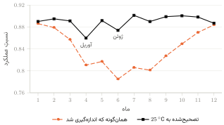
مثال 37.4 (تابستان بد نیست؛ آوریل بد است) پرسش. PR ماهِ ژوئن ۰٫۷۸۵ است با دمای وزندارِ سلولِ \(54.1\,^\circ\text{C}\). آن را به \(25\,^\circ\text{C}\) برگردانید. کدام ماهها پس از تصحیح هنوز بیرون میزنند؟
پاسخ.
\[ \text{PR}_{25} = \frac{0.785}{1 - 0.0035 \times 29.1} = \frac{0.785}{0.898} = 0.874 \]
پس از تصحیح، ماهها میانِ ۰٫۸۸۷ و ۰٫۹۰۱ میمانند، جز آوریل (۰٫۸۶۰) و ژوئن (۰٫۸۷۴).
تفسیر. فرقِ نزدیک به ۰٫۱ میانِ PR ژوئن و دسامبر بیشترش دماست. آنچه پس از تصحیح میماند کارِ خودِ نیروگاه است: خاکگرفتگیِ آوریل و ازکارافتادنِ بلوک در ژوئن. تصحیح چیزی را پنهان نمیکند. مشکلها را از پشتِ پردهٔ فصل بیرون میآورد. اما ضریبِ \(\gamma\) و تخمینِ دمای سلول خودشان عدمِ قطعیت دارند. تصحیحِ با ضریبِ اشتباه، روندی ساختگی میسازد. پس ضریب از برگهٔ دادهٔ ماژولِ نصبشده خوانده میشود و تخمینِ دما با دماسنجِ پشتِ ماژول وارسی میشود. وارسی: \(0.785/0.874 = 0.898\).
37.2.6 نمودارِ آبشاریِ تلفات
ایده. مدلِ ۱۵٫۱ میگوید نیروگاه در این سال چقدر باید تولید میکرد. آبشارِ تلف (به انگلیسی loss waterfall، فصل 15) فاصلهٔ آن عدد تا تولیدِ واقعی را به سهمهای جدا میشکند. هر سهم یک علت، یک مالک و یک چاره دارد:
loss waterfall of the operating year (MWh, synthetic)
model 15.1 (PV + wind at MV) 301,494
soiling (April) -314
inverter outage (June) -339
curtailment -609
other and noise -20
actual 300,212
actual is 99.57 % of the model; each loss has a
cause, an owner and a fix: cleaning (ch 10), the inverter
maker's response time, the grid operator's limits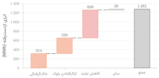
مثال 37.5 (۱٬۲۸۲ مگاواتساعت و صاحبانش) پرسش. فاصلهٔ مدل تا تولیدِ واقعی ۱٬۲۸۲ مگاواتساعت است. آن را تقسیم کنید و برای هر سهم مالک و چاره بنویسید.
پاسخ. خاکگرفتگیِ آوریل ۳۱۴، ازکارافتادنِ بلوکِ B07 در ژوئن ۳۳۹، کاهشِ تولید ۶۰۹ (بیشترش با سقفِ همیشگیِ ۱۰۰ مگاواتیِ صادرات و ۱۶۳ مگاواتساعت در اوت، ماهِ سقفِ ۸۰ مگاواتیِ بهرهبردار) و «سایر و نوفه» ۲۰ مگاواتساعت. تولیدِ واقعی ۹۹٫۵۷٪ مدل است.
تفسیر. خاکگرفتگی به برنامهٔ شستشو برمیگردد (فصل 10). مالکش بهرهبردار است. ازکارافتادن به زمانِ پاسخِ سازندهٔ اینورتر و انبارِ قطعهها برمیگردد (بخشِ ب). کاهشِ تولید تصمیمِ بهرهبردارِ شبکه است. چارهاش در قراردادِ اتصال و در انبارش است (فصل 19). باید جدا گزارش شود، چون نیروگاه سالم بود. سهمِ «سایر» کوچک است. اگر بزرگ بود، یعنی آبشار چیزی را نمیشناسد و باید کاوید. آبشاری که بیشترش «سایر» است، تحلیل نیست. وارسی: \(314 + 339 + 609 + 20 = 1\,282\).
- \(Y_\text{f}\) و \(Y_\text{r}\) هر کدام چه یکایی دارند و چرا نسبتشان بیبُعد است؟
- PR یک ماه ۰٫۸۰ و ضریبِ ظرفیتِ همان ماه ۲۰٪ است. کدام دربارهٔ کیفیتِ کارِ آرایه حرف میزند؟
- یک توقفِ ۱۰ ساعته در دو ماه با ۷۴۴ و ۶۷۲ ساعت. دسترسپذیریِ زمانیِ هر ماه چقدر است؟
- چرا دسترسپذیریِ انرژیایی انگیزهٔ تعمیرکار را با انگیزهٔ مالک یکی میکند؟
- قرارداد ۴۰ ساعت فرمانِ کاهشِ تولید را استثنا میکند. این ساعتها از صورت کم میشوند یا از مخرج؟
- PR ماهی با دمای وزندارِ سلولِ \(45\,^\circ\text{C}\) و PR ۰٫۸۰ را به ۲۵ درجه برگردانید.
- چرا دمای سلولِ ماه را با تابش وزن میدهیم، نه با ساعت؟
- در آبشارِ تلفات سهمِ «سایر» ۳۰٪ است. این دربارهٔ تحلیل چه میگوید؟
- چرا کاهشِ تولید به دستورِ شبکه در آبشار جدا از تلفاتِ نیروگاه میآید؟
- چه چیزهایی کنارِ عددِ PR گزارش میشوند؟
پاسخها: (۱) kWh/kWp و ساعت؛ هر دو ساعتِ معادلِ توانِ نامیاند؛ (۲) PR؛ (۳) ۹۸٫۶۶٪ و ۹۸٫۵۱٪؛ (۴) چون توقف در ساعتِ پرباد گرانتر شمرده میشود؛ (۵) از مخرج؛ (۶) \(0.80/0.93 = 0.860\)؛ (۷) چون ساعتهای پرتابش بیشترِ انرژی را میسازند؛ (۸) آبشار علتها را نمیشناسد؛ (۹) چون نیروگاه سالم بود و مالکِ تصمیم دیگری است؛ (۱۰) حسگرِ مرجع، کالیبراسیون، قاعدهٔ پالایش و کامل بودنِ داده.
37.2.7 انرژیِ مورد انتظار و خطمبنا
ایده. هر شاخصِ مقایسهای یک «انتظار» میخواهد. انرژیِ مورد انتظار انرژیای است که نیروگاهِ سالم با همین هوا تولید میکرد. در نیروگاهِ P آن را مدلِ ۱۵٫۱ میسازد: تابش و دما و باد و چگالیِ ساعت به ساعت وارد میشوند، و توانِ ساعت به ساعت در شینهٔ ۳۳ کیلوولت بیرون میآید (بخش 15.5). خطمبنا فقط یک عدد نیست. یک نسخه از مدل است با پیکربندیِ ثابت و اثرانگشت. کسی که سالِ بعد همین شاخص را حساب میکند باید همین نسخه را به کار ببرد، یا دلیلِ تغییر را بنویسد.
سه چیز خطمبنا را خراب میکند. نخست، ورودیِ هوا از حسگری بیاید که خودش مشکل دارد (بخشِ ت). دوم، مدل با دادههای همان دورهای که قرار است بسنجد «تنظیم» شود. سوم، چیزی در نیروگاه تغییر کند و مدل خبردار نشود (بخشِ چ). مورد دوم را اینجا میبینیم:
a baseline fitted on the period it should judge (April)
actual over model 15.1: 0.968
actual over a baseline scaled to April's own data: 1.000
the learned baseline 'expects' the soiling and the loss
disappears. A baseline is fixed from a reference period
checked to be healthy, kept under version control, and
refitted only with a record of why (ch 35, ch 15 model)مثال 37.6 (خطمبنایی که خاکگرفتگی را «انتظار» دارد) پرسش. کارشناسی میگوید مدلِ ۱۵٫۱ «کمی خوشبین» است و آن را با دادههای آوریل مقیاس میکند تا با واقعیت جور شود. نسبتِ واقعی به مدل پیش و پس از این کار چه میشود؟
پاسخ. پیش از مقیاس ۰٫۹۶۸ است. پس از مقیاس، درست ۱٫۰۰۰ است.
تفسیر. خطمبنای یادگرفته خاکگرفتگی را جزوِ «عادی» حساب کرد و تلفِ ۳۱۴ مگاواتساعتی ناپدید شد. خطمبنا از یک دورهٔ مرجعِ وارسیشده ساخته میشود: دورهای که سالم بودنش با بازرسی و داده نشان داده شده است. پس از آن ثابت میماند و نسخه میگیرد. فقط با سابقهای از دلیل دوباره برازش میشود. این همان قاعدهٔ «دادههای آموزش را برای سنجش به کار نبر» است که بخشِ چ برای پیشبینیها تکرار میکند. وارسی: \(0.968 / 0.968 = 1\).
37.2.8 کامل بودنِ داده و همسنجی
ایده. هیچ سالی دادهٔ کامل ندارد. ثبتکنندهها قطع میشوند، ارتباط میافتد و حسگرها برای کالیبراسیون بیرون میروند. کامل بودنِ داده (فصل 35) سهمِ ساعتهایی است که دادهٔ معتبر دارند. قاعدهٔ اصلی ساده است و زیاد شکسته میشود: صورت و مخرجِ هر شاخص روی همان ساعتها حساب میشوند. این همان همسنجی (به انگلیسی normalisation) است: تقسیمِ چیزی بر همتای خودش.
May with 5 days of energy data missing (logger outage)
data completeness: 83.9 % of hours
PR, energy of valid hours over the whole month's sun: 0.667
PR, both on the same valid hours: 0.816
PR with no gap (known here only because it is synthetic): 0.817
an indicator divides like by like: the gap is removed
from numerator and denominator together, and the report
states the completeness beside the value. A meter gap is
not lost energy - the revenue meter still counted itمثال 37.7 (پنج روزِ بیداده در ماهِ مه) پرسش. ثبتکنندهٔ انرژیِ بلوکها در ماهِ مه پنج روز قطع بود. PR ماه را به دو شکل حساب کنید: انرژیِ ساعتهای معتبر بر تابشِ کلِ ماه، و هر دو روی ساعتهای معتبر.
پاسخ. کامل بودن ۸۳٫۹٪ است. روشِ نخست PR را ۰٫۶۶۷ میدهد. روشِ دوم ۰٫۸۱۶ میدهد. PR بیشکاف، که اینجا فقط چون داده ساختگی است دانسته است، ۰٫۸۱۷ است.
تفسیر. روشِ نخست ۱۸٪ «تلف» ساخت که هرگز رخ نداد. شکافِ داده تلفِ انرژی نیست. کنتورِ درآمدی آن انرژی را شمرد و فروخت. گزارش کامل بودن را کنارِ مقدار مینویسد. اگر کامل بودن از یک آستانه کمتر باشد، مثلاً ۹۰٪، شاخص «ناکافی» برچسب میخورد بهجای آنکه عددی گمراهکننده نشان دهد. وارسی: \(0.667/0.816 \approx 26/31 = 0.839\).
گاهی شکاف را با مدل پر میکنند: انرژیِ مورد انتظار جای انرژیِ اندازهگیرینشده مینشیند. این کار برای گزارشِ تولید رواست، به شرطِ آنکه ساعتهای پرشده برچسب بخورند. برای سنجشِ عملکرد روا نیست، چون مدل را با خودش مقایسه میکند و PR آن ساعتها خودبهخود «عالی» میشود. فصلِ ۳۵ همین قاعده را برای گزارشهای پرشکاف گذاشت (بخش 35.4.11).
37.2.9 کاهشِ تولید جدا از نیروگاه
ایده. کاهشِ تولید به دستورِ شبکه (به انگلیسی curtailment) انرژیای است که نیروگاهِ سالم میتوانست بدهد و شبکه نپذیرفت. دو گونه دارد. یکی سقفِ همیشگیِ ۱۰۰ مگاواتیِ صادرات است که در طراحی دیده شده است (فصل 15). دیگری فرمانهای بهرهبردارِ شبکه است، مثل سقفِ ۸۰ مگاواتیِ اوت. هر دو با سیگنالِ «سقف» در اسکادا ثبت میشوند. انرژیِ ازدسترفتهشان اینطور تخمین زده میشود: کمینهٔ توانِ ممکن و سقف، از توانِ ممکن کم میشود. توانِ ممکن هم از مدل یا از واحدهای آزاد خوانده میشود.
سه قاعده کاهشِ تولید را درست نگه میدارد. اول، ساعتِ کاهشِ تولید ساعتِ آماده است. در دسترسپذیری علیهِ نیروگاه شمرده نمیشود. دوم، انرژیِ کاهشیافته در آبشار جدا میآید. سوم، تخمینِ انرژیِ کاهشیافته عدمِ قطعیتِ خودش را دارد: توانِ ممکن هرگز اندازهگیری نشده است. تسویه با بهرهبردارِ شبکه، اگر قرارداد چنین بخواهد، روی همین تخمین انجام میشود. پس روشِ تخمین پیش از اختلاف نوشته میشود.
- خطمبنای نیروگاهِ P چیست و چه چیزهایی همراهش نگه داشته میشود؟
- سه راهی که خطمبنا خراب میشود را نام ببرید.
- چرا تنظیمِ مدل با دادههای آوریل تلفِ آوریل را پنهان میکند؟
- ماهی با ۲۸ روزِ دادهٔ معتبر از ۳۰ روز. کامل بودن چقدر است؟
- چرا شکافِ داده تلفِ انرژی نیست؟
- پر کردنِ شکاف با مدل کجا رواست و کجا نه؟
- ساعتِ کاهشِ تولید در دسترسپذیریِ زمانی چگونه شمرده میشود؟
- توانِ ممکن ۹۲ مگاوات و سقف ۸۰ مگاوات برای سه ساعت. انرژیِ کاهشیافته چقدر است؟
پاسخها: (۱) مدلِ ۱۵٫۱ با پیکربندیِ ثابت، نسخه و اثرانگشت؛ (۲) ورودیِ معیوب، تنظیم با دادهٔ همان دوره، تغییرِ نیروگاه بیخبر؛ (۳) چون مدل تلف را «عادی» یاد میگیرد؛ (۴) ۹۳٫۳٪؛ (۵) کنتورِ درآمدی آن را شمرد؛ (۶) در گزارشِ تولید با برچسب روا، در سنجشِ عملکرد نه؛ (۷) آماده؛ (۸) \(3 \times 12 = 36\,\text{MWh}\).
37.3 ب. از داده تا تشخیص
شاخص میگوید چیزی درست نیست. نمیگوید چه چیزی. این بخش راهی را دنبال میکند که از دادهٔ خام به یک علتِ ثابتشده و یک دستورِ کار میرسد. شکلِ شکل 37.3 این راه را نشان میدهد. هر گام یک خطای رایج را میگیرد: اعتبارسنجی خطای حسگر را، خطمبنا خطای هوا را، آشکارسازی خطای حوصله را، بازبینیِ انسانی هشدارِ نادرست را، و شاهد خطای حافظه را.
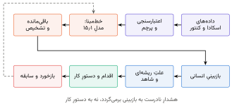
37.3.1 اعتبارسنجیِ داده پیش از هر شاخص
ایده. هر شاخص روی دادهای ساخته میشود که پیشتر وارسی شده است. وارسیها سادهاند و ارزان: داده هست یا نیست؟ مقدار در بازهٔ فیزیکی است؟ حسگر گیر نکرده است؟ شب تابش صفر است؟ فصلهای ۱۲، ۱۳ و ۳۵ این وارسیها را برای تابش، باد و اسکادا ساختند (بخش 35.5.1). اینجا همانها روی یک سال اجرا میشوند که چهار عیب در آن کاشته شده است:
validation checks on a year of hourly data (planted faults)
check hours flagged
missing values 30
wind speed stuck for 6 h or more 12
irradiance above 2 W/m2 at night 4257
irradiance above 1,400 W/m2 0
night readings above 2 W/m2 in 100 % of night hours: not noise
but a constant offset of the pyranometer - serviced, and
the offset removed from the record with a flag
every check runs before any indicator: a stuck anemometer
makes a turbine look like it ignores the wind. Flagged
hours are marked, not deleted, and the indicator says how
many hours it rests on (ch 35, completeness)مثال 37.8 (تابشسنجی که شب هم آفتاب میبیند) پرسش. وارسیها روی یک سالِ ساعتی اجرا شدهاند. چه پیدا کردند و با هر کدام چه میشود؟ (عیبهای کاشتهشده، A-410.)
پاسخ. ۳۰ ساعت داده نیست. بادسنج ۱۲ ساعت پیاپی یک عدد را تکرار کرده است. تابشسنج در ۴٬۲۵۷ ساعتِ شب بیش از ۲ وات بر مترمربع خوانده است، یعنی در همهٔ ساعتهای شب. هیچ ساعتی بیش از ۱٬۴۰۰ وات بر مترمربع نیست.
تفسیر. ۴٬۲۵۷ ساعت از ۴٬۲۵۷ ساعتِ شب نوفه نیست. این یک جابهجاییِ ثابت در خوانشِ تابشسنج است. آن را با سرویسِ حسگر برطرف میکنند و از سابقه با برچسب کم میکنند. ساعتهای پرچمخورده حذف نمیشوند. علامت میخورند و شاخص میگوید روی چند ساعت ساخته شده است. بادسنجِ گیرکرده خطرناکتر است: توربینی که «به باد بیاعتناست» یک خرابیِ دروغین میسازد. وارسی: هر ساعتِ شب پرچم خورده است، پس عیب پیوسته است، نه گاهبهگاه.
37.3.2 باقیماندهٔ روزانه و مجموعِ تجمعی
ایده. باقیماندهٔ روزانه \(r_d\) انرژیِ واقعیِ یک روز است بر انرژیِ مورد انتظارِ آن روز، منهای یک. روزِ سالم نزدیکِ صفر است، با نوفهای کوچک. یک افتِ ناگهانی را در همان روز میبینیم. یک افتِ آهسته، مثل خاکگرفتگی، را نمیبینیم: هر روز کمی بدتر است، و آن کم در نوفه گم میشود. مجموعِ تجمعی (به انگلیسی CUSUM، فصل 8) کمبودهای کوچک را جمع میکند تا از نوفه بزرگتر شوند:
\[ S_d = \max\!\left(0,\; S_{d-1} - r_d - \kappa\right), \qquad \text{هشدار وقتی } S_d > h_\text{s} \tag{37.5}\]
\(\kappa\) کمبودِ مجاز در هر روز است: کمبودهای کوچکتر از آن جمع نمیشوند. \(h_\text{s}\) آستانهٔ تصمیم است. در خروجیِ برنامه این دو با k و h نوشته شدهاند.
def cusum(residuals, k: float, h: float):
"""One-sided lower CUSUM: index where the sum of (-r - k) first exceeds h,
or None. Detects a sustained drop of the residual below zero."""
s = 0.0
for i, r in enumerate(residuals):
s = max(0.0, s + (-r - k))
if s > h:
return i
return Nonedaily PV residual (actual / model - 1) and a CUSUM on it
noise of the residual on ordinary days: 0.008
CUSUM (k 0.01, h 0.05) from 1 April: alarm on day 99 (April 10)
from 31 May: alarm on day 160; the outage began on day 160
a CUSUM adds up small shortfalls until they are too many
to be noise: the step is found on its first day, the slow
soiling drift after 10 days - weeks before the monthly
report shows it
the deepest day of all, day 227 (-12.6 %), is in August:
the export-limit signal explains it, so it is booked as
curtailment, not as a plant fault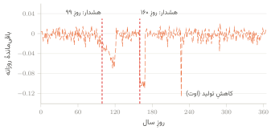
مثال 37.9 (پلّه در یک روز، شیب در ده روز) پرسش. با \(\kappa = 0.01\) و \(h_\text{s} = 0.05\)، مجموعِ تجمعی را یک بار از اولِ آوریل و یک بار از ۳۱ مه آغاز کنید. هر کدام کِی هشدار میدهد؟ عمیقترین روزِ سال کدام است و چرا هشدارِ خرابی نیست؟
پاسخ. نوفهٔ باقیمانده در روزهای عادی ۰٫۰۰۸ است. از اولِ آوریل، هشدار در روزِ ۹۹ است، یعنی دهمِ آوریل. از ۳۱ مه، هشدار در روزِ ۱۶۰ است، همان روزی که بلوک از کار افتاد. عمیقترین روزِ سال روزِ ۲۲۷ با ۱۲٫۶٪- است، در اوت.
تفسیر. پلّهٔ ژوئن ۱۰٪ است و در روزِ اول از \(h_\text{s}\) میگذرد. شیبِ آوریل روزی ۰٫۲٪ است. ده روز طول میکشد تا کمبودها از \(\kappa\) و \(h_\text{s}\) بگذرند. این چند هفته زودتر از گزارشِ ماهانه است. افتِ اوت عمیقتر از هر دو است، اما سیگنالِ سقفِ صادرات آن را توضیح میدهد. پس بهعنوانِ کاهشِ تولید ثبت میشود، نه خرابی. باقیمانده هر کمبودی را نشان میدهد. توضیحِ آن کارِ گامِ بعد است. وارسی: بینوفه، کمبودِ روزِ \(i\) آوریل \(0.06\,i/29\) است و از روزِ ششم از \(\kappa\) بیشتر میشود؛ جمع در روزِ سیزدهم از \(h_\text{s}\) میگذشت. نوفه، که مجموعِ تجمعی بخشِ منفیاش را صفر میکند، هشدار را سه روز جلو انداخت.
37.3.3 آستانه: کمگیری در برابرِ هشدارِ نادرست
ایده. سادهترین آشکارساز یک آستانه روی باقیماندهٔ روزانه است: اگر \(r_d\) از آستانه پایینتر رفت، هشدار. آستانهٔ تنگ مشکلها را زود میگیرد و روزهای سالم را هم میگیرد. آستانهٔ گشاد آرام است و مشکلهای آغازین را از دست میدهد:
a daily alarm when the residual falls below a threshold
threshold days of problems found false alarms in a year
-0.02 32 of 39 15
-0.04 18 of 39 2
-0.06 12 of 39 1
-0.08 9 of 39 1
a tight threshold catches more of the problem days and
calls on healthy days; a loose one stays quiet and misses
the early soiling. The threshold is chosen for what a
false alarm costs (a site visit) against a miss (lost
energy), and the CUSUM is used where both matterمثال 37.10 (کدام آستانه؟) پرسش. در سالِ ساختگی ۳۹ روزِ مشکلدار هست (۳۰ روزِ خاکگرفتگی و ۹ روزِ ازکارافتادگی). یک بازدیدِ بیحاصل ۵۰۰ واحد هزینه دارد. یک روزِ مشکلِ دیدهنشده بهطورِ میانگین ۲۰ مگاواتساعت با ۵۰ واحد بر مگاواتساعت، یعنی ۱٬۰۰۰ واحد. آستانهٔ ۰٫۰۲- را با ۰٫۰۴- مقایسه کنید.
پاسخ. آستانهٔ ۰٫۰۲-: ۳۲ روز گرفته میشود، ۷ روز از دست میرود و ۱۵ هشدارِ نادرست میآید. هزینه: \(7 \times 1\,000 + 15 \times 500 = 14\,500\) واحد. آستانهٔ ۰٫۰۴-: ۱۸ روز گرفته میشود، ۲۱ روز از دست میرود و ۲ هشدارِ نادرست. هزینه: \(21 \times 1\,000 + 2 \times 500 = 22\,000\) واحد.
تفسیر. با این هزینههای آموزشی آستانهٔ تنگتر ارزانتر است. اگر بازدید گرانتر بود، مثلاً با سفرِ دور، برتری برمیگشت. آستانه از هزینهٔ یک هشدارِ نادرست در برابرِ هزینهٔ یک کمگیری انتخاب میشود، نه از «حسِ خوب». مجموعِ تجمعی هر دو را بهتر میکند: کمبودهای پیاپی را جمع میکند، پس بیآنکه روزهای سالم را بگیرد، شیبِ آهسته را هم میگیرد. وارسی: \(32 + 7 = 39\) و \(18 + 21 = 39\).
37.3.4 کیفیتِ هشدارها
ایده. اسکادا هم هشدار میسازد، نه فقط تحلیلگر. فصلِ ۳۵ فلسفهٔ هشدار را گذاشت: هر هشدار یک اقدام دارد، یک اولویت و یک مالک (بخش 35.4.2). پایشِ عملکرد کیفیتِ هشدارها را هم میسنجد، چون هشدارِ بیاقدام توجهِ اپراتور را میخورد:
alarm quality of a month (synthetic counts)
measure count
alarms in the month 3,420
acted on by the operator 410
standing for more than 24 h 37
from the top 10 alarm tags 2,050
acted on: 12 %; top ten tags: 60 % of all alarms
most alarms come from a few bad actors; fixing ten tags
removes six alarms in ten, and the ones left are the ones
an operator acts on (ch 35, alarm philosophy)ایده. ۱۲٪ از هشدارها به اقدام رسیدند. ده برچسبِ پرتکرار ۶۰٪ همهٔ هشدارها را ساختند. این الگوی «بدکارانِ پرتکرار» رایج است. چاره هم ساده است: آن ده برچسب بازبینی میشوند. باند مرده میگیرند، تأخیر میگیرند، یا با حالتِ دستگاه سرکوب میشوند (بخش 35.4.12). هشدارِ ایستادهای که بیش از ۲۴ ساعت مانده است یا اقدامی میخواهد که انجام نشده، یا هیچ اقدامی نمیخواهد. هر دو بازبینی را لازم دارند. همترازیِ رویدادها هم پیششرطِ همهٔ اینهاست: رویدادهای اسکادا، رلهها و اینورترها باید روی یک پایهٔ زمانی باشند تا ترتیبشان قابلِ اعتماد باشد (بخش 35.6.3).
37.3.5 علتِ ریشهای
ایده. علتِ ریشهای (به انگلیسی root cause) علتی است که اگر برطرف شود، مشکل دوباره رخ نمیدهد. علتِ بیواسطه معمولاً آشکار است: اینورتر قطع شد. علتِ ریشهای پشتِ زنجیرهای از «چرا»هاست. هر گام با یک شاهد ثابت میشود، نه با حدس:
root cause of the June outage (synthetic record)
step finding evidence
what B07 at zero for 9 days block data
when first zero 06:10, day 160 event log, UTC
immediate cause trip on DC insulation fault inverter log
why not reset spare monitor not in stock CMMS, store
root cause spares list older than a design change spares register
fix spare added, list tied to notices work order
the root cause is the one that, fixed, stops it happening
again - here a spares list, not the inverter; every step
cites its evidence, kept with the event (lesson B)مثال 37.11 (یک فهرستِ قطعهها، نه یک اینورتر) پرسش. بلوکِ B07 نُه روز صفر بود. زنجیرهٔ علتها را با شاهدِ هر گام بنویسید. علتِ ریشهای کدام است؟ (سابقهٔ ساختگی.)
پاسخ. اینورتر با خطای عایقیِ سمتِ DC قطع شد (سابقهٔ اینورتر). دوباره راه نیفتاد چون پایشگرِ یدکیِ عایق در انبار نبود (سامانهٔ نگهداری و انبار). نبود چون فهرستِ قطعههای یدکی پیش از یک تغییرِ طراحیِ سازنده نوشته شده بود (ثبتِ قطعههای یدکی). چاره: قطعه افزوده شد و فهرست به اعلامیههای سازنده گره خورد (دستورِ کار).
تفسیر. علتِ ریشهای در اینورتر نیست. در یک فهرست است. اگر فقط پایشگرِ عایق عوض میشد، خرابیِ بعدی دوباره نُه روز میبرد. تحلیلِ علتِ ریشهای روشهای رسمی دارد، مثل درختِ خطا یا روشِ «پنج چرا». هستهٔ همه یکی است: هر ادعا یک شاهد، و ایستادن در علتی که مالک و چاره دارد. وارسی: هر ردیف یک ستونِ شاهد دارد که خالی نیست.
37.3.6 شاهد و نگهداریِ آن
ایده. شاهد (به انگلیسی evidence) پیش از آنکه تعمیر آن را تغییر دهد گرد میآید. دادهٔ خامِ اسکادا با درهمسازی (هَش) ثبت میشود. پیکربندیها «همانگونه که یافت شد» ذخیره میشوند. قطعهٔ خراب برچسب میخورد و نگه داشته میشود:
evidence kept with an event (teaching)
item kept as
raw SCADA and historian data untouched copy, hash recorded
event and alarm logs with their time base
settings and configurations as found, before any change
photographs and failed parts labelled, stored
operator and maker statements dated, signed
analysis scripts and their outputs with the data's hash
evidence is collected before the fix changes it, and an
analysis can be repeated from it by someone else - the
basis of a warranty claim, an insurance claim or a
dispute with the grid operatorایده. هدف این است که کسِ دیگری بتواند تحلیل را از همین شاهدها تکرار کند. ادعای ضمانت از سازنده، ادعای بیمه، و اختلاف با بهرهبردارِ شبکه همه روی همین شاهدها میایستند. اسکریپتِ تحلیل هم شاهد است: با درهمسازیِ دادهای که خوانده نگه داشته میشود، تا نتیجه دوباره ساخته شود. فصلِ ۳۶ همین را برای امنیت خواست (بخش 36.6.4).
گردآوریِ شاهد هرگز دلیلِ نزدیک شدن به تجهیزِ برقدار یا ناایمن نیست. قطعهٔ خراب پس از جداسازی و صدورِ مجوزِ کار و به دستِ افرادِ مجاز برداشته میشود (فصل 32). اگر ایمنی ایجاب کند که چیزی پیش از ثبت تغییر کند، ایمنی مقدم است و آن تغییر خودش ثبت میشود.
37.3.7 مرزهای نگهداریِ پیشبینانه
ایده. نگهداریِ پیشبینانه (به انگلیسی predictive maintenance) خرابی را از روی نشانههایش پیش از رخ دادن پیشبینی میکند: دمای جعبهدنده، لرزش، ذرّات در روغن. ابزارِ مفیدی است و ابزارِ کاملی نیست:
what a gearbox temperature model can and cannot do (teaching)
failures a year 4; found early 60 %, with time to act 80 %
failures caught in time: 1.9; value 336,000 u
false alarms 6, a site visit each: 18,000 u
a useful tool - and a partial one: half the failures still
come as surprises, some faults give no warning in this
signal, and a model trained on one maker's gearbox does
not transfer to another. It supports inspection; it does
not replace itمثال 37.12 (نیمی از خرابیها هنوز غافلگیر میکنند) پرسش. یک مدلِ دمای جعبهدنده ۶۰٪ خرابیها را زود میبیند و در ۸۰٪ آنها وقتِ اقدام هست. سالی چهار خرابی رخ میدهد که هر کدام ۲۵۰٬۰۰۰ واحد هزینه دارد. اقدامِ بهموقع ۷۰٪ آن را نجات میدهد. شش هشدارِ نادرست هر کدام یک بازدیدِ ۳٬۰۰۰ واحدی دارد. ارزش و هزینه را حساب کنید. (عددهای آموزشی.)
پاسخ. خرابیهای بهموقع گرفتهشده: \(4 \times 0.6 \times 0.8 = 1.9\). ارزش: \(1.92 \times 0.7 \times 250\,000 = 336\,000\) واحد. هزینهٔ هشدارهای نادرست: \(6 \times 3\,000 = 18\,000\) واحد.
تفسیر. ابزار ارزشمند است، اما ۲٫۱ خرابی از ۴ هنوز بیخبر میآیند. برخی خرابیها در این سیگنال هیچ نشانهای ندارند. مدلی که روی جعبهدندهٔ یک سازنده آموزش دیده به سازندهٔ دیگر منتقل نمیشود. پس نگهداریِ پیشبینانه بازرسی را پشتیبانی میکند و جای آن را نمیگیرد. برنامهٔ نگهداری (فصل 51) هم بر پایهٔ همین مرزها نوشته میشود. ادعای یک فروشنده که «همهٔ خرابیها را پیشبینی میکند» با همین سه عدد وارسی میشود: سهمِ گرفتهشده، زمانِ پیش از خرابی، و نرخِ هشدارِ نادرست. وارسی: \(4 - 1.92 = 2.08\).
- چرا اعتبارسنجی پیش از هر شاخص میآید؟
- تابشسنجی در همهٔ ساعتهای شب ۴ وات بر مترمربع میخوانَد. چه نوع عیبی است؟
- ساعتهای پرچمخورده حذف میشوند یا علامت میخورند؟ چرا؟
- \(r_d\) روزی با ۴۸ مگاواتساعت تولید و ۵۰ مگاواتساعت انتظار چقدر است؟
- با \(\kappa = 0.01\) و \(r_d = -0.03\) پیاپی، مجموعِ تجمعی پس از چند روز از ۰٫۰۵ میگذرد؟
- چرا مجموعِ تجمعی شیبِ آهسته را بهتر از آستانهٔ روزانه میگیرد؟
- چه چیزی آستانهٔ یک آشکارساز را تعیین میکند؟
- ده برچسب ۶۰٪ هشدارها را میسازند. نخستین اقدام چیست؟
- علتِ بیواسطه و علتِ ریشهای چه فرقی دارند؟
- چرا اسکریپتِ تحلیل هم شاهد است؟
- دو دلیل بیاورید که نگهداریِ پیشبینانه جای بازرسی را نمیگیرد.
- افتِ عمیقِ یک روز در اوت چرا خرابی ثبت نشد؟
پاسخها: (۱) شاخص روی دادهٔ معیوب گمراه میکند؛ (۲) جابهجاییِ ثابت؛ (۳) علامت میخورند تا شاخص بگوید روی چند ساعت است؛ (۴) ۰٫۰۴-؛ (۵) سه روز (\(0.02 \times 3 = 0.06\))؛ (۶) کمبودهای پیاپی را جمع میکند؛ (۷) هزینهٔ هشدارِ نادرست در برابرِ کمگیری؛ (۸) بازبینیِ آن ده برچسب؛ (۹) ریشهای آن است که برطرف شدنش تکرار را میبندد؛ (۱۰) تا نتیجه دوباره ساخته شود؛ (۱۱) برخی خرابیها نشانه ندارند و مدل منتقل نمیشود؛ (۱۲) سیگنالِ سقفِ صادرات آن را توضیح داد.
37.4 پ. تحلیلها و مرزهایشان
بخشِ ب یک نیروگاه را با مدلِ خودش سنجید. این بخش ابزارهای دیگری میآورد: مقایسه با همتایان، منحنیِ توان، روندِ چندساله و آشکارسازیِ ناهنجاری. هر کدام کاری را خوب میکند و جایی میلغزد. هر ابزار هم یک انسان را پشتِ خود لازم دارد که تصمیم بگیرد.
37.4.1 مقایسه با همتایان
ایده. ده بلوکِ خورشیدیِ نیروگاهِ P یک آفتاب، یک دما و یک خاک دارند. اگر یکی از بقیه کمتر تولید کند، هوا مقصر نیست. مقایسه با همتایان (به انگلیسی peer comparison) اثرِ هوا را بیمدل حذف میکند. برای سنجشِ دوری از همتایان، میانه و میانهٔ قدرِمطلقِ انحراف (MAD) به کار میروند، نه میانگین و انحرافِ معیار:
\[ z_\text{r} = \frac{y - \tilde{y}}{1.4826\,\operatorname{MAD}}, \qquad \operatorname{MAD} = \operatorname{median}\lvert y_i - \tilde{y} \rvert \tag{37.6}\]
ضریبِ ۱٫۴۸۲۶ کاری میکند که برای دادههای نرمال \(1.4826\,\text{MAD}\) همان انحرافِ معیار باشد. \(\tilde{y}\) میانه است.
specific yield of the ten PV blocks in a year (synthetic)
block kWh/kWp robust z
B01 1799 1.4
B02 1786 -0.1
B03 1798 1.2
B04 1726 -6.8 <- check
B05 1781 -0.7
B06 1784 -0.4
B07 1802 1.6
B08 1788 0.1
B09 1785 -0.2
B10 1793 0.7
blocks share the weather, so comparing them removes it:
the median and the median absolute deviation are not
pulled by the bad block itself, as a mean and a standard
deviation would be. B04 is 3.4 % below its peers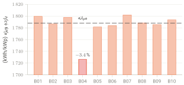
مثال 37.13 (چرا میانه؟) پرسش. بلوکِ B04 ۱٬۷۲۶ کیلوواتساعت بر کیلووات تولید کرده و میانهٔ ده بلوک ۱٬۷۸۸ است. \(1.4826\,\text{MAD}\) برابرِ ۹٫۱ است. \(z_\text{r}\) را حساب کنید. اگر بهجای آن میانگین و انحرافِ معیار به کار میرفت چه میشد؟
پاسخ. \(z_\text{r} = (1\,726 - 1\,788)/9.1 = -6.8\). بلوک ۳٫۴٪ زیرِ همتایانش است و پرچم میخورد.
تفسیر. انحرافِ معیارِ ده بلوک خودِ B04 را هم در بر میگیرد. یک بلوکِ بد آن را بزرگ میکند و \(z\) همان بلوک را کوچکتر نشان میدهد. میانه و MAD از یک نقطهٔ دور اثر نمیگیرند. مقایسه با همتایان یک حد هم دارد: اگر همهٔ بلوکها با هم بد شوند، مثلاً همه خاک بگیرند، هیچکدام از بقیه دور نمیشود. پس این روش مکملِ مدل است، نه جانشینِ آن. وارسی: \(62/9.1 = 6.8\).
37.4.2 منحنیِ توانِ یک توربین
ایده. انرژیِ ماهانهٔ یک توربین با باد بالا و پایین میرود. یک کمبودِ ۳٪ در این نوسان گم میشود. منحنیِ توان آن را آشکار میکند: ساعتها بر پایهٔ سرعتِ باد در دستههای یک متر بر ثانیه گروه میشوند، و توانِ میانگینِ هر دسته با منحنیِ مورد انتظار مقایسه میشود (روشِ دستهها، فصل 11):
one turbine against its expected curve, by wind-speed bin (synthetic)
bin m/s hours expected MW measured MW ratio
3-4 361 0.01 0.01 1.002
4-5 466 0.10 0.10 0.951
5-6 498 0.31 0.29 0.952
6-7 478 0.63 0.60 0.951
7-8 457 1.09 1.04 0.952
8-9 402 1.68 1.60 0.948
9-10 331 2.42 2.30 0.948
10-11 268 3.34 3.18 0.953
11-12 197 4.41 4.40 0.998
12-13 145 5.00 5.01 1.002
13-14 94 5.00 5.02 1.005
14-15 67 5.00 5.00 0.999
15-16 64 5.00 5.03 1.006
energy lost in half a year: 169 MWh of 6,357 (2.7 %)
the loss shows only below rated speed: above it the
controller pitches to 5 MW anyway. Monthly energy hides
it in the weather; the curve by bin shows it in weeks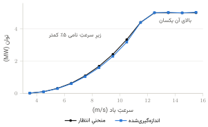
مثال 37.14 (کمبودی که فقط زیرِ سرعتِ نامی هست) پرسش. نسبتِ اندازهگیریشده به مورد انتظار در دستههای ۴ تا ۱۱ متر بر ثانیه حدودِ ۰٫۹۵ و بالای ۱۲ متر بر ثانیه حدودِ ۱٫۰ است. این الگو دربارهٔ علت چه میگوید؟ چقدر انرژی از دست رفته است؟
پاسخ. در نیمسال ۱۶۹ مگاواتساعت از ۶٬۳۵۷، یعنی ۲٫۷٪.
تفسیر. بالای سرعتِ نامی، کنترلگرِ گام تیغهها را میچرخاند تا توان ۵ مگاوات بماند. پس هر کمبودی در جذبِ انرژی آنجا جبران میشود. کمبودی که فقط در ناحیهٔ ۲ هست به کارِ آیرودینامیکِ روتور اشاره دارد: خطای زاویهٔ گام، خطای سمت، یا فرسایشِ لبهٔ تیغه (فصل 11). کمبودِ برقی یا محدودیتِ توان الگوی دیگری دارد و بالای نامی هم دیده میشود. پس منحنی فقط «کم است» نمیگوید. «کجا کم است» هم میگوید، و این نیمی از تشخیص است. یک احتیاط: منحنی به سرعتِ باد بسته است. بادسنجِ روی ناسل در جریانِ پشتِ روتور است و خودش تصحیح لازم دارد. بادسنجِ گیرکرده یا کج کلِ منحنی را جابهجا میکند. وارسی: \(169/6\,357 = 0.027\).
37.4.3 صفِ بازبینی: آشکارساز و انسان
ایده. آشکارسازیِ ناهنجاری (به انگلیسی anomaly detection) با الگوریتمهایی کار میکند که «غیرعادی» را از «عادی» جدا میکنند. هر چه باشد، خروجیاش فهرستی از پرچمهاست که کسی باید بخواند. هزینهٔ آن خواندن بخشی از هزینهٔ ابزار است:
an anomaly detector and the people who read its output
threshold flags a day true faults among them reviewer hours
loose 40 3.2 10.0
12 3.0 3.0
4 2.4 1.0
tight 1 0.9 0.2
(15 minutes to review a flag; synthetic precision values)
a loose detector buries 3.2 real faults a day under 37
false ones and ten hours of reading; a tight one is
believed but misses faults that start small. Every flag
goes to a person who decides; the detector only sorts
the queue (a score is never an instruction to act)مثال 37.15 (ده ساعت خواندن برای سه خرابی) پرسش. آشکارسازِ گشاد روزی ۴۰ پرچم میدهد که ۸٪ آنها درستاند. آشکارسازِ تنگ روزی ۴ پرچم با ۶۰٪ درستی. خواندنِ هر پرچم ۱۵ دقیقه است. هر کدام روزانه چند خرابی میگیرد و چند ساعت کار میخواهد؟
پاسخ. گشاد: ۳٫۲ خرابی با ۱۰ ساعت خواندن. تنگ: ۲٫۴ خرابی با یک ساعت خواندن.
تفسیر. آشکارسازِ گشاد ۰٫۸ خرابیِ بیشتر میگیرد و ۹ ساعت بیشتر وقت میخواهد. در عمل اپراتوری که روزی ۳۷ پرچمِ نادرست میبیند به پرچمها اعتماد نمیکند و پرچمِ درست را هم نمیخواند. این همان خستگیِ هشدار است (فصل 3). آشکارساز فقط صف را مرتب میکند. هر پرچم به یک انسان میرسد که تصمیم میگیرد. امتیازِ آشکارساز هرگز بهخودیِ خود دستورِ اقدام نیست. وارسی: \(40 \times 0.08 = 3.2\) و \(40 \times 0.25 = 10\,\text{h}\).
37.4.4 روندِ افتِ چندساله
ایده. ماژولها هر سال کمی افت میکنند، معمولاً نیم درصد (بخش 10.3.20). برای سنجشِ این نرخ از دادهٔ عملیاتی، فصل مانعِ اصلی است: PR زمستان و تابستان بیش از ده سال افت با هم فرق دارند. روشِ سالبهسال (به انگلیسی year-on-year) هر ماه را با همان ماهِ سالِ بعد مقایسه میکند. فصل در این مقایسه حذف میشود. میانهٔ همهٔ این نسبتها نرخِ افت است. با بازنمونهگیری (بوتاسترپ، فصل 16) یک بازهٔ اطمینان هم کنارش میآید:
degradation of the PV from 5 years of monthly PR (synthetic)
true rate -0.50 %/yr
year-on-year median: -0.49 %/yr, 90 % interval -0.66 to -0.28
a straight line through the first 12 months: +0.6 %/yr
the one-year line reads the season as a trend; pairing
each month with the same month a year later removes the
season, and the interval says how sure the rate is - a
warranty claim on degradation needs that intervalمثال 37.16 (خطی که فصل را روند میخواند) پرسش. پنج سال PR ماهانهٔ ساختگی با افتِ واقعیِ ۰٫۵٪ در سال داریم. نرخ را با روشِ سالبهسال و با یک خطِ راست روی دوازده ماهِ نخست بسنجید.
پاسخ. سالبهسال: ۰٫۴۹٪- در سال با بازهٔ ۹۰ درصدیِ ۰٫۶۶- تا ۰٫۲۸-. خطِ دوازدهماهه: ۰٫۶٪+ در سال.
تفسیر. خطِ یکساله از زمستان تا تابستان پایین میآید و دوباره بالا میرود، و شیبش به ماهِ آغاز بسته است. اینجا حتی علامتش هم اشتباه است. روشِ سالبهسال نرخ را با خطای کم پیدا میکند و بازهاش میگوید چقدر به آن مطمئنیم. ادعای ضمانتِ توان از سازندهٔ ماژول (فصل 10) این بازه را لازم دارد: اگر بازه حدِ ضمانت را در بر بگیرد، داده برای ادعا کافی نیست. تغییرِ حسگر، شستشو و ازکارافتادگی هم باید پیش از این تحلیل از داده جدا شوند، وگرنه در نرخ مینشینند. وارسی: \(0.850 \times (1 - 0.005) = 0.846\) پس از یک سال.
37.4.5 رانشِ مدل و بازبینیِ انسانی
ایده. مدلِ مورد انتظار با گذشتِ زمان از نیروگاه دور میشود: ماژولها افت میکنند، یک توربین منحنیِ تازه میگیرد، یک حسگر جابهجا میشود. این رانشِ مدل (به انگلیسی model drift) است. اگر دیده نشود، باقیماندهها کمکم یک سوگیری میگیرند و آشکارسازها یا خاموش میشوند یا بیدلیل هشدار میدهند. بخشِ چ نمونهای از آن را برای پیشبینی نشان میدهد (بخش 37.8.7).
قاعدهٔ نگهداریِ مدل در نیروگاهِ P سه بند دارد. یک، هر تغییرِ نیروگاه، مثل میانافزارِ تازه یا قطعهٔ تازه یا جابهجاییِ حسگر، در دفترِ تغییرها ثبت میشود و مالکِ مدل را خبر میکند. دو، میانگینِ باقیماندهها ماهانه بازبینی میشود. سوگیریِ پایدار بیش از یک آستانه بازبینیِ مدل را لازم میکند. سه، هر برازشِ دوباره نسخهٔ تازه، دلیلِ نوشته و مقایسه با نسخهٔ پیشین روی یک دورهٔ مشترک دارد. تصمیمِ برازش با یک انسان است، نه با الگوریتم: مدلی که خودش را خودکار با دادهٔ تازه برازش میکند، هر مشکلِ آهسته را «عادی» یاد میگیرد (بخش 37.2.7).
- چرا مقایسه با همتایان اثرِ هوا را بیمدل حذف میکند؟
- پنج بلوک با تولیدِ ویژهٔ ۱۸۰۰، ۱۷۹۰، ۱۷۹۵، ۱۸۰۵ و ۱۷۰۰ داریم. میانه و MAD را بیابید.
- چرا میانگین و انحرافِ معیار برای یافتنِ بلوکِ بد مناسب نیستند؟
- همهٔ بلوکها با هم ۵٪ خاک گرفتهاند. مقایسه با همتایان چه نشان میدهد؟
- کمبودی که فقط بالای سرعتِ نامی دیده شود به چه اشاره دارد؟
- آشکارسازی روزی ۲۰ پرچم با ۱۰٪ درستی دارد. چند خرابیِ درست و چند ساعت خواندن؟
- خستگیِ هشدار چیست و چرا آشکارسازِ گشاد آن را میسازد؟
- چرا روشِ سالبهسال فصل را حذف میکند؟
- بازهٔ نرخِ افت ۰٫۸- تا ۰٫۲- درصد در سال است و ضمانت ۰٫۵٪. ادعا ممکن است؟
- سه رخدادی را نام ببرید که رانشِ مدل میسازند.
- چرا مدلی که خودش را خودکار برازش میکند خطرناک است؟
پاسخها: (۱) همتایان یک هوا دارند؛ (۲) میانه ۱۷۹۵، انحرافها ۵، ۵، ۰، ۱۰، ۹۵ پس MAD برابرِ ۵؛ (۳) نقطهٔ دور خودش آنها را بزرگ میکند؛ (۴) هیچ؛ همه با هم پاییناند؛ (۵) محدودیتِ توان یا کمبودِ برقی؛ (۶) ۲ خرابی، ۵ ساعت؛ (۷) بیاعتمادی به پرچمها از زیادیِ پرچمِ نادرست؛ (۸) هر ماه با همان ماه مقایسه میشود؛ (۹) نه؛ بازه حدِ ضمانت را در بر میگیرد؛ (۱۰) افتِ ماژول، منحنیِ تازه، جابهجاییِ حسگر؛ (۱۱) مشکلِ آهسته را عادی یاد میگیرد.
37.4.6 عدمِ قطعیتِ PR
ایده. PR از سه اندازهگیری ساخته میشود: تابشِ صفحهٔ آرایه، انرژیِ کنتور، و توانِ نامیِ DC. عدمِ قطعیتِ هر کدام در PR مینشیند. چون PR حاصلضرب و خارجقسمت است، عدمِ قطعیتهای نسبی با ریشهٔ مجموعِ مربعات جمع میشوند (فصل 2):
standard uncertainty of the annual PR (teaching values, %)
source u %
plane-of-array irradiation (sensor class) 1.5
energy meter at MV 0.2
DC rating (flash-test tolerance) 1.0
combined (root sum of squares) 1.8
PR 0.832 +/- 0.015 (k = 1), +/- 0.030 (k = 2)
the sensor dominates. A PR of 0.83 cannot be told from
0.85 by this sensor alone; month-to-month changes on the
same sensor are far better known, because its bias is
the same in both months and cancels - trends are
sharper than absolute values (ch 2, uncertainty)مثال 37.17 (PR ۰٫۸۳ یا ۰٫۸۵؟) پرسش. عدمِ قطعیتِ استانداردِ تابش ۱٫۵٪، کنتور ۰٫۲٪ و توانِ نامی ۱٫۰٪ است (مقدارهای آموزشی). عدمِ قطعیتِ PR سالانه چقدر است؟ آیا PR ۰٫۸۳۲ از ۰٫۸۵ جداست؟
پاسخ.
\[ u_\text{PR} = \sqrt{1.5^2 + 0.2^2 + 1.0^2} = 1.8\,\%, \qquad \text{PR} = 0.832 \pm 0.030 \quad (k = 2) \]
تفسیر. بازه ۰٫۸۵ را در بر میگیرد. با این حسگر نمیشود گفت نیروگاه از ۰٫۸۵ کمتر است. تابشسنج سهمِ اصلی را دارد. اما تغییرِ PR از ماهی به ماهِ دیگر روی همان حسگر بسیار دقیقتر است، چون خطای ثابتِ حسگر در هر دو ماه یکی است و حذف میشود. از این رو روندها از مقدارهای مطلق دقیقترند. ادعایی که به مقدارِ مطلقِ PR بسته است، مثلاً ضمانتِ عملکرد، حسگرِ کالیبرهشده و بازه میخواهد. وارسی: \(1.5^2 + 1.0^2 = 3.25\) و \(\sqrt{3.29} = 1.81\).
37.4.7 نمودارِ میانگینِ متحرکِ نمایی
ایده. مجموعِ تجمعی تنها راهِ جمع کردنِ کمبودهای کوچک نیست. میانگینِ متحرکِ نمایی (به انگلیسی EWMA) هر روز وزنِ \(\lambda_\text{e}\) به باقیماندهٔ تازه و وزنِ \(1 - \lambda_\text{e}\) به گذشته میدهد:
\[ z_d = \lambda_\text{e}\, r_d + (1 - \lambda_\text{e})\, z_{d-1}, \qquad \sigma_z = \sigma_r \sqrt{\frac{\lambda_\text{e}}{2 - \lambda_\text{e}}} \tag{37.7}\]
وقتی \(z_d\) از \(-3\sigma_z\) پایینتر رود، هشدار میدهد:
April: an EWMA chart beside the CUSUM of lesson B
noise of the daily residual 0.0085; EWMA weight 0.2, limit 3 x 0.0028
EWMA alarm on day 95 (April 6); CUSUM alarmed on day 99
both charts smooth the noise and remember the past; the
EWMA forgets old days at a fixed rate, the CUSUM adds
shortfalls above an allowance. For a slow drift they
find it within days of each other; the CUSUM is simpler
to explain in a report, the EWMA's line is easier to
plot beside the residual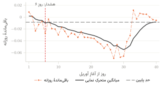
ایده. میانگینِ متحرکِ نمایی در روزِ ششمِ آوریل هشدار داد، چهار روز زودتر از مجموعِ تجمعی. این برتریِ کلیِ یکی بر دیگری نیست: هر دو تنظیم دارند و هر تنظیم میانِ هشدارِ زود و هشدارِ نادرست معامله میکند (بخش 37.3.3). مجموعِ تجمعی در گزارش آسانتر توضیح داده میشود: «کمبودِ انباشته از آستانه گذشت». خطِ میانگینِ متحرک را آسانتر میشود کنارِ باقیمانده کشید، و اپراتور در شکلِ شکل 37.7 میبیند که چیزی آهسته پایین میرود.
37.4.9 خاکگرفتگی از پلّهٔ شستشو
April's soiling read from the data alone
residual, last three days before cleaning -6.10 %
residual, three days after -0.76 %
step at cleaning 5.34 %; slope through April -0.201 %/day
planted: 6 % at the end of the month, 0.207 %/day
the step at a cleaning measures the soiling directly, the
slope says how fast it builds; with both, the cleaning
interval of chapter 10 is re-checked against the site's
real soiling rate, not the design valueایده. شستشو یک آزمایشِ طبیعی است. تفاوتِ باقیمانده پیش و پس از آن مستقیماً خاکگرفتگی را نشان میدهد: اینجا ۵٫۳٪. شیبِ باقیمانده در طولِ ماه هم سرعتِ نشستنِ خاک را نشان میدهد: روزی ۰٫۲۰۱٪، در برابرِ ۰٫۲۰۷٪ِ کاشتهشده. پلّه از ۶٪ِ کاشته کمی کمتر است، چون میانگینِ سه روز را میگیرد و خاکِ روزهای آخر را با روزهای پیش از آن میانگین میکند. با این دو عدد، فاصلهٔ شستشوی فصلِ ۱۰ (بخش 10.4.10) با نرخِ واقعیِ ساختگاه دوباره وارسی میشود، نه با مقدارِ طراحی. ایستگاهِ آلودگی همین اندازهگیری را پیوسته انجام میدهد. پلّهٔ شستشو آن را روی خودِ آرایه تأیید میکند.
37.4.10 چند سال داده برای نرخِ افت؟
width of the 90 % interval of the degradation rate (synthetic,
median over 100 plants with a true rate of -0.50 %/yr)
years of monthly PR median %/yr 90 % interval width
2 -0.55 1.04
3 -0.50 0.79
4 -0.48 0.64
5 -0.50 0.57
6 -0.49 0.51
the interval narrows with every year of data; a claim
that the rate exceeds a warranty limit of 0.7 %/yr is
only possible once the interval is narrower than the
gap between the measured rate and the limitمثال 37.19 (ضمانتِ ۰٫۷ درصد و دادهٔ دو ساله) پرسش. ضمانتِ سازنده افتِ سالانه را حداکثر ۰٫۷٪ میگوید (عددِ آموزشی). پس از دو سال، برآوردِ نیروگاهی نرخِ ۰٫۹٪ را نشان میدهد. با پهنای بازهٔ این جدول، آیا ادعا ممکن است؟
پاسخ. پهنای بازهٔ ۹۰ درصدی پس از دو سال حدودِ ۱٫۰۴ واحد است، یعنی حدودِ ۰٫۵۲± دورِ برآورد. بازه از ۰٫۳۸ تا ۱٫۴۲ درصد است و حدِ ۰٫۷ را در بر میگیرد. ادعا هنوز ممکن نیست. پس از شش سال، پهنا به ۰٫۵۱ واحد میرسد.
تفسیر. دادهٔ عملیاتی برای نرخِ افت کند است: پهنای بازه با جذرِ شمارِ سالها کم میشود. دو راه آن را تند میکند. یکی کاهشِ نوفه: PR تصحیحشده با دما، حسگرِ بهتر، پالایشِ روزهای ابری و خاک. دیگری آزمونِ مستقیم: نمونهای از ماژولها با آزمونِ میدانیِ منحنیِ جریان-ولتاژ یا آزمایشگاه سنجیده میشوند (فصل 10). ادعای ضمانت معمولاً هر دو را میخواهد. وارسی: \(1.04/2 = 0.52\) و \(0.9 - 0.52 = 0.38 < 0.7\).
- عدمِ قطعیتِ تابش ۲٪، کنتور ۰٫۵٪ و توانِ نامی ۱٪. عدمِ قطعیتِ PR؟
- چرا تغییرِ PR روی یک حسگر از مقدارِ مطلقِ آن دقیقتر است؟
- با \(\lambda_\text{e} = 0.2\) و \(\sigma_r = 0.0085\)، \(\sigma_z\) چقدر است؟
- ۵۰۰ آزمون در روز با نرخِ هشدارِ نادرستِ ۰٫۵٪. چند هشدارِ نادرست در روز؟
- چرا قاعدهٔ «سه روزِ پیاپی» خرابیِ کوچک را دیر میگیرد؟
- پلّهٔ شستشو چه چیزی را مستقیم اندازه میگیرد؟
- چرا پهنای بازهٔ نرخِ افت آهسته کم میشود؟
- دو راهِ تند کردنِ سنجشِ نرخِ افت را بگویید.
پاسخها: (۱) \(\sqrt{4 + 0.25 + 1} = 2.3\,\%\)؛ (۲) خطای ثابتِ حسگر حذف میشود؛ (۳) \(0.0085 \times 0.333 = 0.0028\)؛ (۴) ۲٫۵؛ (۵) سه کمبودِ بزرگِ پیاپی برای خرابیِ کوچک نادر است؛ (۶) خاکگرفتگی در لحظهٔ شستشو؛ (۷) با جذرِ شمارِ سالها کم میشود؛ (۸) کاهشِ نوفه و آزمونِ مستقیمِ ماژولها.
37.5 ت. آزمایشگاهِ تشخیص: یک سال، چهار مشکل
این آزمایشگاه مثالِ کارشدهٔ اصلیِ فصل است. دادههای ماهانهٔ یک سال داده شدهاند. چهار ماه بیرون میزنند. باید معلوم شود کدام خاکگرفتگی است، کدام ازکارافتادنِ اینورتر، کدام کاهشِ تولید به دستورِ شبکه و کدام عیبِ حسگر. هر تشخیص سطحِ اطمینانش را میگوید و شاهدِ پیگیریاش را نام میبرد. همهچیز روی دادهٔ ساختگیِ سالِ کارکرد اجرا میشود.
پرونده: companion/ch37/lab_c.py
37.5.1 گامِ ۱: جدولِ ماهانه
ایده. نخست همهٔ ماهها در یک جدول کنارِ هم میآیند: تابشِ صفحهٔ آرایه، انرژیِ واقعی، انرژیِ مدل، نسبتشان، PR روی حسگرِ خودِ نیروگاه، و انرژیِ کاهشیافته. هیچ ستونی بهتنهایی کافی نیست. الگوی ستونها کنارِ هم است که مشکل را نشان میدهد:
the operating year by month (synthetic; PV at MV, model 15.1)
month POA kWh/m2 PV MWh model MWh ratio PR curtailed MWh
Jan 118.9 6325 6333 0.999 0.886 8.9
Feb 137.5 7259 7280 0.997 0.879 57.3
Mar 198.9 10237 10262 0.998 0.857 56.6
Apr 206.2 10039 10369 0.968 0.810 25.2
May 209.7 10289 10342 0.995 0.817 96.7
Jun 231.6 10917 11254 0.970 0.785 0.0
Jul 238.3 11536 11549 0.999 0.806 55.6
Aug 199.9 9617 9673 0.994 0.801 163.2
Sep 188.8 9382 9410 0.997 0.827 94.5
Oct 176.0 9410 9441 0.997 0.890 25.9
Nov 137.4 7200 7204 1.000 0.873 1.1
Dec 98.2 5212 5240 0.995 0.884 24.4
four months stand out: April and June lose energy against
the model, August has the most curtailed energy - energy
the plant could have made - and October's PR is too good:
a plant does not suddenly beat its own model; its sensor
does. Curtailment by the 100 MW export limit appears in
most months (ch 15) and is not a fault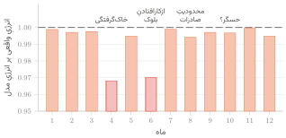
ایده. آوریل و ژوئن نسبتی نزدیکِ ۰٫۹۷ دارند، در برابرِ ۰٫۹۹۴ تا ۱٫۰۰۰ در ماههای دیگر. اوت بیشترین انرژیِ کاهشیافته را دارد. اکتبر PR ۰٫۸۹۰ دارد، بالاتر از ماههای پیش و پس از آن (۰٫۸۲۷ و ۰٫۸۷۳)، در حالی که نسبتِ انرژیاش عادی است. نیروگاه یکباره از مدلِ خودش بهتر نمیشود. حسگرش میشود. کاهشِ تولید با سقفِ ۱۰۰ مگاواتی هم در بیشترِ ماهها دیده میشود (بخش 15.4.7). آن طراحی است، نه عیب.
37.5.2 گامِ ۲: امضای روزانهٔ هر ماهِ مشکوک
ایده. هر علت در دادهٔ روزانه شکلِ خودش را دارد. خاکگرفتگی یک شیب است: هر روز کمی بدتر، در همهٔ بلوکها با هم، و پس از شستشو یا باران برمیگردد. ازکارافتادنِ یک بلوک یک پلّه است: یکباره یکدهم کمتر، و دادهٔ خودِ آن بلوک صفر است. کاهشِ تولید یک سقفِ صاف است: توان روی عددی ثابت میماند و سابقهٔ فرمان آن عدد را نشان میدهد. عیبِ حسگر یک جهشِ PR است بیجهشِ انرژی. کدی که امضای روزانه را میسازد:
def daily_ratio(y, m):
"""Per day of month m: (day, actual/model, PR on the plant's sensor,
PR on the reference sensor)."""
days = np.unique(y["day"][y["month"] == m])
out = []
for d in days:
s = y["day"] == d
ex = y["pv_exp"][s].sum()
e_kwh = y["pv_act"][s].sum() * 1000
h_plant = max(y["poa_sensor"][s].sum() / 1000, 1e-6)
h_ref = max(y["poa_true"][s].sum() / 1000, 1e-6)
out.append((d, y["pv_act"][s].sum() / ex if ex > 1 else np.nan,
pf.performance_ratio(e_kwh, src.P_DC_KWP, h_plant),
pf.performance_ratio(e_kwh, src.P_DC_KWP, h_ref)))
return np.array(out)the daily signature of each suspect month (synthetic)
April: actual/model falls 0.20 % a day, all month, all
blocks alike, back to normal after the cleaning: SOILING
June: actual/model 0.898 for 9 days, 1.001 otherwise - a step
of a tenth, block B07 at zero in its own data: INVERTER OUTAGE
August: 40 hours held at the 80 MW limit, 163 MWh not
taken; the set-point log shows the grid operator's limit:
CURTAILMENT - an external loss, excluded from availability
October: PR on the plant's sensor 0.930 against 0.856
on the reference sensor for 20 days, energy unchanged:
SENSOR FAULT - the plant is fine, the pyranometer is not
each cause leaves a different shape: a slope, a step, a
flat top, a jump in PR without a jump in energy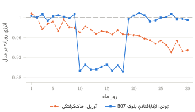
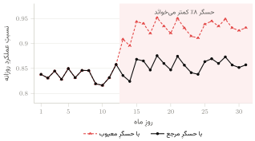
مثال 37.20 (چهار ماه، چهار علت (مثالِ کارشده)) پرسش. با جدولِ ماهانه و امضای روزانه، علتِ هر یک از چهار ماهِ مشکوک را تعیین کنید. برای هر کدام سطحِ اطمینان و شاهدِ پیگیری بنویسید. (سالِ ساختگی، A-409، A-410، مدلِ ۱۵٫۱، بستهٔ دادهٔ 1.1.0، S0.)
پاسخ.
| ماه | امضا | تشخیص | اطمینان | شاهدِ پیگیری |
|---|---|---|---|---|
| آوریل | نسبت روزی ۰٫۲٪ پایین میآید، همهٔ بلوکها با هم، پس از شستشو برمیگردد | خاکگرفتگی | بالا | ایستگاهِ آلودگی، بازدیدِ ماژولها، سابقهٔ شستشو |
| ژوئن | نسبتِ ۰٫۸۹۸ برای نُه روز، ۱٫۰۰۱ در بقیهٔ ماه؛ بلوکِ B07 صفر | ازکارافتادنِ اینورتر | بالا | سابقهٔ اینورتر، دستورِ کار، سابقهٔ انبار |
| اوت | ۴۰ ساعت روی ۸۰ مگاوات، ۱۶۳ مگاواتساعت پذیرفتهنشده | کاهشِ تولید به دستورِ شبکه | بالا | سابقهٔ نقطهٔ تنظیمِ بهرهبردارِ شبکه |
| اکتبر | PR حسگرِ نیروگاه ۰٫۹۳۰ در برابرِ ۰٫۸۵۶ مرجع برای ۲۰ روز؛ انرژی بیتغییر | عیبِ حسگر | متوسط تا بالا | بازرسیِ تابشسنج، مقایسه با حسگرِ دوم، کالیبراسیون |
تفسیر. کلیدِ تفکیک این است که هر علت روی کدام ستون اثر میگذارد. خاکگرفتگی و ازکارافتادگی انرژی را کم میکنند و مدل این را میبیند. کاهشِ تولید انرژی را کم میکند، ولی سیگنالِ سقف توضیحش میدهد. عیبِ حسگر انرژی را تغییر نمیدهد. فقط مخرجِ PR را جابهجا میکند. PR بالاتر از انتظار به همان اندازهٔ PR پایینتر مشکوک است. یک عیبِ آهستهتر در حسگر، مثلاً خاکی که روی خودِ تابشسنج مینشیند، میتواند خاکگرفتگیِ آرایه را پنهان کند: هر دو با هم پایین میآیند و PR ثابت میماند (فصل 12). از این رو نیروگاهِ P دو تابشسنج و یک سلولِ مرجعِ پاکشده دارد. وارسی: \(0.930/0.856 = 1.086 \approx 1/0.92\)، همان ۸٪ کمخوانی.
37.5.3 گامِ ۳: سطحِ اطمینان و آنچه آن را بالا میبرد
ایده. تشخیص یک ادعاست و ادعا درجهٔ اطمینان دارد. نیروگاهِ P سه سطح به کار میبرد. بالا: امضا روشن است و یک شاهدِ مستقل، مثل سابقهٔ اینورتر یا سابقهٔ فرمان، آن را تأیید میکند. متوسط: امضا روشن است ولی شاهدِ مستقل هنوز نیامده است. پایین: امضا با بیش از یک علت جور است. هر تشخیصِ متوسط یا پایین یک شاهدِ پیگیری و یک موعد دارد.
اکتبر در ابتدا «متوسط» است. جهشِ PR بیجهشِ انرژی عیبِ حسگر را نشان میدهد، اما تا کسی تابشسنج را نبیند، توضیحِ دیگری هم ممکن است. مثلاً ممکن است حسگرِ مرجع جابهجا شده باشد. بازرسی، که لایهٔ خاک یا کجیِ نصب را نشان میدهد، اطمینان را به «بالا» میرساند. پس از آن، ۲۰ روزِ دادهها با حسگرِ دوم دوباره حساب و برچسبگذاری میشوند. دادههای اصلی دستنخورده میمانند.
تحلیلگر از دفتر بیرون میگوید «احتمالاً خاکگرفتگی». تکنسین در میدان میبیند و ثبت میکند. اگر دستورِ شستشو فقط بر پایهٔ تحلیل صادر شود و ماژولها تمیز باشند، هزینهٔ شستشو هدر رفته و علتِ واقعی هنوز پیدا نشده است. در نیروگاهِ P هر تشخیصِ منجر به هزینه دستِکم یک شاهدِ میدانی را پیش از اقدام یا همزمان با آن لازم دارد.
37.5.4 گامِ ۴: گزارشِ ماه
ایده. گزارشِ ماهانهٔ نیروگاهِ P برای هر انحراف چهار چیز مینویسد: انرژیِ ازدسترفته با روشِ تخمین، علت با سطحِ اطمینان، مالک، و اقدام با موعد. دستهبندیِ علتها همان دستهبندیِ بخشِ ث است: درونی (خرابی، کارِ برنامهریزیشده)، بیرونی (شبکه، هوا) یا نامعلوم. کامل بودنِ داده هم کنارِ هر عدد میآید. گزارش با یک «همهچیز خوب است» آغاز نمیشود. با فاصلهٔ مدل تا واقعیت آغاز میشود و نشان میدهد چه سهمی از آن فاصله توضیح داده شده است. آنچه توضیح داده نشده است، یک پرسشِ باز است با یک مالک.
- کدام دو ستونِ جدولِ ماهانه با هم عیبِ حسگر را نشان میدهند؟
- خاکگرفتگی و ازکارافتادنِ یک بلوک در امضای روزانه چه فرقی دارند؟
- کاهشِ تولیدِ اوت را چه شاهدی از عیبِ نیروگاه جدا میکند؟
- PR بالاتر از انتظار چرا مشکوک است؟
- خاکی که روی تابشسنج و آرایه با هم مینشیند PR را چگونه نشان میدهد؟
- سه سطحِ اطمینانِ تشخیص را تعریف کنید.
- پس از تأییدِ عیبِ حسگر، با دادههای ۲۰ روز چه میشود؟
- گزارشِ ماهانه برای هر انحراف چه چهار چیزی مینویسد؟
پاسخها: (۱) نسبتِ انرژی (عادی) و PR (بالا)؛ (۲) شیبِ پیوسته در برابرِ پلّهٔ ناگهانی؛ (۳) سابقهٔ نقطهٔ تنظیمِ بهرهبردارِ شبکه؛ (۴) نیروگاه یکباره از مدلش بهتر نمیشود؛ (۵) ثابت، و خاکگرفتگی پنهان میماند؛ (۶) بالا با شاهدِ مستقل، متوسط بیآن، پایین با چند علتِ ممکن؛ (۷) با حسگرِ دوم دوباره حساب و برچسبگذاری میشوند و اصل میماند؛ (۸) انرژیِ ازدسترفته، علت و اطمینان، مالک، اقدام و موعد.
37.6 ث. انضباطِ دادههای قابلیتِ اطمینان
بخشهای پیشین انرژی را سنجیدند. این بخش رویدادها را میسنجد: کی چیزی از کار افتاد، چرا، چقدر طول کشید، و چند بار. پنج مفهوم را باید از هم جدا نگه داشت. قابلیتِ اطمینان (به انگلیسی reliability) احتمالِ کار کردنِ یک واحد بیخرابی در یک مدت است. دسترسپذیری سهمِ زمانی است که واحد آماده بود. نگهداشتپذیری (فصل 18) آسانیِ برگرداندنِ آن پس از خرابی است. عملکرد کیفیتِ کارِ واحد در زمانی است که کار میکند، مثل PR یا منحنیِ توان. دسترسپذیریِ داده سهمِ زمانی است که دادهاش هست. توربینی میتواند کاملاً در دسترس و کمعملکرد باشد، یا پرعملکرد و بیداده. گزارشی که اینها را در یک عدد بریزد، هیچکدام را درست نمیگوید. روشهای کمّیِ قابلیتِ اطمینان، مثل درختِ خطا و تحلیلِ مارکوف، در فصلِ ۵۲ میآیند (فصل 52). این بخش دادهای را میسازد که آن روشها لازم دارند.
37.6.1 ردهبندیِ رویدادها
ایده. هر ساعتِ هر واحد دقیقاً در یک دسته میافتد. دستهها با قاعدههای ورود و خروجِ نوشتهشده انتخاب میشوند. قرارداد تعیین میکند کدام دستهها علیهِ دسترسپذیری شمرده میشوند. استانداردِ دسترسپذیریِ سامانههای بادی (STD-165) چنین مدلِ اطلاعاتیای را شرح میدهد. دستهها و نامهایش در قرارداد مشخص میشوند:
the categories an hour can fall in (teaching taxonomy)
category examples charged to
operating producing -
available, idle no wind, no sun nobody
forced outage fault, trip, repair plant
planned outage service in its window plant, often excluded
external grid, operator's limit, ice outside the plant
unknown data missing nobody until resolved
every hour of every unit falls in exactly one category,
chosen by written entry and exit rules; the contract
decides which categories count against availability
(STD-165 describes such an information model)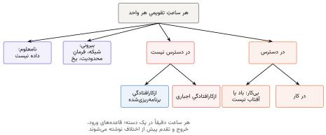
ایده. دو دسته بیش از بقیه اختلاف میسازند. «بیرونی» یعنی واحد آماده بود و چیزی بیرون از نیروگاه آن را نگه داشت. اگر مرزِ «نیروگاه» دقیق نوشته نشود، هر خرابیای را میشود «بیرونی» خواند. «نامعلوم» یعنی داده نیست. تا وقتی روشن نشده، به هیچکس نسبت داده نمیشود. اما گزارش باید بگوید چند ساعت در این دسته مانده است، وگرنه شکافِ داده جای ساعتهای بد را میگیرد.
37.6.2 مرزهای یک خرابی و زمانِ ازکارافتادگی
ایده. یک توقف چند بخش دارد. زمانِ ازکارافتادگی از قطع تا بازگشت به کار است. زمانِ تعمیر فقط زمانِ دستبهکار بودنِ تعمیرکار است. انتظار از قطع تا رسیدنِ تعمیرکار است. بررسیِ راهاندازی از پایانِ تعمیر تا بازگشت به کار است:
one turbine trip and its times (teaching, hours of the day)
trip 10.00, technician on site 14.00, repaired 16.00, back in service 16.33
downtime (trip to service): 6.33 h
repair time (hands on the fault): 2.00 h
waiting (trip to arrival): 4.00 h
restart checks: 0.33 h
'mean time to repair' can mean 2 h or 6.3 h: a report
names its boundaries, and the waiting - often the largest
part - is a separate number, because it has a separate
cure (spares, access, staff on site)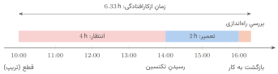
مثال 37.21 (میانگینِ زمانِ تعمیر: ۲ ساعت یا ۶٫۳ ساعت؟) پرسش. توربینی ساعتِ ۱۰ قطع میشود. تکنسین ساعتِ ۱۴ میرسد، تعمیر ساعتِ ۱۶ تمام میشود و توربین ساعتِ ۱۶:۲۰ به کار برمیگردد. «زمانِ تعمیر» چقدر است؟
پاسخ. زمانِ ازکارافتادگی ۶٫۳۳ ساعت است: ۴ ساعت انتظار، ۲ ساعت تعمیر و ۰٫۳۳ ساعت بررسی.
تفسیر. میانگینِ زمانِ تعمیر (MTTR) بسته به تعریف ۲ یا ۶٫۳ ساعت است. پیمانکار گاهی عددِ کوچک را گزارش میکند و مالک عددِ بزرگ را تجربه میکند. گزارش مرزهایش را میگوید. انتظار، که اغلب بزرگترین بخش است، جدا نوشته میشود، چون چارهاش جداست: قطعهٔ یدکی، راهِ دسترسی، و تکنسینِ مقیم. بخشِ ج نشان میدهد این تفکیک چقدر میارزد. وارسی: \(4 + 2 + 0.33 = 6.33\).
37.6.3 دو دسته در یک زمان
ایده. گاهی دو چیز همزمان رخ میدهد. توربینی خراب است و در همان زمان شبکه هم قطع است. ساعتهای همپوشان به کدام دسته میروند؟
a 10 h turbine fault with a 3 h grid outage inside it (March)
fault charged for all 10 h: availability 98.656 %
grid outage takes its 3 h first, as external: 99.055 %
two categories at once need a priority rule, written
before the dispute: the same log gives two answersمثال 37.22 (قاعدهٔ تقدم، پیش از اختلاف) پرسش. خرابیِ ۱۰ ساعتهای در مارس با یک قطعیِ ۳ ساعتهٔ شبکه همپوشان است. دسترسپذیری را با دو قاعدهٔ تقدم حساب کنید.
پاسخ. اگر همهٔ ۱۰ ساعت به خرابی برسد: \(734/744 = 98.656\,\%\). اگر قطعیِ شبکه مقدم باشد، ۳ ساعت بیرونی است و از مخرج کم میشود: \(734/741 = 99.055\,\%\).
تفسیر. یک سابقه دو جواب دارد. استدلالِ هر دو طرف هم معقول است. مالک میگوید توربین در هر حال خراب بود. پیمانکار میگوید در آن سه ساعت هیچ توربینی کار نمیکرد. پس قاعدهٔ تقدم پیش از نخستین اختلاف نوشته میشود. بیآن قاعده، هر ماه همین بحث تکرار میشود. وارسی: \(744 - 10 = 734\) و \(744 - 3 = 741\)؛ ساعتهای کنارگذاشته فقط از مخرج کم میشوند و به صورت افزوده نمیشوند (مثال 37.3).
37.6.4 کارِ برنامهریزیشدهای که طول میکشد
a scheduled gearbox oil change that overruns (teaching)
planned window 24 h, work took 30 h
planned outage: 24 h (excluded if the contract excludes it)
overrun: 6 h, charged as forced outage
the plan is recorded before the work starts; whatever
runs past it is a forced outage, or 'planned' would
swallow every delayایده. برنامه پیش از آغازِ کار ثبت میشود: کار، واحد، پنجره. آنچه از پنجره بگذرد ازکارافتادگیِ اجباری است. اگر چنین نباشد، «برنامهریزیشده» هر تأخیری را در خود فرو میبرد. کارِ برنامهریزیشدهای هم که بیثبتِ قبلی آغاز شود، برنامهریزیشده شمرده نمیشود.
37.6.5 سلسلهمراتبِ تجهیزات و کدِ خرابی
ایده. هر سابقهٔ خرابی به یک سلسلهمراتبِ تجهیزات گره میخورد: نیروگاه، واحد، سامانه، قطعه. این همان ساختارِ شکستِ محصولِ فصلِ ۱۸ است و همان شناسههای مکانِ کارکردیِ فصلِ ۳۵ (بخش 35.7.9). هر خرابی سه کد هم میگیرد: نشانه (چه دیده شد)، علت (چرا) و اقدام (چه شد). کدها از فهرستِ بسته انتخاب میشوند، نه با متنِ آزاد، تا بشود آنها را شمرد:
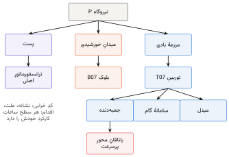
failures of 12 turbines in a year by system (synthetic, coded)
system failures share downtime h share
gearbox 1 2 % 240 33 %
converter 9 20 % 126 17 %
generator 2 4 % 120 16 %
pitch system 11 24 % 88 12 %
control and comms 14 30 % 56 8 %
hydraulics 5 11 % 50 7 %
yaw system 4 9 % 48 7 %
the many small faults (control, pitch) are not where the
downtime is: one gearbox costs more hours than all the
control faults together. Coding every failure to the
same hierarchy (plant, turbine, system, component) is
what makes this sort possible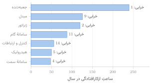
مثال 37.23 (پرشمارترین، گرانترین نیست) پرسش. کنترل و ارتباطات ۱۴ خرابی دارد و جعبهدنده یک. کدام بیشتر ازکارافتادگی ساخته است؟ کدام را نخست باید چاره کرد؟
پاسخ. جعبهدنده ۲۴۰ ساعت (۳۳٪ کل) و کنترل و ارتباطات ۵۶ ساعت (۸٪).
تفسیر. فهرستی که فقط شمار را مرتب کند، کنترل را بالا میگذارد. فهرستی که ساعت را مرتب کند، جعبهدنده را. برای انرژی ساعتها مهماند. برای هزینهٔ نیروی انسانی، شمار. هر دو فهرست ساخته میشوند، و این فقط با کدگذاریِ همهٔ خرابیها به یک سلسلهمراتب ممکن است. متنِ آزاد مثل «توربین ریست شد» در هیچکدام شمرده نمیشود. وارسی: \(240/728 = 0.33\).
37.6.6 زمانِ در معرض و بازهٔ نرخِ خرابی
ایده. نرخِ خرابی شمارِ خرابیها بر زمانِ در معرض (به انگلیسی exposure) است. زمانِ در معرض ساعتهایی است که واحد در وضعی بود که میتوانست خراب شود. برای مبدل، ساعتِ کارکرد معنا دارد، نه ساعتِ تقویمی. با چند خرابی، نرخ عدمِ قطعیتِ بزرگی دارد. بازهٔ آن از توزیعِ کایدو میآید:
\[ \hat{\lambda} = \frac{n_\text{f}}{T_\text{exp}}, \qquad \lambda_\text{lo} = \frac{\chi^2_{\alpha/2;\,2n_\text{f}}}{2\,T_\text{exp}}, \quad \lambda_\text{hi} = \frac{\chi^2_{1-\alpha/2;\,2n_\text{f}+2}}{2\,T_\text{exp}} \tag{37.8}\]
def mtbf_censored(failure_hours, running_hours) -> float:
"""Exponential MLE: all exposure (failed and still running) over
the number of failures."""
n = len(failure_hours)
if n == 0:
raise ValueError("no failures: give a bound, not an estimate")
return (sum(failure_hours) + sum(running_hours)) / n
def rate_interval(failures: int, exposure_h: float, conf: float = 0.9):
"""Two-sided interval of a constant failure rate (per hour)."""
a = 1 - conf
lo = 0.0
if failures:
lo = stats.chi2.ppf(a / 2, 2 * failures) / (2 * exposure_h)
hi = stats.chi2.ppf(1 - a / 2, 2 * failures + 2) / (2 * exposure_h)
return lo, hiconverter failure rate per operating hour, with a 90 % interval
fleet failures operating h rate /1e5 h interval
model A, 8 converters 6 64,474 9.31 4.05-18.37
model B, 4 converters 1 21,024 4.76 0.24-22.56
per calendar hour model B looks 3.0 times better; per
operating hour (B ran 60 % of the time) only 2.0 times,
and with one failure its interval is so wide that it
overlaps A's almost entirely - the two models cannot be
told apart. A rate is reported with its exposure and its
interval, never aloneمثال 37.24 (مدلِ ب سه برابر بهتر نیست) پرسش. هشت مبدلِ مدلِ الف در یک سال ۶ خرابی داشتهاند و ۹۲٪ وقت کار کردهاند. چهار مبدلِ مدلِ ب یک خرابی داشتهاند و ۶۰٪ وقت کار کردهاند. نرخها را با ساعتِ تقویمی و با ساعتِ کارکرد مقایسه کنید و بازهٔ ۹۰ درصدی بدهید.
پاسخ. با ساعتِ تقویمی، ب ۳٫۰ برابر بهتر به نظر میرسد. با ساعتِ کارکرد، فقط ۲٫۰ برابر. بازهٔ ۹۰ درصدیِ الف ۴٫۰۵ تا ۱۸٫۳۷ و بازهٔ ب ۰٫۲۴ تا ۲۲٫۵۶ خرابی در صد هزار ساعت است.
تفسیر. بازهٔ ب تقریباً همهٔ بازهٔ الف را در بر میگیرد. با یک خرابی نمیشود گفت ب بهتر است. فقط میشود گفت هنوز معلوم نیست. نرخ همیشه با زمانِ در معرض و بازهاش گزارش میشود، نه تنها. خریدِ مبدل بر پایهٔ «ب سه برابر بهتر است» یک تصمیم بر پایهٔ نوفه است. وارسی: \(6/64\,474 = 9.31 \times 10^{-5}\) در ساعت.
37.6.7 سابقههای سانسورشده
ایده. پس از دو سال، چهار پروانه از دوازده پروانهٔ خنککنِ اینورتر خراب شدهاند و هشت تا هنوز کار میکنند. میانگینِ عمرِ «پروانه» چقدر است؟ پروانههای سالم هم دانستهای دارند: دستکم ۱۷٬۵۲۰ ساعت کار کردهاند. سابقهای که پایانش هنوز نیامده سانسورشده (به انگلیسی censored) است. برآوردِ درست همهٔ زمانِ در معرض را بر شمارِ خرابیها تقسیم میکند:
\[ \widehat{\text{MTBF}} = \frac{\sum t_\text{fail} + \sum t_\text{run}}{n_\text{f}} \tag{37.9}\]
12 inverter fans: 4 failed, 8 still running after 2 years
mean of the failed ones only: 9,650 h
all exposure over failures (censored estimate): 44,690 h
averaging only the failed items ignores every hour the
survivors ran and makes the fan look 4.6 times worse
than it is; still-running items are 'censored' and count
as exposure without a failureمثال 37.25 (پروانههایی که هنوز کار میکنند) پرسش. چهار پروانه در ۳٬۲۰۰، ۷٬۹۰۰، ۱۲٬۴۰۰ و ۱۵٬۱۰۰ ساعت خراب شدهاند. هشت تا پس از ۱۷٬۵۲۰ ساعت هنوز کار میکنند. میانگینِ عمر را به دو روش برآورد کنید.
پاسخ. میانگینِ چهار خرابشده: ۹٬۶۵۰ ساعت. برآوردِ سانسورشده:
\[ \widehat{\text{MTBF}} = \frac{38\,600 + 8 \times 17\,520}{4} = \frac{178\,760}{4} = 44\,690\,\text{h} \]
تفسیر. روشِ نخست همهٔ ساعتهایی را که پروانههای سالم کار کردهاند نادیده میگیرد و پروانه را ۴٫۶ برابر بدتر نشان میدهد. این خطا در دادههای عملیاتی رایج است، چون پایگاهِ داده فقط خرابیها را ثبت میکند. فهرستِ واحدهای سالم و ساعتِ کارشان جداگانه نگه داشته میشود. این برآورد فرض میکند نرخِ خرابی ثابت است. اگر نباشد، درس بعد لازم است. وارسی: \(44\,690/9\,650 = 4.6\).
37.6.8 توزیعِ وایبول برای فرسودگی
ایده. برخی قطعهها با سن بیشتر خراب میشوند: یاتاقان، تیغه، روغن. نرخِ ثابت این را نمیبیند. توزیعِ وایبول (فصل 3) با پارامترِ شکلِ \(k\) و پارامترِ مقیاسِ \(c\) سهمِ خرابشده تا سنِ \(t\) را میدهد:
\[ F(t) = 1 - \exp\!\left[-\left(\frac{t}{c}\right)^{k}\right] \tag{37.10}\]
اگر \(k > 1\) باشد، نرخِ خرابی با سن بالا میرود (فرسودگی). اگر \(k = 1\)، ثابت است. اگر \(k < 1\)، پایین میآید (خرابیهای زودرس). برازش با بیشینهسازیِ درستنمایی انجام میشود و سابقههای سانسورشده را هم در بر میگیرد. استانداردِ تحلیلِ وایبول (STD-166) روشها را شرح میدهد.
def weibull_mle(failures, censored):
"""Two-parameter Weibull (shape k, scale lam) by maximum likelihood with
right-censored items."""
t_f = np.asarray(failures, float)
t_c = np.asarray(censored, float)
def nll(p):
k, lam = np.exp(p)
z_f, z_c = t_f / lam, t_c / lam
ll = np.sum(np.log(k / lam) + (k - 1) * np.log(z_f) - z_f ** k)
return -(ll - np.sum(z_c ** k))
x0 = [0.0, math.log(np.mean(np.r_[t_f, t_c]))]
res = optimize.minimize(nll, x0=x0, method="Nelder-Mead")
k, lam = np.exp(res.x)
return float(k), float(lam)
def crow_amsaa_beta(times, t_end: float) -> float:
"""Reliability-growth slope (time-truncated): beta < 1 improving,
> 1 deteriorating, about 1 steady."""
t = np.asarray(times, float)
n = len(t)
return n / np.sum(np.log(t_end / t))Weibull fit of 40 main bearings after 50,000 h (synthetic)
failed 20, still running 20
shape k = 2.89, scale = 56,180 h (true 2.5 and 60,000)
share failed by 80,000 h on this fit: 94 %
a constant rate on the same record (MTBF 84,427 h) predicts 61 %
a shape above 1 means wear-out: the rate rises with age,
and a constant rate reads it as chance and under-plans the
later years; spares and exchanges are planned by age, not
by an average rate (STD-166)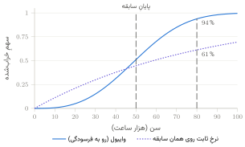
مثال 37.26 (نرخِ ثابت سالهای آخر را کم برنامهریزی میکند) پرسش. ۴۰ یاتاقانِ اصلی پس از ۵۰٬۰۰۰ ساعت: ۲۰ خراب و ۲۰ سالم. برازشِ وایبول \(k = 2.89\) و \(c = 56\,180\,\text{h}\) میدهد. تا ۸۰٬۰۰۰ ساعت چه سهمی خراب میشود؟ نرخِ ثابت چه میگوید؟
پاسخ. وایبول: \(1 - \exp[-(80\,000/56\,180)^{2.89}] = 0.94\). نرخِ ثابت با \(\text{MTBF} = 84\,427\,\text{h}\): \(1 - e^{-80\,000/84\,427} = 0.61\).
تفسیر. هر دو مدل تا ۵۰٬۰۰۰ ساعت با داده جورند. پس از آن جدا میشوند، و دقیقاً همانجاست که برنامهٔ قطعهها و تعویضها ساخته میشود. نرخِ ثابت فرسودگی را «تصادف» میخواند و یکسوم از یاتاقانهایی را که لازم میشوند از برنامه جا میاندازد. شکلِ ۲٫۸۹ به ۲٫۵ِ واقعیِ دادههای ساختگی نزدیک است. با ۲۰ خرابی، خطایش هنوز بزرگ است. برآوردِ وایبول هم بازه میخواهد. وارسی: \((80/56.18)^{2.89} = 2.78\) و \(1 - e^{-2.78} = 0.94\).
37.6.9 رشدِ قابلیتِ اطمینان در ناوگانِ تازه
ایده. ناوگانِ تازهٔ اینورترها در سالِ نخست خرابیهای زیادی دارد که کمکم کم میشوند: عیبهای ساخت و نصب یکییکی پیدا و برطرف میشوند. رشدِ قابلیتِ اطمینان (به انگلیسی reliability growth) را مدلِ کرو-امسا (به انگلیسی Crow-AMSAA) میسنجد. شمارِ تجمعیِ خرابیها \(N(t) = \lambda t^{\beta_\text{g}}\) است. روی محورهای لگاریتمی، یک خطِ راست با شیبِ \(\beta_\text{g}\) است. برآوردِ شیب برای دادهٔ بریدهشده در زمانِ \(T\):
\[ \hat{\beta}_\text{g} = \frac{n}{\sum_{i=1}^{n} \ln (T / t_i)} \tag{37.11}\]
failures of the new PV inverter fleet in its first year (synthetic)
11 failures; Crow-AMSAA slope beta = 0.38
beta below 1: failures come further apart as the fleet
settles - early defects being removed (ch 48, 50); a
beta near 1 would mean a steady rate, above 1 wear-out.
The slope separates a young plant settling from a plant
getting worse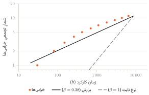
ایده. \(\beta_\text{g} = 0.38\) یعنی خرابیها از هم دورتر میشوند. ناوگان دارد جا میافتد. اگر \(\beta_\text{g}\) نزدیکِ ۱ بود، نرخ ثابت بود. اگر بیش از ۱ بود، ناوگان بدتر میشد. همین شیب یک نیروگاهِ جوانِ در حالِ جاافتادن را از نیروگاهی که رو به خرابی است جدا میکند. فصلهای ۴۸ و ۵۰ از همین شیب برای پایانِ دورهٔ ضمانت و پذیرش استفاده میکنند (فصل 48، فصل 50).
37.6.10 مقایسهپذیریِ ناوگانها
two plants' reported availability (synthetic)
plant reported % definition
Plant P 97.9 time, grid and curtailment excluded
Plant Q 98.8 time, all planned work excluded too
Plant Q looks better because it excludes more; on Plant
P's definition it would be about 98.1 % (its planned work
is 60 h a turbine a year): comparisons need one
definition, recomputed from the events, not two reportsایده. نیروگاهِ Q بهتر به نظر میرسد، چون بیشتر استثنا میکند. مقایسهٔ دو گزارش هیچچیز نمیگوید. مقایسه یک تعریف میخواهد که روی رویدادهای هر دو نیروگاه از نو حساب شود. همین قاعده برای مقایسه با «میانگینِ صنعت» هم برقرار است. عددی که تعریفش معلوم نیست مبنای خوبی برای قرارداد یا خرید نیست.
37.6.11 کیفیتِ داده و عدمِ قطعیت
ایده. دادههای قابلیتِ اطمینان خطاهای خودشان را دارند. سابقهای بیزمانِ پایان. خرابیای که دو بار ثبت شده. کدِ «سایر» برای نیمی از خرابیها. ساعتِ کارکردی که از یک شمارندهٔ اشتباه خوانده شده. بخشِ ج اثرِ این خطاها را با عدد نشان میدهد. سه وارسیِ ساده بیشترِ آنها را میگیرند: هر رویداد آغاز و پایان دارد، هیچ دو رویدادی از یک واحد همپوشان نیستند، و سهمِ کدِ «سایر» زیرِ یک آستانه است.
عدمِ قطعیت هم دو منبع دارد: شمارِ کمِ خرابیها، که بازهٔ معادلهٔ 37.8 آن را نشان میدهد، و خطای خودِ داده، که بازه آن را نمیبیند. اولی با گذشتِ زمان کم میشود. دومی فقط با انضباطِ ثبت.
37.6.12 بازخورد: از کجا میآید و به کجا میرود
where reliability data comes from and where it goes
source data feeds
factory test burn-in failures by part input to spares, ch 48
commissioning punch list, early trips input to growth, ch 50
warranty claims and their root causes maker's fixes, ch 39
maintenance failures coded to the hierarchy plans, ch 51
manufacturing is not part of this chapter; its failure
and quality data are inputs here, and each loop ends in a
change somebody ownsایده. دادهٔ قابلیتِ اطمینان از چهار جا میآید: آزمونِ کارخانه، راهاندازی، ادعاهای ضمانت و نگهداری. به چهار جا هم میرود: قطعههای یدکی، پذیرش، تعمیرهای سازنده و برنامهٔ نگهداری. هر حلقه در تغییری پایان مییابد که مالکی دارد. اگر دادهای به هیچ تصمیمی نرسد، گردآوریاش هزینهٔ بیحاصل است.
- قابلیتِ اطمینان، دسترسپذیری، نگهداشتپذیری، عملکرد و دسترسپذیریِ داده را هر کدام در یک جمله تعریف کنید.
- چرا دستهٔ «نامعلوم» باید در گزارش شمرده شود؟
- یک توقف: قطع ۰۸:۰۰، رسیدن ۱۱:۰۰، پایانِ تعمیر ۱۲:۳۰، بازگشت ۱۳:۰۰. زمانِ ازکارافتادگی و زمانِ تعمیر؟
- سرویسِ ۲۴ ساعته ۳۰ ساعت طول کشید. چند ساعت اجباری است؟
- چرا کدِ خرابی از فهرستِ بسته انتخاب میشود؟
- نرخِ خرابیِ ۳ خرابی در ۵۰٬۰۰۰ ساعت چقدر است؟ چرا بازه میخواهد؟
- چرا ساعتِ کارکرد برای مبدل زمانِ در معرضِ بهتری است؟
- شش واحد در ۱۰٬۰۰۰ ساعت هنوز سالماند و دو تا در ۲٬۰۰۰ و ۶٬۰۰۰ ساعت خراب شدهاند. MTBF سانسورشده؟
- \(k = 0.7\) در برازشِ وایبول چه میگوید؟
- شیبِ کرو-امسای ۱٫۳ چه میگوید؟
- چرا دو گزارشِ دسترسپذیری را نمیشود مستقیم مقایسه کرد؟
- دو منبعِ عدمِ قطعیت در نرخِ خرابی کداماند؟
پاسخها: (۱) احتمالِ کارِ بیخرابی، سهمِ زمانِ آماده، آسانیِ برگرداندن، کیفیتِ کار هنگامِ کار، سهمِ زمانِ دارای داده؛ (۲) وگرنه شکافِ داده ساعتهای بد را پنهان میکند؛ (۳) ۵ ساعت و ۱٫۵ ساعت؛ (۴) ۶؛ (۵) تا شمرده شود؛ (۶) \(6 \times 10^{-5}\) در ساعت؛ با سه خرابی خطای بزرگی دارد؛ (۷) مبدلِ خاموش خراب نمیشود؛ (۸) ۳۴٬۰۰۰ ساعت؛ (۹) خرابیهای زودرس؛ (۱۰) ناوگان بدتر میشود؛ (۱۱) استثناهایشان فرق دارد؛ (۱۲) شمارِ کمِ خرابیها و خطای داده.
37.7 ج. آزمایشگاهِ قابلیتِ اطمینان: یک سال سابقهٔ رویداد
این آزمایشگاه همان است که ارزیابیِ فصل میخواهد: دسترسپذیری و زمانِ ازکارافتادگیِ دوازده توربین از یک سابقهٔ ساختگیِ رویدادها حساب میشود. سابقه چند عیبِ کاشتهشده دارد. سپس معلوم میشود هر عیب نتیجه را به کدام سو میبرد، و حساسیتِ نتیجه به مرزِ رویداد، به دادههای گمشده، به زمانِ تعمیر و به ازکارافتادگیِ یک سامانهٔ مشترک سنجیده میشود.
پرونده: companion/ch37/lab_e.py
سابقهٔ رویدادها برای هر توربین با فاصلههای تصادفیِ میانِ ازکارافتادگیها ساخته شده است (A-412). هر ازکارافتادگی سه زمان دارد: آغاز، پایانِ تعمیر، و بازگشت به کار. «حقیقت» معلوم است، چون داده ساختگی است. در نیروگاهِ واقعی حقیقت معلوم نیست. همین است که انضباطِ ثبت را لازم میکند.
37.7.1 گامِ ۱: ادغام، حذفِ تکراریها، بریدن به پنجره
ایده. پیش از هر شمارش، سابقه پالایش میشود. رویدادها مرتب میشوند. تکراریهای دقیق حذف میشوند. رویدادهای همپوشانِ یک توربین ادغام میشوند. هر رویداد به پنجرهٔ گزارش بریده میشود:
def merge_events(events, start: float, end: float):
"""Events (t0, t1) in hours: drop exact duplicates and those without an
end, merge overlaps, clip to [start, end]. Returns merged intervals."""
clean = sorted({(a, b) for a, b in events
if a is not None and b is not None and b > a})
out = []
for a, b in clean:
a, b = max(a, start), min(b, end)
if b <= a:
continue
if out and a <= out[-1][1]:
out[-1] = (out[-1][0], max(out[-1][1], b))
else:
out.append((a, b))
return out
def event_hours(events, start: float, end: float) -> float:
return sum(b - a for a, b in merge_events(events, start, end))ایده. شاخصها با همین تابعها ساخته میشوند. ستونِ پایان یک ورودی است: ۳ یعنی بازگشت به کار، ۲ یعنی پایانِ تعمیر. پس هر دو تعریفِ ازکارافتادگی با یک کد سنجیده میشوند:
def metrics(log, end_col: int):
by_t = {t: [] for t in range(12)}
for row in log:
by_t[row[0]].append((row[1], row[end_col]))
down = {t: pf.event_hours(v, 0, YEAR) for t, v in by_t.items()}
n = sum(len(pf.merge_events(v, 0, YEAR)) for v in by_t.values())
a = 1 - sum(down.values()) / (12 * YEAR)
return a, n, sum(down.values()) / max(n, 1)37.7.2 گامِ ۲: خام، پالایششده، حقیقت
12 turbines, one year of outage records (synthetic, planted defects)
records: 75 (5 more than the true 70 outages)
defects planted: 4 duplicates, 1 outage logged twice with
different times, 3 records without an end time
metric raw sum cleaned true
fleet time availability 98.36 98.48 98.41
outages counted 75 67 70
mean downtime per outage, h 23.0 23.9 23.9
duplicates add downtime that never happened; records
without an end vanish from a plain sum and hide their
downtime; cleaning (sort, drop duplicates, merge, clip)
removes the first error, but only the maintenance record
can give back the missing end times - the cleaned result
is still optimistic by those three outages
if 'outage' ends at repair instead of restart:
availability 98.44 %, mean 23.4 h
- the definition alone moves the result as much as the
defects doمثال 37.27 (سابقهای که دو طرف را گول میزند (مثالِ کارشده)) پرسش. سابقه ۷۵ ردیف دارد ولی ۷۰ ازکارافتادگیِ واقعی. چهار ردیف تکراریِ دقیقاند. یک ازکارافتادگی دو بار با زمانهای کمی متفاوت ثبت شده است. سه ردیف زمانِ پایان ندارند. دسترسپذیریِ ناوگان و میانگینِ زمانِ ازکارافتادگی را با جمعِ خام، پس از پالایش، و با حقیقت مقایسه کنید. (سابقهٔ ساختگی، A-412.)
پاسخ. جمعِ خام: ۹۸٫۳۶٪ با ۷۵ رویداد و میانگینِ ۲۳٫۰ ساعت. پالایششده: ۹۸٫۴۸٪ با ۶۷ رویداد و میانگینِ ۲۳٫۹ ساعت. حقیقت: ۹۸٫۴۱٪ با ۷۰ رویداد و میانگینِ ۲۳٫۹ ساعت.
تفسیر. دو خطا در دو جهت کار میکنند. تکراریها ازکارافتادگیای میافزایند که رخ نداده است. جمعِ خام از این رو بدبین است. سه ردیفِ بیپایان از جمعِ ساده میافتند و ازکارافتادگیشان پنهان میشود. پالایش اولی را برطرف میکند، اما دومی را نمیتواند. فقط سابقهٔ نگهداری، یعنی دستورِ کار با زمانِ بستن، زمانهای گمشده را برمیگرداند. نتیجهٔ پالایششده هنوز به اندازهٔ همان سه ازکارافتادگی خوشبین است. اگر یک طرفِ قرارداد سابقهٔ خام را بیاورد و طرفِ دیگر سابقهٔ پالایششده را، هر دو اشتباه میکنند و در دو جهتِ مخالف. وارسی: \(75 - 4 - 1 - 3 = 67\) و \(67 + 3 = 70\).
37.7.3 گامِ ۳: یک تعریف، دو نتیجه
ایده. آخرِ خروجیِ گامِ ۲ یک عددِ دیگر هم دارد: اگر «ازکارافتادگی» در پایانِ تعمیر تمام شود، نه در بازگشت به کار، دسترسپذیری ۹۸٫۴۴٪ و میانگین ۲۳٫۴ ساعت است. فرقِ تعریف (۰٫۰۳ واحدِ درصد) هماندازهٔ فرقِ عیبها (۰٫۰۵ و ۰٫۰۷) است. پس پیش از پالایشِ داده، تعریف نوشته میشود. تعریفی که پس از دیدنِ نتیجه انتخاب شود، تحلیل نیست.
37.7.5 گامِ ۵: انتظار یا تعمیر؟
what drives the downtime: waiting or repairing (12 turbines)
of all outage hours: waiting 1,230 h, repair 409 h, checks 35 h
case availability mean h
as logged 98.41 23.9
waiting halved 98.99 15.1
repair halved 98.60 21.0
both halved 99.19 12.2
waiting (travel, spares, access) is most of each outage,
so halving it gains more than halving the repair: the
record must keep the two apart to show where the cure is
(lesson D, boundaries)مثال 37.29 (نصفِ انتظار بیش از نصفِ تعمیر میارزد) پرسش. از همهٔ ساعتهای ازکارافتادگی، ۱٬۲۳۰ ساعت انتظار و ۴۰۹ ساعت تعمیر است. نصف کردنِ کدام دسترسپذیری را بیشتر بالا میبرد؟
پاسخ. نصف کردنِ انتظار: ۹۸٫۹۹٪. نصف کردنِ تعمیر: ۹۸٫۶۰٪. هر دو: ۹۹٫۱۹٪.
تفسیر. انتظار، یعنی سفر و قطعه و دسترسی، بیشترِ هر ازکارافتادگی است. پس کوتاه کردنش بیش از تعمیرِ سریعتر میارزد. یک تکنسینِ مقیم، یک انبارِ قطعه در ساختگاه، و یک راهِ دسترسیِ همهفصل همه انتظار را کم میکنند (فصل 31، فصل 51). این نتیجه فقط وقتی دیده میشود که سابقه انتظار و تعمیر را جدا ثبت کند. سابقهای که فقط «زمانِ ازکارافتادگی» دارد، چاره را نشان نمیدهد. وارسی: \(615/(12 \times 8\,760) = 0.585\,\%\)، همان فرقِ ۹۸٫۴۱ و ۹۸٫۹۹.
37.7.6 آنچه آزمایشگاه نشان داد
نتیجهٔ دسترسپذیری به چهار چیز حساس است و هر کدام قاعدهای میخواهد که پیش از تحلیل نوشته شود:
- مرزِ رویداد: پایانِ تعمیر یا بازگشت به کار؟ قاعده: بازگشت به کار، با بررسیِ راهاندازی جدا.
- دادههای گمشده: سابقهٔ بیپایان. قاعده: هر رویداد بیپایان با دستورِ کار تکمیل میشود. تا آن زمان در دستهٔ «نامعلوم» شمرده و گزارش میشود.
- تکراریها و همپوشانیها: قاعده: یک رویداد، یک شناسه (بخش 35.3.10). ادغام پیش از شمارش.
- سامانههای مشترک: قاعده: رویداد روی سامانهٔ علت ثبت میشود. واحدهای پاییندست به آن ارجاع میدهند.
- چهار گامِ پالایشِ سابقهٔ رویدادها را به ترتیب بنویسید.
- چرا تکراریها جمعِ خام را بدبین میکنند؟
- چرا ردیفهای بیپایان سابقهٔ پالایششده را خوشبین میکنند؟
- کدام سند زمانِ پایانِ گمشده را برمیگرداند؟
- سابقه ۹۰ ردیف دارد: ۵ تکراری، ۲ ثبتِ دوباره و ۴ بیپایان. پس از پالایش چند رویداد شمرده میشود و چند رویدادِ واقعی هست؟
- قطعیِ ۶ ساعتهٔ پست با ۱۲ توربین در یک سال. دسترسپذیریِ توربینها چقدر پایین میآید اگر روی هر توربین ثبت شود؟
- چرا رویدادِ پست روی پست ثبت میشود؟
- چرا کوتاه کردنِ انتظار بیش از تعمیرِ سریعتر میارزد؟
- تعریفِ رویداد را کِی باید نوشت؟
پاسخها: (۱) مرتب کردن، حذفِ تکراری، ادغامِ همپوشان، بریدن به پنجره؛ (۲) ازکارافتادگیِ رخنداده میافزایند؛ (۳) ازکارافتادگیشان پنهان میشود؛ (۴) دستورِ کار؛ (۵) ۷۹ شمرده میشود، ۸۳ واقعی است؛ (۶) \(6/8\,760 = 0.068\) واحدِ درصد؛ (۷) تا نرخِ خرابیِ توربینها را نیفزاید؛ (۸) انتظار بزرگترین بخشِ ازکارافتادگی است؛ (۹) پیش از دیدنِ داده.
37.7.7 دسترسپذیریِ انرژیاییِ مزرعهٔ بادی از سابقهٔ رویدادها
ایده. سابقهٔ رویدادهای آزمایشگاه با بادِ ساعتیِ سالِ کارکرد کنارِ هم گذاشته میشود. برای هر ساعتی که یک توربین از کار افتاده بود، انرژیِ مورد انتظارِ همان توربین در همان ساعت از دست رفته است. ساعتهای ناقص به نسبتِ کسرشان شمرده میشوند:
the wind farm's outages of lab E against the hourly wind of the year
downtime 1,674 turbine-hours; energy lost 3,027 MWh of 193,136
time-based availability 98.41 %
production-based availability 98.43 %
mean output of a turbine in its down hours 1.81 MW, against 1.84 MW
over the year
the down hours were about as windy as the year, so the two
agree within 0.02 points; lesson A's March stop shows
how far they part when an outage meets a windy spell. A
team that plans its work in calm spells raises the
production-based figure and leaves the time-based one
unchangedایده. اینجا دو عدد تقریباً یکیاند: ۹۸٫۴۱٪ زمانی و ۹۸٫۴۳٪ انرژیایی. ازکارافتادگیهای ساختگی در زمانهای تصادفی رخ دادهاند و بادِ آن ساعتها نزدیکِ میانگینِ سال بوده است. در نیروگاهِ واقعی چنین نیست. خرابیها با باد بیشتر میشوند، چون بارها بیشترند، و تعمیر در بادِ شدید ممنوع است، پس انتظار طولانیتر میشود. هر دو، دسترسپذیریِ انرژیایی را از زمانی پایینتر میبرند. برعکس، تیمی که کارِ برنامهریزیشدهاش را در دورههای آرام انجام دهد، دسترسپذیریِ انرژیایی را بالا میبرد. مثالِ مثال 37.2 نشان داد این دو چقدر میتوانند از هم دور شوند.
37.7.8 ضمانت و شانس
ایده. ناوگان و فرایندِ خرابی ثابتاند. فقط شانس از سالی به سالِ دیگر تغییر میکند. سابقهٔ رویدادهای آزمایشگاه با ۴۰۰ بذرِ تصادفی دوباره ساخته میشود:
the same fleet and the same failure process, 400 simulated years
fleet availability: mean 98.56 %, 5th percentile 98.26 %
years below a 98.5 % guarantee: 37.2 %
years below a 98.3 % guarantee: 7.2 %
years below a 98.0 % guarantee: 0.0 %
nothing changed from year to year except chance: a
guarantee set near the mean is missed in many years by a
fleet doing nothing wrong. The guarantee level, its
measurement period and any averaging over years are a
commercial choice made with this spread in view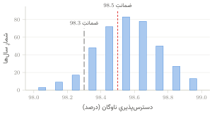
مثال 37.30 (ناوگانی که بیتقصیر جریمه میشود) پرسش. پیمانکارِ نگهداری دسترسپذیریِ ۹۸٫۵٪ را ضمانت میکند. میانگینِ ناوگان ۹۸٫۵۶٪ است. در چند درصد سالها ضمانت شکسته میشود؟ با ضمانتِ ۹۸٫۳٪ چه؟
پاسخ. با ۹۸٫۵٪، در ۳۷٫۲٪ سالها. با ۹۸٫۳٪، در ۷٫۲٪. با ۹۸٫۰٪، در هیچکدام از ۴۰۰ سال.
تفسیر. ضمانتی نزدیکِ میانگین از هر سه سال تقریباً یک بار شکسته میشود، بیآنکه کسی کاری اشتباه کرده باشد. پیمانکار این ریسک را در قیمتش میگذارد، و مالک آن را میپردازد. سه چیز ریسک را کم میکند: ضمانت پایینتر از میانگین، با فاصلهای که از پراکندگی میآید؛ دورهٔ سنجشِ طولانیتر، مثلاً میانگینِ دوساله؛ و جریمهٔ تدریجی بهجای پلّهای. اینها انتخابهای تجاریاند و در قرارداد گرفته میشوند (فصل 21). تحلیلگر فقط پراکندگی را جلوی چشمِ تصمیمگیرنده میگذارد. وارسی: صدک پنجم ۹۸٫۲۶٪ است. پس ۵٪ سالها زیرِ ۹۸٫۲۶ و کمتر از ۷٫۲٪ زیرِ ۹۸٫۳ میافتند، و این با جدول جور است.
- انرژیِ ازدسترفتهٔ یک توربین در ساعتی که نیمه از کار افتاده بود چگونه شمرده میشود؟
- چرا در نیروگاهِ واقعی دسترسپذیریِ انرژیایی معمولاً از زمانی پایینتر است؟
- میانگینِ دسترسپذیری ۹۸٫۶٪ و صدکِ پنجم ۹۸٫۳٪ است. ضمانتِ ۹۸٫۳٪ در چند درصد سالها شکسته میشود؟
- سه راهِ کم کردنِ ریسکِ شانس در ضمانت را بگویید.
پاسخها: (۱) انرژیِ مورد انتظار ضربدر کسرِ ساعت؛ (۲) خرابی و انتظار در باد بیشترند؛ (۳) حدودِ ۵٪؛ (۴) ضمانتِ پایینتر از میانگین، دورهٔ طولانیتر، جریمهٔ تدریجی.
37.8 چ. پایشِ پیشبینیها
فصلِ ۱۵ پیشبینیها را ساخت و امتیازهایشان را تعریف کرد: سوگیری، میانگینِ قدرِمطلقِ خطا (MAE)، خطای جذرِ میانگینِ مربعات (RMSE)، مهارت در برابرِ ماندگاری، و امتیازهای احتمالاتی (بخش 15.6). آن فصل پیشبینی را برای طراحی ارزیابی کرد. این بخش آن را در بهرهبرداری پایش میکند: امتیاز به تفکیکِ افق و فناوری، روی دادهای که پیشبینی هرگز ندیده، با شکافها و رانشها و رمپهایش. یک پرسش هم همیشه کنار میماند: امتیازِ خوب با پولِ خوب یکی نیست.
پروندهها: companion/ch37/lab_g.py و companion/ch37/examples_g.py
37.8.1 امتیاز به تفکیکِ افق، روی دادهٔ کنارگذاشته
ایده. پیشبینیِ یک ساعت بعد و پیشبینیِ دو روز بعد دو کارِ متفاوتاند. هر کدام جدا امتیاز میگیرد. مرجعِ هر افق ماندگاری است: «فردا مثلِ امروز». مهارت نسبتِ بهبود در برابرِ آن مرجع است:
\[ \text{SS} = 1 - \frac{\text{RMSE}}{\text{RMSE}_\text{ref}} \tag{37.12}\]
امتیاز روی نیمِ دومِ سال گرفته میشود. پیشبینی، و هر تصحیحی روی آن، فقط نیمِ اول را دیده است:
plant output forecasts scored on the held-out half year (MW)
horizon h bias MAE RMSE persistence RMSE skill
1 0.51 6.92 8.84 8.77 -0.01
6 0.63 9.35 12.04 26.41 0.54
24 0.16 11.14 14.41 24.75 0.42
48 1.83 14.13 18.34 28.51 0.36
at one hour persistence is hard to beat (skill -0.01); from six
hours the forecast wins clearly (+0.54). At 24 h persistence
repeats yesterday's sun - a strong reference for PV - so the
skill dips; the score is read by horizon and by use: a
day-ahead bid needs the 24 h line, a ramp warning the 1 h
one (ch 15 built these scores; here they run on operation)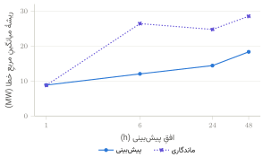
مثال 37.31 (مهارت به افق بسته است) پرسش. RMSE پیشبینیِ ۲۴ ساعته ۱۴٫۴۱ مگاوات و RMSE ماندگاری ۲۴٫۷۵ مگاوات است. مهارت را حساب کنید. چرا مهارتِ افقِ ۶ ساعته بیشتر است؟ (پیشبینیِ ساختگی، A-414.)
پاسخ. \(\text{SS} = 1 - 14.41/24.75 = 0.42\). در افقِ ۶ ساعته ۰٫۵۴ و در افقِ یکساعته ۰٫۰۱- است.
تفسیر. در یک ساعت «تغییری نیست» تقریباً درست است و شکست دادنش سخت است. در ۶ ساعت ماندگاری آفتابِ ظهر را برای غروب پیشبینی میکند و بد میبازد. در ۲۴ ساعت ماندگاری آفتابِ دیروزِ همان ساعت را تکرار میکند. برای بخشِ خورشیدی این مرجعِ قویای است، پس مهارت کمی پایین میآید. امتیاز برای کاربردش خوانده میشود: پیشنهادِ روزِ بعد ردیفِ ۲۴ ساعته را میخواهد، هشدارِ رمپ ردیفِ یکساعته را. وارسی: \(14.41/24.75 = 0.582\).
37.8.2 دامِ امتیاز روی دادهٔ آموزش
ایده. «تصحیحی» که با دادههای گذشته برازش شده، روی همان دادهها همیشه بهتر به نظر میرسد. پرسشِ درست این است که روی دادهای که ندیده چه میکند:
a 24 h forecast 'corrected' by 288 fitted numbers (month x hour);
fitted on the even weeks, tested on the odd weeks (RMSE, MW)
forecast fitted weeks held-out weeks
uncorrected 15.17 15.74
corrected (288 numbers) 14.67 16.14
on the weeks it was fitted to, the correction removes
error; on weeks it has not seen it adds some back - it
learned the noise of its own weeks. Scores are only ever
taken on held-out dataمثال 37.32 (۲۸۸ عدد که نوفه را یاد گرفتند) پرسش. یک تصحیحِ ماهبهساعت (۱۲ × ۲۴ = ۲۸۸ عدد) روی هفتههای زوج برازش و روی هفتههای فرد آزموده شده است. نتیجه را بخوانید.
پاسخ. روی هفتههای برازش، RMSE از ۱۵٫۱۷ به ۱۴٫۶۷ پایین آمد. روی هفتههای کنارگذاشته، از ۱۵٫۷۴ به ۱۶٫۱۴ بالا رفت.
تفسیر. پیشبینیِ اولیه سوگیریِ ساختاری نداشت. هر چه تصحیح یاد گرفت، نوفهٔ هفتههای خودش بود. همان نوفه روی هفتههای دیگر خطا میافزاید. این بیشبرازش است (بخش 15.6.6). قاعده ساده است: امتیاز فقط روی دادهٔ کنارگذاشته گرفته میشود. دادههای کنارگذاشته هم از نظرِ زمان جدا هستند. هفتههای پیاپی بخشی از هوای هم را دارند. پس «هر ساعتِ سوم» برای کنار گذاشتن کافی نیست. وارسی: \(16.14 > 15.74\).
37.8.3 خطا به تفکیکِ فناوری و ساعتهای شمردهشده
day-ahead errors by technology (synthetic, % of capacity)
series hours MAE % RMSE %
PV, all 8,760 hours 8760 3.0 5.4
PV, daylight hours only 4256 6.2 7.7
wind, all hours 8760 7.8 10.3
the night hours, where a PV forecast of zero is always
right, nearly halve PV's average error: a score states
which hours it covers. Wind and PV are scored apart,
each against its own capacity - a plant total hides
which forecast needs workایده. پیشبینیِ خورشیدی در شب صفر است و همیشه درست. اگر ساعتهای شب شمرده شوند، MAE خورشیدی تقریباً نصف میشود. این بهتر شدن نیست. فقط شمارشِ ساعتهایی است که چیزی برای پیشبینی ندارند. امتیاز میگوید روی کدام ساعتها گرفته شده است. باد و خورشید هم جدا امتیاز میگیرند، هر کدام بر ظرفیتِ خودش. امتیازِ جمعِ نیروگاه پنهان میکند کدام پیشبینی کار لازم دارد. فصلِ ۱۵ همین تفکیک را برای طراحی گذاشت (بخش 15.6.4).
37.8.4 رمپها بهعنوانِ رویداد
ایده. رمپ (بخش 15.6.7) تغییرِ بزرگِ توان در زمانِ کوتاه است. RMSE ساعتی چیزی دربارهٔ رمپها نمیگوید. رمپها بهعنوانِ رویداد امتیاز میگیرند: رمپی که رخ داد و پیشبینی شد (برخورد)، رخ داد و پیشبینی نشد (از دست رفته)، و پیشبینی شد و رخ نداد (هشدارِ نادرست). احتمالِ آشکارسازی (POD) و نسبتِ هشدارِ نادرست (FAR) از این شمارش ساخته میشوند:
\[ \text{POD} = \frac{\text{برخورد}}{\text{برخورد} + \text{از دست رفته}}, \qquad \text{FAR} = \frac{\text{نادرست}}{\text{برخورد} + \text{نادرست}} \tag{37.13}\]
ramp events of the plant output: change above 15 MW
within one hour (same hour, same sign):
observed ramps 860, forecast hits 640, misses 220, false alarms 398
probability of detection 0.74, false-alarm ratio 0.38
the same ramps, a forecast ramp up to 1 h early or late
allowed: caught 695 of 860 (81 %)
an hourly RMSE says nothing about ramps; ramps are scored
as events, and the timing tolerance is part of the
definition - the same forecast looks poor or useful
depending on itمثال 37.33 (یک ساعت زودتر هم قبول است؟) پرسش. با تعریفِ «همان ساعت»، POD و FAR را از شمارشها حساب کنید. اگر رمپِ پیشبینیشده تا یک ساعت زودتر یا دیرتر هم برخورد شمرده شود، چه میشود؟
پاسخ. \(\text{POD} = 640/860 = 0.74\) و \(\text{FAR} = 398/(640 + 398) = 0.38\). با مدارای یکساعته، ۶۹۵ رمپ از ۸۶۰ گرفته میشود (۸۱٪).
تفسیر. مدارای زمانی بخشی از تعریف است، نه جزئیات. یک پیشبینی با یک تعریف ضعیف و با دیگری سودمند به نظر میرسد. مدارا از کاربرد میآید. اگر رمپِ پیشبینیشده برای آماده کردنِ انبارش است، یک ساعت زودتر هنوز سودمند است. اگر برای تنظیمِ دقیقِ یک پیشنهاد است، شاید نه. تعریف پیش از امتیازگیری نوشته میشود. وارسی: \(640 + 220 = 860\).
37.8.5 شکاف در خوراکِ پیشبینی
a forecast feed that fails in 4 % of hours - the stormy ones
RMSE on the hours it arrived: 6.64 MW
RMSE of what the desk actually used (gaps filled
with yesterday's value): 8.69 MW
the provider's score leaves out the hours it missed, and
they are the hard ones; the plant scores the chain it
operated, with the fallback, and reports the feed's
completeness beside the scoreمثال 37.34 (امتیازِ تأمینکننده و امتیازِ زنجیره) پرسش. خوراکِ پیشبینی در ۴٪ ساعتها نرسید، همه در طوفانیترین ساعتها. RMSE تأمینکننده روی ساعتهایی که رسید ۶٫۶۴ مگاوات است. RMSE آنچه میزِ بهرهبرداری واقعاً به کار برد، با جایگزینِ «مقدارِ دیروز» در شکافها، ۸٫۶۹ مگاوات است. کدام را باید گزارش کرد؟
پاسخ. هر دو، همراه با کامل بودنِ خوراک (۹۶٪).
تفسیر. امتیازِ تأمینکننده ساعتهایی را که نرسید بیرون میگذارد، و آن ساعتها سختترین ساعتها هستند. اگر خوراک در ساعتهای تصادفی نرسیده بود، این مهم نبود. اینجا خوراک دقیقاً وقتی نرسید که بیشتر لازم بود. نیروگاه زنجیرهای را که با آن کار کرد، با جایگزینش، امتیاز میدهد. قراردادِ تأمینکننده هم کامل بودن را جدا میسنجد. وارسی: \(0.04 \times 8\,760 = 350\) ساعت.
37.8.6 کالیبره بودنِ بازهٔ پیشبینی
a 90 % interval around the 24 h forecast, built on the first half
interval: forecast -30.3 to +24.2 MW
share of held-out hours inside it: 93.2 %
an interval that holds about 90 % of new hours is
calibrated; one that holds 70 % promises a certainty the
forecast does not have - and a dispatch or bid built on
it carries that hidden riskایده. بازهٔ ۹۰ درصدی باید حدودِ ۹۰٪ ساعتهای تازه را در بر بگیرد. این پوشش (بخش 15.6.11) است. بازهای که ۹۲٫۴٪ را در بر میگیرد کمی محتاط است ولی کالیبره است. بازهای که فقط ۷۰٪ را در بر بگیرد، اطمینانی را وعده میدهد که پیشبینی ندارد. پیشنهاد یا ذخیرهای که بر آن ساخته شود، ریسکی پنهان دارد. پوشش هم مثلِ هر امتیازِ دیگر روی دادهٔ کنارگذاشته سنجیده میشود. اینجا بازه از باقیماندههای نیمِ اول ساخته و روی نیمِ دوم آزموده شده است.
37.8.7 رانش پس از تغییرِ نیروگاه
day-ahead forecast bias by month; two turbines added on day 250
month bias MW
Jan 2.59
Feb 1.93
Mar 1.76
Apr 2.00
May 0.77
Jun 0.79
Jul 0.92
Aug 1.62
Sep -2.60
Oct -1.89
Nov -0.16
Dec -4.66
CUSUM on the daily bias (k 1.0, h 5): alarm on day 258,
8 days after the change
a looser setting (k 0.5) alarmed on day 205, when nothing had
changed - the setting trades early warning for false alarms
the plant now makes more than the forecast expects: the
bias turns negative from September, by about the output of
two turbines, and nearly vanishes in calm November; a
forecast is re-checked after every change to the plant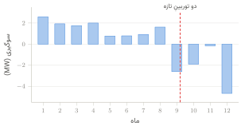
مثال 37.35 (دو توربینی که پیشبینی نمیشناخت) پرسش. از روزِ ۲۵۰ دو توربینِ تازه به ناوگان افزوده شدهاند. مدلِ پیشبینی بهروز نشده است. سوگیری چه میکند؟ مجموعِ تجمعی روی سوگیریِ روزانه کِی هشدار میدهد؟ تنظیمِ گشادتر چه میکند؟
پاسخ. سوگیری تا اوت مثبت و کوچک است (۰٫۸ تا ۲٫۶ مگاوات). از سپتامبر منفی میشود و تا دسامبر به ۴٫۶۶- میرسد. با \(\kappa = 1.0\) و \(h_\text{s} = 5\)، هشدار در روزِ ۲۵۸ است، هشت روز پس از تغییر. تنظیمِ گشادترِ \(\kappa = 0.5\) در روزِ ۲۰۵ هشدار داد، وقتی هنوز چیزی تغییر نکرده بود.
تفسیر. نیروگاه حالا بیش از انتظارِ پیشبینی تولید میکند. سوگیری به اندازهٔ تولیدِ دو توربین منفی میشود و در نوامبرِ آرام تقریباً ناپدید میشود: وقتی باد نیست، توربینِ اضافه هم چیزی نمیافزاید. تنظیمِ آشکارساز میانِ هشدارِ زود و هشدارِ نادرست معامله میکند (بخش 37.3.3). بهتر از هر آشکارسازی، یک قاعدهٔ ساده است: هر تغییرِ نیروگاه، مالکِ پیشبینی را خبر میکند و پیشبینی پس از آن دوباره وارسی میشود. وارسی: \(2/12 \times 22 = 3.7\,\text{MW}\) سوگیریِ مورد انتظار با بادِ میانگینِ ۲۲ مگاواتیِ ناوگان.
37.8.8 مهارت با پول یکی نیست
two day-ahead forecasts used to sell the plant's output
imbalance price (teaching): short 30 u/MWh, long 10 u/MWh
forecast RMSE MW bias MW imbalance cost k u/yr
A 8.56 3.01 1,464
B 10.76 -3.85 1,158
A has the lower RMSE; B is the cheaper one to sell with:
with short positions costing three times long ones, a
forecast that leans low sells less than the plant
delivers and pays the cheap price. Skill and money are
different measures; the plant reports both and never
calls either a guarantee of what dispatch or delivery
will beمثال 37.36 (پیشبینیِ بدتر، فروشِ ارزانتر) پرسش. پیشبینیِ الف RMSE ۸٫۵۶ و سوگیریِ ۳٫۰۱+ مگاوات دارد. پیشبینیِ ب RMSE ۱۰٫۷۶ و سوگیریِ ۳٫۸۵- دارد. انحرافِ کمبود ۳۰ و انحرافِ مازاد ۱۰ واحد بر مگاواتساعت هزینه دارد (قیمتهای آموزشی، A-415). کدام پیشبینی برای فروش ارزانتر است؟
پاسخ. الف ۱٬۴۶۴ هزار واحد در سال و ب ۱٬۱۵۸ هزار واحد.
تفسیر. الف امتیازِ بهتری دارد و ب پولِ کمتری هزینه میکند. وقتی کمبود سه برابرِ مازاد هزینه دارد، پیشبینیای که کمی پایین بخواند کمتر از تحویلِ واقعی میفروشد و قیمتِ ارزان را میپردازد. فصلِ ۱۵ همین را با پیشنهادِ نیوزوندر نشان داد: بهترین پیشنهاد یک چندک است، نه میانگین (بخش 15.8). مهارت و پول دو سنجهٔ جدا هستند. نیروگاه هر دو را گزارش میکند. هیچکدام هم تضمینِ آنچه توزیع یا تحویل خواهد شد نیست: تحویل به کاهشِ تولید، به خرابیها و به فرمانهای شبکه هم بسته است. وارسی: فرقِ دو هزینه ۳۰۶ هزار واحد به سودِ ب است.
پیشبینیای با مهارتِ ۰٫۴۲ هیچ ساعتِ مشخصی را تضمین نمیکند. برنامهٔ توزیع یا پیشنهادِ بازار که بر آن ساخته میشود، ذخیره و انبارش و قاعدههای خودش را دارد (فصل 20). ادعای «پیشبینیِ ما خطای ۵٪ دارد» در قرارداد بیمعناست، مگر آنکه افق، ساعتها، ظرفیتِ مبنا، دادهٔ کنارگذاشته و کامل بودن کنارش نوشته شوند.
- RMSE ۱۸ و ماندگاری ۲۴. مهارت چقدر است؟
- چرا مهارتِ افقِ یکساعته نزدیکِ صفر است؟
- چرا تصحیحی که روی هفتههای زوج برازش شده روی هفتههای فرد بدتر میکند؟
- چرا «هر ساعتِ سوم» برای کنار گذاشتن کافی نیست؟
- MAE خورشیدی روی همهٔ ساعتها ۱٫۵ مگاوات است و ۴٬۲۵۶ ساعت روز است. MAE روی ساعتهای روز تقریباً چقدر است؟
- ۴۰ برخورد، ۱۰ از دست رفته و ۲۰ نادرست. POD و FAR؟
- چرا مدارای زمانیِ رمپ بخشی از تعریف است؟
- خوراک در ۵٪ ساعتهای تصادفی نرسیده است. آیا امتیازِ تأمینکننده گمراه میکند؟
- بازهٔ ۹۰ درصدی ۷۵٪ را در بر میگیرد. چه مشکلی دارد؟
- چرا سوگیری در نوامبر تقریباً ناپدید شد؟
- کمبود ۲۰ و مازاد ۲۰ واحد هزینه دارد. کدام پیشبینی ارزانتر است؟
- چرا مهارت تضمینِ تحویل نیست؟
پاسخها: (۱) ۰٫۲۵؛ (۲) در یک ساعت «تغییری نیست» تقریباً درست است؛ (۳) نوفهٔ هفتههای خودش را یاد گرفته؛ (۴) ساعتهای پیاپی هوای مشترک دارند؛ (۵) \(1.5 \times 8\,760/4\,256 \approx 3.1\)؛ (۶) ۰٫۸۰ و ۰٫۳۳؛ (۷) از کاربرد میآید و نتیجه را تغییر میدهد؛ (۸) کمتر، چون شکافها سختترین ساعتها نیستند؛ (۹) بیش از حد مطمئن است؛ (۱۰) بادِ کم، توربینِ اضافه چیزی نمیافزاید؛ (۱۱) آنکه خطای قدرِمطلقِ کمتری دارد؛ (۱۲) تحویل به کاهشِ تولید، خرابی و فرمانها هم بسته است.
37.9 ح. تحلیلِ عملکردِ خدمتهای شبکه
نیروگاهِ P اگر خدمتی به شبکه بفروشد، مثل پاسخِ فرکانس یا پیروی از نقطهٔ تنظیم، باید نشان دهد که آن را داده است. فصلِ ۲۰ کنترلگر و خدمتِ REQ-S01 را ساخت (فصل 20). فصلِ ۲۷ آزمونهای تأییدِ رفتارِ نیروگاه را گذاشت (بخش 27.5.5). این بخش کارِ روزمره را میسنجد: فرمانها با پاسخِ اندازهگیریشده آشتی داده میشوند. دسترسپذیریِ خدمت، بازیابی و انرژیِ تحویلی حساب میشوند. کیفیتِ دورسنجی و استثناها روشن میشوند. شاهدِ هر رویداد برای تسویه نگه داشته میشود و مرزهای انتساب نوشته میشوند.
همهٔ عددهای پذیرشِ این بخش جاینگهدار هستند (U-118). مشخصهٔ واقعیِ هر خدمت، یعنی زمانِ پاسخ، نوار، روشِ اندازهگیری، استثناها و جریمهها، را بهرهبردارِ شبکه یا قراردادِ خدمت تعیین میکند. هیچ عددی در اینجا الزامِ یک کشور یا یک بهرهبردار نیست. پایش فقط در برابرِ الزامِ تأییدشده معنا دارد.
پروندهها: companion/ch37/lab_g.py و companion/ch37/examples_h.py
37.9.1 یک پلّهٔ نقطهٔ تنظیم در برابرِ مشخصه
ایده. بهرهبردار نقطهٔ تنظیمِ توانِ نیروگاه را از ۶۰ به ۴۰ مگاوات پایین میآورد. پاسخِ اندازهگیریشده با سه سنجه داوری میشود: زمان تا رسیدن به ۹۰٪ تغییر، \(t_{90}\)؛ زمانی که پس از آن پاسخ در نوارِ \(\pm 2\,\text{MW}\) میماند، \(t_\text{s}\)؛ و خطای ردگیریِ ریشهٔ میانگینِ مربعات پس از نشستن، \(\epsilon_\text{rms}\). مشخصه پیش از آزمون نوشته میشود:
def tracking_error(demand, response):
"""RMS and largest absolute error of a response against its demand."""
e = np.asarray(response, float) - np.asarray(demand, float)
return float(np.sqrt(np.mean(e ** 2))), float(np.max(np.abs(e)))
def response_times(t, response, start: float, final: float, band: float):
"""After a step at t = 0 from start to final: time to reach 90 % of the
change and time after which the response stays within +/- band."""
t = np.asarray(t, float)
r = np.asarray(response, float)
target90 = start + 0.9 * (final - start)
up = final > start
hit = np.where(r >= target90)[0] if up else np.where(r <= target90)[0]
t90 = float(t[hit[0]]) if len(hit) else math.inf
outside = np.where(np.abs(r - final) > band)[0]
if not len(outside):
t_settle = 0.0
elif outside[-1] + 1 < len(t):
t_settle = float(t[outside[-1] + 1])
else:
t_settle = math.inf
return t90, t_settlea set-point step from 60 to 40 MW against a supplied specification
(placeholder specification U-118; synthetic trace)
measure result required pass?
time to 90 % of the step 8.5 s <= 10 s yes
settled within +/-2 MW 8.5 s <= 30 s yes
RMS error after settling 0.35 MW <= 1.5 MW yes
largest error after settling 1.77 MW
the specification is written down before the test, with
its tolerances and the telemetry it is judged on; the
trace, the specification and the result are kept
together as settlement evidence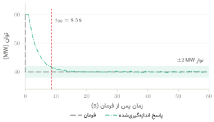
مثال 37.37 (پاسخی که از هر سه آزمون میگذرد) پرسش. پاسخِ یک پلّه با تأخیرِ یک ثانیه و ثابتِ زمانیِ سه ثانیه آمده است. \(t_{90}\) را با دست تخمین بزنید و با نتیجهٔ برنامه مقایسه کنید.
پاسخ. برای پاسخِ مرتبهٔ اول با تأخیر:
\[ t_{90} = t_\text{d} + \tau \ln 10 = 1 + 3 \times 2.30 = 7.9\,\text{s} \]
برنامه ۸٫۵ ثانیه میدهد. هر سه سنجه از مشخصه میگذرند: \(t_{90} \le 10\,\text{s}\)، \(t_\text{s} \le 30\,\text{s}\)، \(\epsilon_\text{rms} \le 1.5\,\text{MW}\).
تفسیر. فرقِ ۰٫۶ ثانیه از دو چیز میآید: نمونهبرداریِ نیمثانیهای و نوفهٔ اندازهگیری. اگر \(t_{90}\) نزدیکِ حدِ مشخصه بود، این ۰٫۶ ثانیه داوری را عوض میکرد. پس مشخصه نرخِ نمونهبرداری و دقتِ دورسنجی را هم میگوید (فصل 34). ردِ پاسخ، مشخصه و نتیجه با هم نگه داشته میشوند. این سه با هم شاهدِ تسویهاند. وارسی: \(\ln 10 = 2.303\).
37.9.2 دو ساعت: فرمان و پاسخ روی یک پایهٔ زمانی
ایده. فرمان در کنترلگرِ نیروگاه ثبت میشود و پاسخ در یک ثبتکنندهٔ دیگر. اگر ساعتهایشان یکی نباشد، خطای ردگیری بخشی از خطای ساعت را هم در خود دارد:
set points from the controller, response from a logger 4 s late
RMS tracking error as logged: 3.84 MW
RMS on one clock (known here, synthetic): 2.15 MW
shift that minimises the error: 6 s, RMS 1.09 MW
the clocks added 1.69 MW of 'error'. The search shifted
6 s, 2 s more than the clock fault: it also removed the
plant's own delay and flattered the response. Commands and
response are put on one time base from the clocks' own
records (ch 35, synchronisation), never from a fitمثال 37.38 (جستوجویی که نیروگاه را بهتر نشان داد) پرسش. ثبتکنندهٔ پاسخ ۴ ثانیه عقب است. خطای ردگیری را با سابقهٔ خام، روی یک ساعتِ درست، و با جابهجاییِ یافتهشده از راهِ جستوجو مقایسه کنید.
پاسخ. خام ۳٫۸۴ مگاوات، روی یک ساعت ۲٫۱۵ مگاوات، با جابهجاییِ ۶ ثانیهای ۱٫۰۹ مگاوات.
تفسیر. ساعتها ۱٫۶۹ مگاوات «خطا» افزوده بودند. جستوجو اما ۶ ثانیه جابهجا کرد، دو ثانیه بیش از خطای ساعت. تأخیرِ خودِ نیروگاه را هم برداشت و پاسخ را بهتر از واقع نشان داد. پایهٔ زمانیِ مشترک از سابقهٔ خودِ ساعتها ساخته میشود: سابقهٔ همگامسازی، پیوندِ زمانی، و همترازیِ فصلِ ۳۵ (بخش 35.2.9). هیچوقت از یک برازش ساخته نمیشود. جابهجاییِ یافتهشده با جستوجو فقط شاهدِ یک خطای ساعت است که باید برطرف شود. وارسی: \(3.84 - 2.15 = 1.69\).
37.9.3 انرژیِ تحویلی در برابرِ انرژیِ خواستهشده
a 15-minute response of 10 MW asked of the battery (synthetic)
energy asked 2.500 MWh, delivered 2.401 MWh (96.1 %)
the step was fast and the start looks perfect; a 1 MW
derating after ten minutes is what costs the energy.
Power at the step and energy over the event are two
measures, and the requirement says which one is paid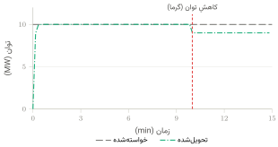
ایده. پلّه سریع بود و آغاز بینقص به نظر میرسد. اما پس از ده دقیقه، گرمای تجهیز توان را یک مگاوات کم کرد. انرژیِ تحویلی ۹۶٫۱٪ خواستهشده شد. توان در لحظهٔ پلّه و انرژی در طولِ رویداد دو سنجهٔ جدا هستند. الزام میگوید کدام پرداخت میشود. اگر انرژی پرداخت شود، حدِ دماییِ مبدل یا تهویهٔ باتری (بخش 19.5.12) در طراحیِ خدمت دیده میشود، نه فقط در ظرفیتِ نامی.
37.9.4 بازیابی پیش از رویدادِ بعدی
recovery: available again only with room for one more full event
SOC before 60 %, after the event 53.75 %, needed 56.25 %
recovery allowed (placeholder): 30 min
recharge power energy MWh time min within the limit?
2 MW 1.00 32 NO
5 MW 1.00 13 yes
(94 % one-way efficiency)
a gentle recharge, kinder to the cells and to the import
peak, can fail the recovery time; until the battery is
back above the line it is not available for the
service, and the record shows SOC with every event
because the next one is judged on itمثال 37.39 (شارژی آرام که از زمانِ بازیابی میگذرد) پرسش. باتریِ ۴۰ مگاواتساعتی با حالتِ شارژِ ۶۰٪ یک رویدادِ ۲٫۵ مگاواتساعتی را داده است. خدمت فقط وقتی دوباره در دسترس است که جا برای یک رویدادِ کاملِ دیگر بالای کفِ ۵۰٪ باشد. با شارژِ ۲ و ۵ مگاواتی و بازدهِ یکطرفهٔ ۹۴٪، بازیابی چقدر طول میکشد؟ حدِ جاینگهدار ۳۰ دقیقه است.
پاسخ. حالتِ شارژ پس از رویداد ۵۳٫۷۵٪ است و ۵۶٫۲۵٪ لازم است. یک مگاواتساعت باید شارژ شود. با ۲ مگاوات ۳۲ دقیقه (بیش از حد) و با ۵ مگاوات ۱۳ دقیقه (درون حد).
تفسیر. شارژِ آرام برای سلولها مهربانتر است و پیکِ برداشت از شبکه را کم میکند، اما از زمانِ بازیابی میگذرد. تا وقتی باتری دوباره بالای خط نیامده، خدمت در دسترس نیست. سابقه حالتِ شارژ را با هر رویداد نگه میدارد، چون رویدادِ بعدی با آن داوری میشود. وارسی: \(1.0/(2 \times 0.94) = 0.53\,\text{h} = 32\,\text{min}\).
37.9.5 کیفیتِ دورسنجی در تسویه
600 service hours, 9 failed, 14 with bad-quality telemetry
settlement rule (placeholder) hours failed availability
bad telemetry counts as failed 23 96.17 %
bad telemetry excluded 9 98.46 %
bad telemetry replaced by the meter 11 98.17 %
(with the revenue meter as backup, 2 of the 14 hours turn
out to be real failures)
the same month gives three results; the rule is in the
requirement, and the plant's own telemetry quality is
part of its performance (ch 34, ch 35)ایده. ۱۴ ساعت از ۶۰۰ ساعتِ خدمت دورسنجیِ با کیفیتِ بد دارند. سه قاعده سه نتیجه میدهند: ۹۶٫۱۷٪، ۹۸٫۴۶٪ یا ۹۸٫۱۷٪. قاعده در الزام است. کیفیتِ دورسنجیِ خودِ نیروگاه هم بخشی از عملکردِ آن است. نیروگاهی که دورسنجیاش ۲٫۳٪ ساعتها بد است، در بدترین قاعده به اندازهٔ همان ساعتها جریمه میشود، حتی اگر خدمت را داده باشد. کیفیتِ دورسنجی از این رو مثلِ هر شاخصِ دیگری پایش میشود (بخش 35.3.2). کنتورِ درآمدی هم بهعنوانِ پشتیبان در قرارداد نام برده میشود.
37.9.6 ماهِ خدمت
a month of service availability (synthetic, placeholder rules)
hours in the month 744; hours the service was called 600
excluded by agreement (grid outage) 12; not delivered 9
service availability: 98.47 %
each failed hour has its evidence (telemetry, set points,
plant state) and each excluded hour its reason; the
operator settles on the same records, so they are kept
untouched (lesson B)ایده. دسترسپذیریِ خدمت ساعتهای تحویلشده را بر ساعتهایی که خدمت خواسته شد تقسیم میکند. ساعتهای استثناشده از مخرج کم میشوند:
\[ A_\text{s} = \frac{T_\text{call} - T_\text{ex} - T_\text{fail}}{T_\text{call} - T_\text{ex}} \tag{37.14}\]
با ۶۰۰ ساعتِ فراخوان، ۱۲ ساعتِ استثنا و ۹ ساعتِ ناموفق، \(A_\text{s} = 579/588 = 98.47\,\%\). هر ساعتِ ناموفق شاهدش را دارد: دورسنجی، نقطههای تنظیم و حالتِ نیروگاه. هر ساعتِ استثنا هم دلیلش را دارد.
37.9.7 انتساب و مرزهایش
five failed service hours and who caused them (synthetic)
hour what evidence charged
H1 set point not reached inverter limit, 46 C plant
H2 response 12 s late PPC restart after update plant
H3 output cut grid voltage dip, FRT active unclear
H4 no response operator's command lost unclear
H5 set point not reached export limit order excluded
penalty at 500 u an hour (placeholder): 1,000 u certain, 1,000 u disputed
some hours cannot be pinned on one side with the data the
plant has: H3 needs the operator's voltage record, H4 its
command log. The plant states the limit of its own
evidence and asks for the other party's, instead of
claiming or accepting the hours on a guessمثال 37.40 (ساعتهایی که نیروگاه بهتنهایی نمیتواند داوری کند) پرسش. پنج ساعتِ خدمت ناموفق بوده است. کدامها قطعاً به نیروگاه برمیگردند، کدامها نامعلوماند و کدام استثنا هستند؟ جریمه با ۵۰۰ واحد برای هر ساعت (جاینگهدار) چقدر است؟
پاسخ. H1 (حدِ اینورتر در ۴۶ درجه) و H2 (راهاندازیِ دوبارهٔ کنترلگر پس از بهروزرسانی) با نیروگاه است: ۱٬۰۰۰ واحدِ قطعی. H3 (افتِ ولتاژِ شبکه با عبور از خطای فعال) و H4 (فرمانِ گمشدهٔ بهرهبردار) نامعلوماند: ۱٬۰۰۰ واحدِ مورد اختلاف. H5 فرمانِ سقفِ صادرات است و استثناست.
تفسیر. برخی ساعتها با دادههای نیروگاه به یک طرف نسبت داده نمیشوند. H3 سابقهٔ ولتاژِ بهرهبردار را لازم دارد: آیا افت آنقدر عمیق بود که عبور از خطا (فصل 28) خروجی را بهحق کم کند؟ H4 سابقهٔ فرمانِ بهرهبردار را لازم دارد: آیا فرمان فرستاده شد؟ نیروگاه مرزِ شاهدِ خودش را میگوید و شاهدِ طرفِ دیگر را میخواهد. ساعتها را بر پایهٔ حدس نه میپذیرد و نه رد میکند. H2 هم درسی دارد: بهروزرسانیِ میانافزار در پنجرهٔ خدمت انجام شد. مدیریتِ تغییرِ فصلِ ۳۶ (بخش 36.4.5) باید پنجرههای خدمت را بشناسد. وارسی: \(2 \times 500 = 1\,000\).
- سه سنجهٔ داوریِ یک پلّهٔ نقطهٔ تنظیم را نام ببرید.
- پاسخِ مرتبهٔ اول با \(\tau = 4\,\text{s}\) و تأخیرِ \(0.5\,\text{s}\). \(t_{90}\) چقدر است؟
- چرا مشخصه باید نرخِ نمونهبرداری را هم بگوید؟
- ثبتکننده ۳ ثانیه عقب است. چرا جابهجاییِ یافته با جستوجو را نباید به کار برد؟
- توانِ پلّه درست بود ولی انرژی ۹۴٪ شد. چه چیزی را باید وارسی کرد؟
- باتریِ ۴۰ مگاواتساعتی ۱٫۵ مگاواتساعت کمبود دارد. با ۳ مگاوات و بازدهِ ۹۴٪ چند دقیقه طول میکشد؟
- ۵۰۰ ساعتِ فراخوان، ۱۰ استثنا و ۶ ناموفق. دسترسپذیریِ خدمت؟
- چرا کیفیتِ دورسنجی بخشی از عملکردِ نیروگاه است؟
- چه شاهدی برای ساعتِ H3 لازم است و از چه کسی؟
- چرا نیروگاه ساعتهای نامعلوم را نه میپذیرد و نه رد میکند؟
پاسخها: (۱) \(t_{90}\)، \(t_\text{s}\) و \(\epsilon_\text{rms}\)؛ (۲) \(0.5 + 4 \times 2.30 = 9.7\,\text{s}\)؛ (۳) نمونهبرداری داوری را جابهجا میکند؛ (۴) تأخیرِ خودِ نیروگاه را هم برمیدارد؛ (۵) حدِ دمایی و کاهشِ توان در طولِ رویداد؛ (۶) \(1.5/(3 \times 0.94) = 0.53\,\text{h} \approx 32\,\text{min}\)؛ (۷) \(484/490 = 98.78\,\%\)؛ (۸) در تسویه شمرده میشود؛ (۹) سابقهٔ ولتاژ از بهرهبردارِ شبکه؛ (۱۰) شاهدِ کافی ندارد.
37.10 ساخت و تولیدِ صنعتی: دادههای کارخانه بهعنوانِ ورودی
پایشِ عملکرد چیزی فیزیکی نمیسازد. از این رو بخشِ ساختِ این فصل بهمعنای فرایندِ کارخانه کاربرد ندارد. فرایندهای کارخانه، طرحِ کنترل و پروندهٔ آزمونِ هر محصول در فصلهای ۴۰ تا ۴۸ میآیند. اما دادههای کارخانه یکی از مهمترین ورودیهای تحلیلِ قابلیتِ اطمیناناند. این بخش میگوید کدام دادهها خواسته میشوند، چگونه به خرابیهای میدانی گره میخورند، و مرزِ کارِ نیروگاه با کارِ سازنده کجاست.
37.10.1 کدام دادههای کارخانه
| دادهٔ کارخانه | از کجا | در این فصل به چه کار میآید |
|---|---|---|
| شمارهٔ سریال و دستهٔ تولید هر قلم | سازنده، هنگامِ تحویل | گره زدنِ هر خرابیِ میدانی به دستهاش |
| نتیجههای آزمونِ کارخانه و دورهٔ گرمایش (burn-in) | پروندهٔ آزمون (فصلهای ۴۰ و ۴۸) | خرابیهای زودرس و شیبِ رشدِ قابلیتِ اطمینان |
| عدمانطباقها و تغییرهای فرایند | سامانهٔ کیفیتِ سازنده | توضیحِ تفاوتِ دستهها |
| اعلامیههای فنی و تغییرهای طراحی | سازنده، در طولِ عمر | فهرستِ قطعههای یدکی (مثال 37.11) |
| نرخهای خرابیِ اعلامشده و پایهشان | برگهٔ داده، گزارشِ قابلیتِ اطمینان | مقایسه با نرخِ میدانی، با بازه |
ایده. این دادهها در قراردادِ خرید خواسته میشوند (فصل 39). بیشترشان را سازنده در هر حال دارد. اگر قرارداد آنها را نخواهد، پس از تحویل بهسختی به دست میآیند. شمارهٔ سریال و دسته از همه ارزانترند و بیش از همه کار میکنند. بیآنها، خرابیهای میدانی را نمیشود به هیچ دستهای نسبت داد.
37.10.2 خرابیهای میدانی به تفکیکِ دستهٔ تولید
field failures of inverter fans by production lot, first year
(synthetic; units run 95 % of the year)
lot units failures rate /1e6 h 90 % interval
lot L1 200 3 1.80 0.49-4.66
lot L2 200 11 6.61 3.71-10.94
lot L3 150 2 1.60 0.28-5.04
L1 and L3 pooled: 5 failures, 1.72 per 1e6 h, 0.68-3.61
L2's interval lies above the pooled one: the lot, not
the site, is the first suspect - the serial numbers
tie each field failure to its lot, and the maker's
factory records for that lot (burn-in, process changes)
are asked for as inputs (ch 40-48); the cause is
settled with the maker, not guessed from the fieldمثال 37.41 (دستهای که از بقیه بیرون میزند) پرسش. پروانههای خنککنِ اینورترها از سه دستهٔ تولید آمدهاند. دستهٔ L2 در سالِ نخست ۱۱ خرابی داشته و دو دستهٔ دیگر روی هم ۵. آیا تفاوت از نوفه بزرگتر است؟ گامِ بعد چیست؟ (دادهٔ ساختگی، A-413.)
پاسخ. نرخِ L2 ۶٫۶۱ خرابی در میلیون ساعت با بازهٔ ۹۰ درصدیِ ۳٫۷۱ تا ۱۰٫۹۴ است. دو دستهٔ دیگر روی هم ۱٫۷۲ با بازهٔ ۰٫۶۸ تا ۳٫۶۱. بازهٔ L2 بالای بازهٔ دیگران است.
تفسیر. بازهٔ هر دسته بهتنهایی با دیگری همپوشانی دارد، چون هر کدام فقط چند خرابی دارد. یکی کردنِ دستههای همگون عدمِ قطعیت را کم میکند و تفاوت را آشکار میکند. حالا دسته، نه ساختگاه، نخستین مظنون است. گامِ بعد خواستنِ سابقهٔ کارخانهٔ آن دسته است: نتیجهٔ گرمایش، تغییرِ فرایند، تأمینکنندهٔ قطعه. علت با سازنده روشن میشود و از روی دادهٔ میدان حدس زده نمیشود. اگر علت در دسته باشد، ادعای ضمانت و تعویضِ پیشگیرانهٔ آن دسته روی همین شاهد ایستاده است. وارسی: \(11/(200 \times 8\,760 \times 0.95) = 6.61 \times 10^{-6}\) در ساعت.
37.10.3 مرزِ کارِ نیروگاه و کارِ سازنده
ایده. نیروگاه الگو را میبیند: کدام دسته، کدام سامانه، کدام سن. سازنده علت را در فرایندِ خودش پیدا میکند. نیروگاه نه دستورِ کارِ کارخانه میدهد و نه فرایندِ کارخانه را تحلیل میکند. شاهدش را میدهد و پاسخِ مستند میخواهد. پاسخِ سازنده هم در دفترِ رویدادها ثبت میشود: علت، چاره، و دستههای دیگری که در معرضِ همان علتاند. این حلقه همان بازخوردِ بخش 37.6.12 است، از سویِ کارخانه.
تحلیلِ علتِ خرابیِ یک قطعه در آزمایشگاه، مثلاً بازکردن و برش و آزمونِ مواد، کارِ سازنده یا آزمایشگاهِ مستقل است. قطعهٔ خراب با برچسب و زنجیرهٔ نگهداری به آنها سپرده میشود (بخش 37.3.6). نیروگاه از آن نتیجه میگیرد، اما خودش آن را انجام نمیدهد.
- چرا شمارهٔ سریال و دستهٔ تولید ارزشمندترین دادهٔ کارخانه برای پایشاند؟
- دستهای با ۸ خرابی و دستهای با ۲ خرابی، هر دو ۲۰۰ قلم. چرا ممکن است بازههایشان همپوشان باشند؟
- یکی کردنِ دستههای همگون چه سودی دارد و چه خطری؟
- پس از یافتنِ دستهٔ مشکوک، گامِ بعد چیست؟
- چه کسی علتِ یک خرابی را در فرایندِ کارخانه پیدا میکند؟
- چرا این دادهها در قراردادِ خرید خواسته میشوند؟
پاسخها: (۱) هر خرابی را به دستهاش گره میزنند؛ (۲) با چند خرابی بازهها پهناند؛ (۳) عدمِ قطعیت را کم میکند، اما اگر دستهها همگون نباشند تفاوت را پنهان میکند؛ (۴) خواستنِ سابقهٔ کارخانهٔ آن دسته از سازنده؛ (۵) سازنده؛ (۶) پس از تحویل بهسختی به دست میآیند.
37.11 نیروگاهِ P: سه مثالِ یکپارچه
برنامه:
python -m companion.ch37.integratedمثال 37.42 (مقدماتی: دو نتیجه با دست) پرسش. PR آوریل و میانگینِ عمرِ پروانهها را با دست حساب و با کد مقایسه کنید.
two monitoring results checked by hand
April PR: (10,039 MWh / 60.06 MWp) / 206.2 kWh/m2 = 0.811; code 0.811
fan MTBF: (38,600 h of the 4 failed + 8 x 17,520 h) / 4 = 44,690 h
a hand check of PR catches the commonest slip: MWh against
kWh/kWp, a factor of a thousand in one place onlyپاسخ. PR آوریل ۰٫۸۱۱ و میانگینِ عمرِ پروانهها ۴۴٬۶۹۰ ساعت، هر دو برابر با کد.
تفسیر. رایجترین لغزش در PR یکاهاست: مگاواتساعت در صورت و کیلوواتساعت بر کیلووات در جای دیگر. ضریبِ هزار فقط در یک جا مینشیند. حسابِ دستی آن را پیدا میکند. PR آوریلِ جدولِ ماهانه ۰٫۸۱۰ است، کمی کمتر از ۰٫۸۱۱. فرق از گرد کردنِ ورودیهای دستی است، نه از روش. وارسی: \(10\,039/60.06 = 167.2\) و \(167.2/206.2 = 0.811\).
مثال 37.43 (میانی: بستهٔ پایش در عدد) پرسش. بستهٔ پایشِ عملکردِ نیروگاهِ P را در عدد خلاصه کنید.
the monitoring package of Plant P in numbers (synthetic year)
plant energy at MV 300,212 MWh, 99.57 % of model 15.1
four problems found: April soiling (314 MWh), June outage
(339 MWh), August curtailment (163 MWh), October sensor
PR 0.832 on the reference sensor; corrected to 25 C the
months agree within 0.02 except April and June
fleet availability 98.41 % true; 98.36 % raw and 98.48 %
cleaned from a log with planted defects
day-ahead forecast skill 0.42 on held-out data; a drift
found 8 days after a plant change
service step passes its placeholder specificationتفسیر. ارزشِ بسته در عددها نیست. در این است که هر عدد تعریف، خطمبنا، پنجره، کامل بودن و شاهد دارد. همین عددها بیآنها در هر جلسه دوباره زیرِ پرسش میروند. وارسی: \(314 + 339 + 609 + 20 = 1\,282\) و \(1 - 1\,282/301\,494 = 99.57\,\%\).
مثال 37.44 (یکپارچه: مبنای پایشِ عملکردِ نیروگاهِ P) پرسش. مبنای پایشِ عملکرد را با یافتهها و موردهای باز بنویسید.
D-041 performance monitoring basis of Plant P (teaching)
1 indicators: PR on a reference sensor and at 25 C, specific
yield, time- and production-based availability with the
contract's exclusions, curtailment kept apart
2 baseline: model 15.1 hourly; daily residual with a CUSUM;
thresholds set from the cost of a miss and of a visit
3 data: validation before any indicator; flagged hours
marked, not deleted; completeness reported
4 events: one taxonomy, written entry/exit and priority
rules, planned overruns counted as forced
5 reliability: coded hierarchy, exposure-based rates with
intervals, censored estimates, Weibull for wear-out,
growth slope for the young fleet
6 forecasts: scored by horizon on held-out data, against
persistence; drift watched after every plant change
7 services: scored against a written specification; trace,
specification and result kept as settlement evidence
open: contractual availability definitions and the grid
operator's service specification (U-118)تفسیر. این تصمیمِ D-041 است. یافتههایی که به فصلهای دیگر برمیگردند:
- تابشسنجِ صفحهٔ آرایه یک جابهجاییِ شبانه و یک دورهٔ کمخوانی داشت. دو تابشسنج و یک سلولِ مرجعِ پاکشده در طرحِ پایش میمانند (فصلهای ۱۲ و ۳۴).
- علتِ ریشهایِ ازکارافتادنِ بلوکِ B07 یک فهرستِ قطعهٔ کهنه بود. فهرستِ قطعههای یدکی به اعلامیههای سازنده گره میخورد (فصلهای ۴۸ و ۵۱).
- انتظار ۷۳٪ ساعتهای ازکارافتادگیِ توربینها را ساخت. قطعهٔ یدکی در ساختگاه و تکنسینِ مقیم در برنامهٔ بهرهبرداری سنجیده میشوند (فصلهای ۳۱ و ۵۱).
- یاتاقانهای اصلی رو به فرسودگیاند. برنامهٔ تعویض بر پایهٔ سن نوشته میشود، نه نرخِ ثابت (فصلهای ۵۲ و ۵۳).
- هر تغییرِ نیروگاه مالکِ مدلِ پیشبینی و مالکِ خطمبنا را خبر میکند. دو توربینِ تازه بیخبر هشت روز سوگیری ساختند (فصلهای ۳۶ و ۵۱).
- بهروزرسانیِ میانافزار در پنجرهٔ خدمت یک ساعتِ ناموفق ساخت. مدیریتِ تغییر پنجرههای خدمت را میشناسد (فصلهای ۳۶ و ۵۱).
- تعریفهای قراردادیِ دسترسپذیری و مشخصهٔ خدمتِ بهرهبردارِ شبکه هنوز نیامدهاند (U-118).
37.12 عددهای کلیدیِ پایشِ نیروگاهِ P
| کمیت | مقدار | مثال |
|---|---|---|
| PR سالانه روی حسگرِ مرجع | ۰٫۸۳۲ | مثال 37.1 |
| تولیدِ واقعی بر مدل | 99.57 %؛ فاصلهٔ 1,282 MWh | مثال 37.5 |
| هشدارِ مجموعِ تجمعی | روزِ ۹۹ (خاک)، روزِ ۱۶۰ (اینورتر) | مثال 37.9 |
| بلوکِ بیرونزده از همتایان | B04، 3.4 % کمتر | مثال 37.13 |
| دسترسپذیریِ ناوگانِ توربین (خام / پالایش / حقیقت) | 98.36 / 98.48 / 98.41 % | مثال 37.27 |
| انتظار در برابرِ تعمیر | 1,230 h / 409 h | مثال 37.29 |
| یاتاقانِ خرابشده تا 80,000 h (وایبول / نرخِ ثابت) | 94 % / 61 % | مثال 37.26 |
| مهارتِ پیشبینیِ روزِ بعد | ۰٫۴۲ | مثال 37.31 |
| دسترسپذیریِ خدمت در ماه | 98.47 % | بخش 37.9.6 |
37.13 گردشِ کارِ پایشِ عملکرد
- شاخصها با تعریف، پنجره و استثناهای قرارداد؛ خطمبنای نسخهدار (بخش 37.2).
- اعتبارسنجیِ داده پیش از هر شاخص؛ کامل بودن کنارِ هر عدد (بخش 37.3.1، بخش 37.2.8).
- باقیماندهٔ روزانه، مجموعِ تجمعی و آستانه از هزینهٔ کمگیری و هشدارِ نادرست (بخش 37.3.2).
- تحلیلها با مرزهایشان: همتایان، منحنیِ توان، روند، آشکارساز با بازبینیِ انسانی (بخش 37.4).
- تشخیص با امضا، سطحِ اطمینان و شاهدِ پیگیری؛ علتِ ریشهای و نگهداریِ شاهد (بخش 37.5، بخش 37.3.5).
- ردهبندیِ رویدادها، مرزها، قاعدهٔ تقدم، سلسلهمراتب و کدها (بخش 37.6).
- قابلیتِ اطمینان: زمانِ در معرض، بازه، سانسور، وایبول، رشد؛ پالایشِ سابقه پیش از شمارش (بخش 37.6، بخش 37.7).
- پیشبینی: امتیاز به تفکیکِ افق و فناوری روی دادهٔ کنارگذاشته؛ رمپ، پوشش، رانش، پول (بخش 37.8).
- خدمت: مشخصهٔ نوشتهشده، یک پایهٔ زمانی، انرژی و بازیابی، دورسنجی، انتساب و شاهدِ تسویه (بخش 37.9).
37.14 آزمایشگاههای پایتونِ این فصل
| آزمایشگاه | برنامه | آنچه میسازد |
|---|---|---|
| داده | sources | سالِ کارکردِ ساختگی با چهار مشکلِ کاشته |
| شاخصها | examples_a | PR، دسترسپذیریِ زمانی و انرژیایی، استثناها، پنجرهها، تصحیحِ دما، آبشار |
| تشخیص | examples_b | اعتبارسنجی، مجموعِ تجمعی، آستانه، کیفیتِ هشدار، علتِ ریشهای، شاهد، نگهداریِ پیشبینانه |
| تحلیلها | examples_c | همتایان، منحنیِ توان، صفِ بازبینی، کامل بودن، روندِ افت، خطمبنای یادگرفته |
| ژرفتر | examples_k | عدمِ قطعیتِ PR، میانگینِ متحرک، ۲۱۰ آزمون، پلّهٔ شستشو، سالهای لازم برای نرخِ افت، دسترسپذیریِ انرژیاییِ مزرعه، ضمانت و شانس |
| آزمایشگاهِ ت | lab_c | جدولِ ماهانه و امضای روزانهٔ چهار مشکل |
| ردهبندی | examples_d | دستهها، مرزها، همزمانی، کارِ طولانیشده |
| آزمایشگاهِ ج | lab_e | سابقهٔ رویداد با عیب، سامانهٔ مشترک، انتظار و تعمیر |
| قابلیتِ اطمینان | examples_f | سلسلهمراتب، زمانِ در معرض، سانسور، وایبول، رشد، مقایسه، دستههای تولید |
| آزمایشگاهِ چ و ح | lab_g | امتیاز به تفکیکِ افق، دامِ آموزش، رانش، پوشش، پلّهٔ خدمت، ماهِ خدمت |
| پیشبینی | examples_g | فناوری، رمپها، شکافِ خوراک، مهارت و پول |
| خدمت | examples_h | دو ساعت، انرژی، بازیابی، دورسنجی، انتساب |
| نیروگاهِ P | integrated | با دست، بسته، مبنای D-041 |
| مثالها و پاسخها | worked | سطرهای E01 و P01 به بعد |
ماژولِ تازهٔ performance با آزمونهایی در برابرِ حسابِ دستی پایهٔ این برنامههاست. امتیازهای پیشبینی از ماژولِ yieldmodel فصلِ ۱۵ دوباره به کار رفتهاند. همهٔ دادهها ساختگیاند و هیچ برنامهای به سامانهٔ زنده وصل نمیشود.
37.15 جعبهٔ استاندارد و انطباق
- پایشِ عملکردِ سامانههای فتوولتائیک: IEC 61724-1:2021 (STD-069)؛ نسبتِ عملکرد، حسگرها و کیفیتِ داده.
- دسترسپذیریِ سامانههای تولیدِ برقِ بادی: IEC 61400-26-1:2019 (STD-165)؛ مدلِ اطلاعاتی با دستههای زمانی و تولیدمحور. فرمولِ قرارداد را قرارداد تعیین میکند.
- اندازهگیریِ عملکردِ توانِ توربین: IEC 61400-12-1:2022 (STD-081)؛ روشِ دستهها برای منحنیِ توان.
- تحلیلِ وایبول: IEC 61649:2008 (STD-166).
- مدیریتِ سامانههای هشدار: IEC 62682:2022 (STD-153). مدیریتِ دارایی: ISO 55000:2024 (STD-030).
- مشخصهٔ خدمتهای شبکه، روشِ تسویه و تعریفهای قراردادیِ دسترسپذیری از بهرهبردارِ شبکه و قراردادها میآیند (U-118). قانونِ کشوری، اگر هست، در فصلهای ۵۵ تا ۵۷ بررسی میشود.
- هیچ عددی در این فصل الزام نیست و هیچ بندی از استانداردها نقل نشده است. (وارسیشده 2026-11-17.)
37.16 تحویلدادنیِ نیروگاهِ P
| سند | محتوا | معیارِ پذیرش |
|---|---|---|
| PLP-GEN-SPC-0003 | مشخصهٔ پایشِ عملکرد: شاخصها، خطمبنا، پنجرهها، استثناها | هر شاخص با تعریف، پنجره و کامل بودن |
| PLP-GEN-PRO-0005 | روشِ اعتبارسنجی، تشخیص، علتِ ریشهای و نگهداریِ شاهد | هر تشخیص با سطحِ اطمینان و شاهد |
| PLP-GEN-REG-0008 | دفترِ رویدادها و خرابیها با ردهبندی، سلسلهمراتب و کدها | هر ساعت در یک دسته؛ هر رویداد آغاز و پایان |
| PLP-GEN-REP-0013 | گزارشِ ماهانهٔ عملکرد (الگو و ماهِ کارشده) | فاصلهٔ مدل تا واقعیت توضیح داده شده |
| PLP-GEN-CAL-0008 | تحلیلِ قابلیتِ اطمینان و دسترسپذیری | نرخها با زمانِ در معرض و بازه |
| PLP-CTL-REP-0004 | گزارشِ عملکردِ پیشبینی و خدمت | امتیاز روی دادهٔ کنارگذاشته؛ شاهدِ تسویه |
این فصل اینها را به پروندهٔ نیروگاهِ P میافزاید:
- تصمیمِ D-041: مبنای پایشِ عملکرد (مثال 37.44).
- فرضهای A-409 تا A-416:
- A-409: سالِ کارکردِ ساختگی از مدلِ ۱۵٫۱ با نوفه و چهار مشکلِ کاشته.
- A-410: عیبهای کاشتهٔ داده و هزینههای آموزشیِ آشکارسازی.
- A-411: مقدارهای آموزشیِ تحلیلها: همتایان، منحنی، صفِ بازبینی، نگهداریِ پیشبینانه، روندِ افت.
- A-412: سابقهٔ ساختگیِ رویدادها با عیبهای کاشته و ردهبندیِ آموزشی.
- A-413: دادههای ساختگیِ خرابی: سامانهها، مبدلها، پروانهها، یاتاقانها، ناوگانِ تازه، دستههای تولید.
- A-414: پیشبینیهای ساختگی: افقها، فناوریها، رمپها، شکافها، رانش.
- A-415: قیمتهای آموزشیِ انحراف و جریمهٔ جاینگهدارِ خدمت.
- A-416: ردهای ساختگیِ خدمت و مشخصهٔ پذیرشِ جاینگهدار.
- مجهول: تعریفهای قراردادیِ دسترسپذیری و مشخصهٔ خدمتِ بهرهبردارِ شبکه (U-118).
- یافتهها: دو تابشسنج و سلولِ مرجع، فهرستِ قطعهها گرهخورده به اعلامیهها، قطعه و تکنسینِ مقیم، تعویضِ یاتاقان بر پایهٔ سن، خبرِ تغییر به مالکانِ مدلها.
- کتابخانهٔ همراه: ماژولِ
performanceبا آزمونها و برنامههای فصلِ ۳۷.
37.17 جمعبندی
- شاخصها و خطمبنا: هر شاخص یک پرسشِ روشن را جواب میدهد؛ PR کیفیتِ تبدیل و ضریبِ ظرفیت بهره از توانِ نامی؛ دسترسپذیریِ زمانی و انرژیایی، هر کدام با فهرستِ استثناهای قرارداد؛ پنجرهٔ گزارش گفته میشود؛ تصحیحِ دما فصل را جدا میکند؛ آبشارِ تلفات هر سهم را به علت و مالک میرساند؛ خطمبنا نسخهدار است و با دادهٔ دورهٔ داوری برازش نمیشود؛ صورت و مخرج روی همان ساعتها؛ کاهشِ تولید جدا (بخش 37.2).
- از داده تا تشخیص: اعتبارسنجی پیش از هر شاخص؛ باقیماندهٔ روزانه و مجموعِ تجمعی پلّه را در یک روز و شیب را در چند روز میگیرند؛ آستانه از هزینهٔ کمگیری و هشدارِ نادرست؛ ده برچسبِ پرتکرار بیشترِ هشدارها؛ علتِ ریشهای با شاهدِ هر گام؛ شاهد پیش از تعمیر گرد میآید؛ نگهداریِ پیشبینانه بازرسی را پشتیبانی میکند و جایش را نمیگیرد (بخش 37.3).
- تحلیلها و مرزها: همتایان هوا را حذف میکنند و با میانه و MAD سنجیده میشوند؛ منحنیِ توان میگوید کجا کم است؛ هر پرچم به یک انسان میرسد؛ روشِ سالبهسال فصل را حذف میکند و بازه میدهد؛ رانشِ مدل با دفترِ تغییرها و بازبینیِ ماهانه دیده میشود (بخش 37.4).
- آزمایشگاهِ تشخیص: جدولِ ماهانه و امضای روزانه خاکگرفتگی (شیب)، ازکارافتادگی (پلّه)، کاهشِ تولید (سقفِ صاف) و عیبِ حسگر (جهشِ PR بیجهشِ انرژی) را جدا میکنند؛ هر تشخیص سطحِ اطمینان و شاهدِ پیگیری دارد (بخش 37.5).
- انضباطِ قابلیتِ اطمینان: پنج مفهومِ جدا؛ هر ساعت در یک دسته با قاعدهٔ تقدم؛ انتظار جدا از تعمیر؛ کارِ طولانیشده اجباری است؛ سلسلهمراتب و کدهای بسته؛ نرخ با زمانِ در معرض و بازه؛ سابقههای سانسورشده؛ وایبول برای فرسودگی؛ شیبِ رشد برای ناوگانِ تازه؛ مقایسه با یک تعریف (بخش 37.6).
- آزمایشگاهِ قابلیتِ اطمینان: تکراریها بدبین میکنند و ردیفهای بیپایان خوشبین؛ تعریف به اندازهٔ عیبها اثر دارد؛ رویدادِ سامانهٔ مشترک یک بار روی همان سامانه؛ کوتاه کردنِ انتظار بیش از تعمیرِ سریع میارزد (بخش 37.7).
- پیشبینی: امتیاز به تفکیکِ افق و فناوری روی دادهٔ کنارگذاشته؛ رمپها رویدادند و مدارای زمانی بخشِ تعریف است؛ شکافِ خوراک در ساعتهای سخت؛ پوشش؛ رانش پس از تغییرِ نیروگاه؛ مهارت با پول یکی نیست و هیچکدام تضمینِ تحویل نیست (بخش 37.8).
- خدمتها: مشخصهٔ نوشتهشده پیش از آزمون؛ یک پایهٔ زمانی از سابقهٔ ساعتها، نه از برازش؛ توان و انرژی دو سنجه؛ بازیابی پیش از رویدادِ بعدی؛ کیفیتِ دورسنجی در تسویه؛ مرزِ شاهدِ خود را گفتن (بخش 37.9).
- ساخت: کاربرد ندارد؛ دادههای کارخانه ورودیاند؛ شمارهٔ سریال و دسته خرابیها را به دسته میرساند؛ علت را سازنده پیدا میکند (بخش 37.10).
37.17.1 واژگانِ فصلِ ۳۷
| فارسی | انگلیسی | یادداشت |
|---|---|---|
| شاخصِ عملکرد | key performance indicator | KPI |
| نسبتِ عملکرد | performance ratio | PR |
| تولیدِ ویژه | specific yield | |
| تولیدِ مرجع | reference yield | |
| دسترسپذیری | availability | |
| دسترسپذیریِ زمانی | time-based availability | |
| دسترسپذیریِ انرژیایی | production-based availability | |
| استثنا | exclusion | |
| پنجرهٔ گزارش | reporting window | |
| آبشارِ تلف | loss waterfall | |
| انرژیِ مورد انتظار | expected energy | |
| همسنجی | normalisation | |
| باقیمانده | residual | |
| مجموعِ تجمعی | cumulative sum | CUSUM |
| علتِ ریشهای | root cause | |
| نگهداریِ پیشبینانه | predictive maintenance | |
| مقایسه با همتایان | peer comparison | |
| میانهٔ قدرِمطلقِ انحراف | median absolute deviation | MAD |
| آشکارسازیِ ناهنجاری | anomaly detection | |
| سالبهسال | year-on-year | |
| رانشِ مدل | model drift | |
| ردهبندیِ رویدادها | event taxonomy | |
| ازکارافتادگیِ اجباری | forced outage | |
| ازکارافتادگیِ برنامهریزیشده | planned outage | |
| زمانِ ازکارافتادگی | downtime | |
| سلسلهمراتبِ تجهیزات | equipment hierarchy | |
| کدِ خرابی | failure code | |
| زمانِ در معرض | exposure | |
| سابقهٔ سانسورشده | censored record | |
| رشدِ قابلیتِ اطمینان | reliability growth | |
| دادهٔ کنارگذاشته | held-out data | |
| بیشبرازش | overfitting | |
| رویدادِ رمپ | ramp event | |
| خطای ردگیری | tracking error | |
| شاهدِ تسویه | settlement evidence | |
| دستهٔ تولید | production lot |
37.18 ارزیابیِ پلکانی
معیارِ تسلطِ این فصل: خواننده میتواند شاخصهای عملکرد را با تعریف، خطمبنا، پنجره، استثنا و کامل بودن بسازد؛ از دادههای پایش به تشخیصی با شاهد و سطحِ اطمینان برسد؛ خاکگرفتگی، ازکارافتادگی، کاهشِ تولید و عیبِ حسگر را از دادههای ماهانه جدا کند؛ سابقهٔ رویدادها را پالایش و دسترسپذیری و نرخهای خرابی را با بازه حساب کند؛ پیشبینیها را روی دادهٔ کنارگذاشته به تفکیکِ افق امتیاز دهد؛ و عملکردِ یک خدمت را در برابرِ مشخصهٔ نوشتهشده با شاهدِ تسویه بسنجد. پاسخها در بخش 37.19 آمدهاند.
37.18.1 پلهٔ ۱: مبانی
تمرین 37.1 \(Y_\text{f}\) و \(Y_\text{r}\) را تعریف کنید.
تمرین 37.2 چرا PR و ضریبِ ظرفیتِ بخشِ خورشیدی اینقدر متفاوتاند؟
تمرین 37.3 PR همراهِ چه چیزهایی گزارش میشود؟
تمرین 37.4 معادلهٔ 37.2 و معادلهٔ 37.3 را توضیح دهید.
تمرین 37.5 چرا دسترسپذیریِ زمانی توقفِ آرام و پرباد را یکی میبیند؟
تمرین 37.6 فهرستِ استثناها را چه کسی مینویسد؟
تمرین 37.7 چرا گزارش پنجرهاش را میگوید؟
تمرین 37.8 معادلهٔ 37.4 را توضیح دهید.
تمرین 37.9 چرا دمای سلول با تابش وزن داده میشود؟
تمرین 37.10 آبشارِ تلف چه چیزی را به هر سهم نسبت میدهد؟
تمرین 37.11 خطمبنا با چه چیزهایی نگه داشته میشود؟
تمرین 37.12 چرا خطمبنا با دادهٔ دورهٔ داوری برازش نمیشود؟
تمرین 37.13 همسنجی یعنی چه؟
تمرین 37.14 چرا شکافِ داده تلفِ انرژی نیست؟
تمرین 37.15 سه قاعدهٔ کاهشِ تولید را بگویید.
تمرین 37.16 چهار وارسیِ اعتبارسنجی را نام ببرید.
تمرین 37.17 ساعتهای پرچمخورده حذف میشوند؟
تمرین 37.18 معادلهٔ 37.5 را توضیح دهید.
تمرین 37.19 چرا مجموعِ تجمعی شیبِ آهسته را میگیرد؟
تمرین 37.20 چرا افتِ اوت خرابی ثبت نشد؟
تمرین 37.21 آستانهٔ آشکارساز از چه چیزی انتخاب میشود؟
تمرین 37.22 «بدکارانِ پرتکرار» در هشدارها یعنی چه؟
تمرین 37.23 علتِ ریشهای را تعریف کنید.
تمرین 37.24 شاهد کِی و چگونه گرد میآید؟
تمرین 37.25 دو مرزِ نگهداریِ پیشبینانه را بگویید.
تمرین 37.26 معادلهٔ 37.6 را توضیح دهید.
تمرین 37.27 مقایسه با همتایان کجا ناتوان است؟
تمرین 37.28 کمبودِ فقط زیرِ سرعتِ نامی به چه اشاره دارد؟
تمرین 37.29 خستگیِ هشدار چگونه از آشکارسازِ گشاد میآید؟
تمرین 37.30 روشِ سالبهسال چگونه کار میکند؟
تمرین 37.31 سه بندِ قاعدهٔ نگهداریِ مدل را بگویید.
تمرین 37.32 چهار امضای روزانه را نام ببرید.
تمرین 37.33 سه سطحِ اطمینانِ تشخیص را تعریف کنید.
تمرین 37.34 گزارشِ ماهانه برای هر انحراف چه مینویسد؟
تمرین 37.35 پنج مفهومِ قابلیتِ اطمینان، دسترسپذیری، نگهداشتپذیری، عملکرد و دسترسپذیریِ داده را جدا کنید.
تمرین 37.36 دستههای شکل 37.11 را بگویید.
تمرین 37.37 مرزهای یک توقف را نام ببرید.
تمرین 37.38 قاعدهٔ تقدم برای چیست؟
تمرین 37.39 کارِ برنامهریزیشدهای که طول بکشد چگونه شمرده میشود؟
تمرین 37.40 سه کدِ هر خرابی کداماند؟
تمرین 37.41 معادلهٔ 37.8 را توضیح دهید.
تمرین 37.42 سابقهٔ سانسورشده چیست؟
تمرین 37.43 \(k\) در معادلهٔ 37.10 چه میگوید؟
تمرین 37.44 \(\beta_\text{g}\) در معادلهٔ 37.11 چه میگوید؟
تمرین 37.45 چرا دو گزارشِ دسترسپذیری مقایسهپذیر نیستند؟
تمرین 37.46 سه وارسیِ کیفیتِ دادهٔ قابلیتِ اطمینان را بگویید.
تمرین 37.47 معادلهٔ 37.12 را توضیح دهید.
تمرین 37.48 چرا امتیاز فقط روی دادهٔ کنارگذاشته گرفته میشود؟
تمرین 37.49 معادلهٔ 37.13 را توضیح دهید.
تمرین 37.50 پوشش و کالیبره بودن را تعریف کنید.
تمرین 37.51 سه سنجهٔ پلّهٔ نقطهٔ تنظیم را بگویید.
تمرین 37.52 معادلهٔ 37.14 را توضیح دهید.
تمرین 37.53 مرزِ کارِ نیروگاه و سازنده در تحلیلِ خرابی کجاست؟
37.18.2 پلهٔ ۲: تحلیل
تمرین 37.54 PR با 10,500 MWh، 60.06 MWp و 210 kWh/m²؟
تمرین 37.55 تولیدِ ویژهٔ 107,426 MWh روی 60.06 MWp؟
تمرین 37.56 ضریبِ ظرفیتِ 192,786 MWh روی 60 MW؟
تمرین 37.57 PR ۰٫۷۸۵ در دمای سلولِ 54 °C به ۲۵ درجه؟
تمرین 37.58 دسترسپذیریِ زمانیِ 8,500 از 8,760 h با 60 h استثنا؟
تمرین 37.59 دسترسپذیریِ انرژیاییِ 4,800 MWh با 120 MWh تلف و 40 استثنا؟
تمرین 37.60 توقفِ ۵۰ ساعته در ماهِ 744 h؟
تمرین 37.61 همان در یک سال؟
تمرین 37.62 زمانِ ازکارافتادگی از ۰۸:۰۰ تا ۱۵:۳۰؟
تمرین 37.63 MTBF سانسورشده: دو خرابی در ۲٬۰۰۰ و ۶٬۰۰۰ ساعت، شش سالم در ۱۰٬۰۰۰؟
تمرین 37.64 میانگینِ سادهلوحانهٔ همان دو؟
تمرین 37.65 بازهٔ ۹۰ درصدیِ ۳ خرابی در 50,000 h؟
تمرین 37.66 سهمِ خرابشدهٔ وایبول در \(t = c\)؟
تمرین 37.67 شیبِ کرو-امسا با خرابی در ۱۰۰، ۴۰۰ و ۹۰۰ ساعت و پایانِ ۱٬۰۰۰؟
تمرین 37.68 مهارت با RMSE ۱۴٫۴ و مرجعِ ۲۴٫۸؟
تمرین 37.69 مهارت با RMSE برابرِ مرجع؟
تمرین 37.70 پوشش با ۸۳۰ از ۹۰۰ ساعت درون؟
تمرین 37.71 دسترسپذیریِ خدمت با ۵۰۰ فراخوان، ۱۰ استثنا، ۶ ناموفق؟
تمرین 37.72 \(t_{90}\) با \(\tau = 3\,\text{s}\) و تأخیرِ یک ثانیه؟
تمرین 37.73 مجموعِ تجمعی با گامهای ۰٫۷۵ تا گذشتن از ۲؟
تمرین 37.74 سهمِ سه تلفِ کاشته از مدل؟
تمرین 37.75 خرابیِ ۱۰ ساعته با ۳ ساعتِ بیرونی در ماهِ 744 h؟
تمرین 37.76 سرویسِ ۲۴ ساعته در ۳۰ ساعت: چند ساعت اجباری؟
تمرین 37.77 سوگیریِ مورد انتظار با دو توربینِ تازه از ۱۲؟
تمرین 37.78 سهمِ هشدارهای به اقدام رسیده، ۴۱۰ از ۳٬۴۲۰؟
تمرین 37.79 \(z_\text{r}\) با ۱٬۷۲۶، میانهٔ ۱٬۷۸۸ و \(1.4826\,\text{MAD} = 9.1\)؟
تمرین 37.80 کمبودِ ۵٪ روی ۶٬۰۰۰ مگاواتساعتِ ناحیهٔ ۲؟
تمرین 37.81 ساعتهای خواندنِ ۱۲ پرچم در روز با ۱۵ دقیقه؟
تمرین 37.82 سهمِ درستِ ۳ از ۱۲ پرچم؟
تمرین 37.83 PR روی ساعتهای معتبر: 8,000 MWh، 163 kWh/m²؟
تمرین 37.84 کامل بودنِ ۲۶ از ۳۱ روز؟
تمرین 37.85 نرخِ سالبهسال از ۰٫۸۵۰ به ۰٫۸۴۶؟
تمرین 37.86 سهمِ خرابشدهٔ یاتاقان تا 40,000 h؟
تمرین 37.87 نسبتِ نرخِ خرابیِ وایبول در ۴۰ هزار به ۲۰ هزار ساعت؟
تمرین 37.88 سهمِ قطعیِ ۱۰ ساعتهٔ پست از زمانِ توربینها؟
تمرین 37.89 بهبودِ دسترسپذیری با نصفِ ۱٬۲۳۰ ساعت انتظار؟
تمرین 37.90 MAE روزِ پیشبینیِ خورشیدی با MAE کلِ 1.5 MW؟
تمرین 37.91 POD با ۶۴۰ برخورد و ۲۲۰ از دست رفته؟
تمرین 37.92 FAR با ۶۴۰ برخورد و ۳۹۸ نادرست؟
تمرین 37.93 هزینهٔ انحرافِ ۵ کمبود به ۳۰ و ۸ مازاد به ۱۰؟
تمرین 37.94 سهمِ انرژیِ تحویلی 2.401 از 2.500 MWh؟
تمرین 37.95 بازیابیِ 1.00 MWh با 3 MW و بازدهِ ۹۴٪؟
تمرین 37.96 دسترسپذیریِ خدمت با ۶۰۰، ۱۴ استثنا، ۹ ناموفق؟
تمرین 37.97 جریمهٔ ۲ ساعتِ قطعی و ۲ ساعتِ مورد اختلاف به ۵۰۰؟
تمرین 37.98 میانگینِ تلفِ خاکگرفتگیِ خطیِ صفر تا ۶٪؟
تمرین 37.99 تلفِ ماهِ ازکارافتادنِ یکدهم برای ۹ از ۳۰ روز؟
تمرین 37.100 اثرِ حسگرِ ۸٪ کمخوان در ۲۰ از ۳۱ روز بر PR ماه؟
تمرین 37.101 انرژیِ پذیرفتهنشده با سقفِ ۸۰ و میانگینِ ممکنِ ۸۴ در ۴۰ ساعت؟
تمرین 37.102 دسترسپذیریِ زمانیِ توقفِ ۴۸ ساعته در ۷۴۴ ساعت؟
تمرین 37.103 دسترسپذیریِ انرژیاییِ ماهِ 1,500 MWh با 179 MWh تلف؟
تمرین 37.104 PR مثالِ کوچکِ 9,000 MWh، 60 MWp، 180 kWh/m²؟
تمرین 37.105 PR ۰٫۸۰ در 45 °C به ۲۵ درجه؟
تمرین 37.106 ساعتهای رویدادهای (۰،۴)، (۲،۶)، (۱۰،۱۲) پس از ادغام؟
تمرین 37.107 عدمِ قطعیتِ PR با ۱٫۵٪ تابش، ۰٫۲٪ کنتور و ۱٫۰٪ توانِ نامی؟
تمرین 37.108 \(\sigma_z\) میانگینِ متحرکِ نمایی با وزنِ ۰٫۲ و \(\sigma_r = 0.0085\)؟
تمرین 37.109 هشدارهای نادرستِ ۲۱۰ آزمونِ روزانه با نرخِ ۱٪ در یک سال؟
تمرین 37.110 خاکگرفتگی از پلّهٔ شستشو با باقیماندهٔ ۶٫۱۰٪- پیش و ۰٫۷۶٪- پس؟
تمرین 37.111 نیمپهنای بازهٔ نرخِ افت پس از دو سال با پهنای ۱٫۰۴ واحد؟
تمرین 37.112 سهمِ سالهای زیرِ ضمانتِ ۹۸٫۵٪ با میانگینِ ۹۸٫۵۶٪؟
تمرین 37.113 انرژیِ ازدسترفتهٔ مزرعه از ۱٬۶۷۴ ساعتتوربینِ ازکارافتادگی؟
37.18.3 پلهٔ ۳: کاربرد
تمرین 37.114 برای بخشِ بادی یک آبشارِ تلفات با پنج سهم بسازید.
تمرین 37.115 فهرستِ استثناهای یک قراردادِ نگهداریِ توربین را پیشنهاد کنید.
تمرین 37.116 قاعدهٔ پر کردنِ شکافِ داده را برای گزارشِ تولید و گزارشِ عملکرد بنویسید.
تمرین 37.117 روشِ تخمینِ انرژیِ کاهشیافته را پیش از اختلاف بنویسید.
تمرین 37.118 فهرستِ وارسیهای اعتبارسنجی را برای دادههای باتری بنویسید.
تمرین 37.119 \(\kappa\) و \(h_\text{s}\) مجموعِ تجمعی را برای یک توربین پیشنهاد کنید.
تمرین 37.120 ده برچسبِ پرتکرار را بازبینی و برای هر کدام چاره پیشنهاد کنید.
تمرین 37.121 تحلیلِ علتِ ریشهای را برای یک قطعِ تکراریِ توربین با شاهدِ هر گام بنویسید.
تمرین 37.122 فهرستِ شاهدهای یک ادعای ضمانتِ اینورتر را بنویسید.
تمرین 37.123 مقایسه با همتایان را برای دوازده توربین طراحی کنید.
تمرین 37.124 گزارشِ منحنیِ توانِ یک توربین را با تفسیرِ الگو بنویسید.
تمرین 37.125 تشخیصِ یک ماهِ تازه با امضا، اطمینان و شاهد بنویسید.
تمرین 37.126 ردهبندیِ رویدادها را برای باتری کامل کنید.
تمرین 37.127 فهرستِ بستهٔ کدهای خرابی را برای اینورترها بنویسید.
تمرین 37.128 نرخِ خرابیِ دو مدلِ مبدل را با بازه مقایسه و گزارش کنید.
تمرین 37.129 سابقهٔ رویدادهای یک ماه را پالایش و شاخصها را دوباره حساب کنید.
تمرین 37.130 قاعدهٔ ثبتِ رویدادِ سامانههای مشترک را بنویسید.
تمرین 37.131 امتیازِ پیشبینی را به تفکیکِ افق و فناوری روی دادهٔ کنارگذاشته گزارش کنید.
تمرین 37.132 تعریفِ رمپ و مدارای زمانی را برای کاربردِ انبارش بنویسید.
تمرین 37.133 مشخصهٔ پذیرشِ یک خدمتِ پیروی از نقطهٔ تنظیم را با جاینگهدارها بنویسید.
تمرین 37.134 فهرستِ شاهدهای تسویهٔ یک ساعتِ خدمت را بنویسید.
تمرین 37.135 دادههای کارخانهای را که در قراردادِ خریدِ اینورتر خواسته میشوند فهرست کنید.
37.18.4 پلهٔ ۴: طراحی و راستیآزمایی
تمرین 37.136 مشخصهٔ پایشِ عملکردِ نیروگاهِ P را بنویسید.
تمرین 37.137 روشِ تشخیص از داده تا دستورِ کار را بنویسید.
تمرین 37.138 گزارشِ ماهانهٔ کاملِ یک ماه را با چهار انحراف بنویسید.
تمرین 37.139 دفترِ رویدادها و خرابیها را با ردهبندی، سلسلهمراتب و قاعدهها طراحی کنید.
تمرین 37.140 تحلیلِ قابلیتِ اطمینانِ یاتاقانهای اصلی را با برنامهٔ تعویض بنویسید.
تمرین 37.141 گزارشِ عملکردِ پیشبینی را با امتیاز، پوشش، رانش و پول بنویسید.
تمرین 37.142 گزارشِ ماهانهٔ خدمت را با انتساب و شاهدِ تسویه بنویسید.
تمرین 37.143 قاعدهٔ نگهداریِ خطمبنا و مدلِ پیشبینی را پس از تغییرِ نیروگاه بنویسید.
37.18.5 پلهٔ ۵: تسلط
تمرین 37.144 نشان دهید چرا یک عدد بیتعریف، پنجره و کامل بودن معنا ندارد، با سه مثال.
تمرین 37.145 مرزِ این فصل با فصلهای ۱۵، ۳۵، ۵۱ و ۵۲ را بنویسید.
تمرین 37.146 مبنای D-041 را در برابرِ پرسشهای وامدهنده دفاع کنید.
تمرین 37.147 یک یافتهٔ این فصل را بازسازی کنید و بگویید چگونه پیدا شد.
تمرین 37.148 دربارهٔ ادعای «پیشبینیای با خطای ۵٪» در یک قرارداد داوری کنید.
37.19 پاسخنامه و راهحلها
پاسخهای عددی را برنامهٔ worked میسازد (سطرهای E01 و P01 به بعد در بخش 37.19.1). برای مسئلههای طراحی و تسلط، معیارهای پاسخ آمدهاند.
حل. تمرین 37.1. بخش 37.2.1.
حل. تمرین 37.2. مثال 37.1.
حل. تمرین 37.3. حسگرِ مرجع، کالیبراسیون، قاعدهٔ پالایش، کامل بودن (بخش 37.2.1).
حل. تمرین 37.4. بخش 37.2.2.
حل. تمرین 37.5. مثال 37.2.
حل. تمرین 37.6. قرارداد (مثال 37.3).
حل. تمرین 37.7. بخش 37.2.4.
حل. تمرین 37.8. بخش 37.2.5.
حل. تمرین 37.9. بخش 37.2.5.
حل. تمرین 37.10. علت، مالک، چاره (مثال 37.5).
حل. تمرین 37.11. بخش 37.2.7.
حل. تمرین 37.12. مثال 37.6.
حل. تمرین 37.13. بخش 37.2.8.
حل. تمرین 37.14. مثال 37.7.
حل. تمرین 37.15. بخش 37.2.9.
حل. تمرین 37.16. بخش 37.3.1.
حل. تمرین 37.17. نه، علامت میخورند (مثال 37.8).
حل. تمرین 37.18. بخش 37.3.2.
حل. تمرین 37.19. مثال 37.9.
حل. تمرین 37.20. مثال 37.9.
حل. تمرین 37.21. مثال 37.10.
حل. تمرین 37.22. بخش 37.3.4.
حل. تمرین 37.23. بخش 37.3.5.
حل. تمرین 37.24. بخش 37.3.6.
حل. تمرین 37.25. مثال 37.12.
حل. تمرین 37.26. بخش 37.4.1.
حل. تمرین 37.27. مثال 37.13.
حل. تمرین 37.28. مثال 37.14.
حل. تمرین 37.29. مثال 37.15.
حل. تمرین 37.30. بخش 37.4.4.
حل. تمرین 37.31. بخش 37.4.5.
حل. تمرین 37.32. بخش 37.5.2.
حل. تمرین 37.33. بخش 37.5.3.
حل. تمرین 37.34. بخش 37.5.4.
حل. تمرین 37.35. بخش 37.6.
حل. تمرین 37.36. بخش 37.6.1.
حل. تمرین 37.37. مثال 37.21.
حل. تمرین 37.38. مثال 37.22.
حل. تمرین 37.39. بخش 37.6.4.
حل. تمرین 37.40. بخش 37.6.5.
حل. تمرین 37.41. بخش 37.6.6.
حل. تمرین 37.42. بخش 37.6.7.
حل. تمرین 37.43. بخش 37.6.8.
حل. تمرین 37.44. بخش 37.6.9.
حل. تمرین 37.45. بخش 37.6.10.
حل. تمرین 37.46. بخش 37.6.11.
حل. تمرین 37.47. بخش 37.8.1.
حل. تمرین 37.48. مثال 37.32.
حل. تمرین 37.49. بخش 37.8.4.
حل. تمرین 37.50. بخش 37.8.6.
حل. تمرین 37.51. بخش 37.9.1.
حل. تمرین 37.52. بخش 37.9.6.
حل. تمرین 37.53. بخش 37.10.3.
حل. تمرین 37.54. ۰٫۸۳۳ (P01).
حل. تمرین 37.55. 1,789 kWh/kWp (P02).
حل. تمرین 37.56. 36.7 % (P03).
حل. تمرین 37.57. ۰٫۸۷۴ (P04).
حل. تمرین 37.58. 97.70 % (P05).
حل. تمرین 37.59. 98.36 % (P06).
حل. تمرین 37.60. 93.28 % (P07).
حل. تمرین 37.61. 99.43 % (P08).
حل. تمرین 37.62. ۷٫۵ ساعت (P09).
حل. تمرین 37.63. ۳۴٬۰۰۰ ساعت (P10).
حل. تمرین 37.64. ۴٬۰۰۰ ساعت (P11).
حل. تمرین 37.65. ۱٫۶۴ تا ۱۵٫۵۱ در صد هزار ساعت (P12).
حل. تمرین 37.66. 63.2 % (P13).
حل. تمرین 37.67. ۰٫۹۰ (P14).
حل. تمرین 37.68. ۰٫۴۲ (P15).
حل. تمرین 37.69. صفر (P16).
حل. تمرین 37.70. 92.2 % (P17).
حل. تمرین 37.71. 98.78 % (P18).
حل. تمرین 37.72. ۷٫۹ ثانیه (P19).
حل. تمرین 37.73. ۳ روز (P20).
حل. تمرین 37.74. 0.27 % (P21).
حل. تمرین 37.75. 99.055 % (P22).
حل. تمرین 37.76. ۶ (P23).
حل. تمرین 37.77. حدودِ -3.7 MW (P24).
حل. تمرین 37.78. 12 % (P25).
حل. تمرین 37.79. ۶٫۸- (P26).
حل. تمرین 37.80. 300 MWh (P27).
حل. تمرین 37.81. ۳ ساعت (P28).
حل. تمرین 37.82. ۰٫۲۵ (P29).
حل. تمرین 37.83. ۰٫۸۱۷ (P30).
حل. تمرین 37.84. 83.9 % (P31).
حل. تمرین 37.85. -0.47 % در سال (P32).
حل. تمرین 37.86. 31 % (P33).
حل. تمرین 37.87. ۳٫۷۱ (P34).
حل. تمرین 37.88. 0.114 % (P35).
حل. تمرین 37.89. 0.59 واحدِ درصد (P36).
حل. تمرین 37.90. 3.09 MW (P37).
حل. تمرین 37.91. ۰٫۷۴ (P38).
حل. تمرین 37.92. ۰٫۳۸ (P39).
حل. تمرین 37.93. ۲۳۰ واحد (P40).
حل. تمرین 37.94. 96.04 % (P41).
حل. تمرین 37.95. ۲۱ دقیقه (P42).
حل. تمرین 37.96. 98.46 % (P43).
حل. تمرین 37.97. 1,000 تا 2,000 u (P44).
حل. تمرین 37.98. 3.0 % (P45).
حل. تمرین 37.99. 3.0 % (P46).
حل. تمرین 37.100. ضریبِ ۱٫۰۵۴ (P47).
حل. تمرین 37.101. 160 MWh (P48).
حل. تمرین 37.102. 93.55 % (P49).
حل. تمرین 37.103. 88.07 % (P50).
حل. تمرین 37.104. ۰٫۸۳۳ (E01).
حل. تمرین 37.105. ۰٫۸۶۰ (E02).
حل. تمرین 37.106. ۸ ساعت (E06).
حل. تمرین 37.107. 1.8 %؛ \(0.832 \pm 0.030\) با \(k = 2\) (مثال 37.17).
حل. تمرین 37.108. ۰٫۰۰۲۸ (بخش 37.4.7).
حل. تمرین 37.109. حدودِ ۷۶۷؛ شبیهسازی ۷۷۲ (مثال 37.18).
حل. تمرین 37.110. 5.34 % (بخش 37.4.9).
حل. تمرین 37.111. ۰٫۵۲ واحد (مثال 37.19).
حل. تمرین 37.112. 37.2 % از ۴۰۰ سالِ شبیهسازیشده (مثال 37.30).
حل. تمرین 37.113. 3,027 MWh؛ دسترسپذیریِ انرژیاییِ 98.43 % (بخش 37.7.7).
حل. تمرین 37.114. معیار: علت، مالک، چاره، سهمِ «سایر» کوچک (مثال 37.5).
حل. تمرین 37.115. معیار: هر استثنا با دلیل؛ ساعتِ کارکرد استثنا نمیشود (مثال 37.3).
حل. تمرین 37.116. معیار: بخش 37.2.8.
حل. تمرین 37.117. معیار: بخش 37.2.9.
حل. تمرین 37.118. معیار: بخش 37.3.1.
حل. تمرین 37.119. معیار: نوفهٔ باقیمانده و هزینهها (مثال 37.10).
حل. تمرین 37.120. معیار: بخش 37.3.4.
حل. تمرین 37.121. معیار: مثال 37.11.
حل. تمرین 37.122. معیار: بخش 37.3.6.
حل. تمرین 37.123. معیار: میانه و MAD، آستانه، مرزِ روش (مثال 37.13).
حل. تمرین 37.124. معیار: مثال 37.14.
حل. تمرین 37.125. معیار: جدول 37.1.
حل. تمرین 37.126. معیار: هر ساعت در یک دسته، قاعدهٔ ورود و خروج (بخش 37.6.1).
حل. تمرین 37.127. معیار: نشانه، علت، اقدام (بخش 37.6.5).
حل. تمرین 37.128. معیار: مثال 37.24.
حل. تمرین 37.129. معیار: بخش 37.7.
حل. تمرین 37.130. معیار: مثال 37.28.
حل. تمرین 37.131. معیار: بخش 37.8.
حل. تمرین 37.132. معیار: مثال 37.33.
حل. تمرین 37.133. معیار: سنجهها، نمونهبرداری، دورسنجی (بخش 37.9.1).
حل. تمرین 37.134. معیار: بخش 37.9.6 و مثال 37.40.
حل. تمرین 37.135. معیار: جدول 37.2.
حل. تمرین 37.136. معیار: بخش 37.2 و جدول 37.5.
حل. تمرین 37.137. معیار: شکل 37.3 و بخش 37.3.
حل. تمرین 37.138. معیار: بخش 37.5.4.
حل. تمرین 37.139. معیار: بخش 37.6 و بخش 37.7.6.
حل. تمرین 37.140. معیار: مثال 37.26.
حل. تمرین 37.141. معیار: بخش 37.8.
حل. تمرین 37.142. معیار: بخش 37.9.
حل. تمرین 37.143. معیار: بخش 37.4.5 و مثال 37.35.
حل. تمرین 37.144. معیار: مثال 37.3، مثال 37.7، بخش 37.6.10.
حل. تمرین 37.145. معیار: مدل و پیشبینی، داده، بهرهبرداری، روشهای قابلیتِ اطمینان.
حل. تمرین 37.146. معیار: مثال 37.44.
حل. تمرین 37.147. معیار: برای نمونه عیبِ حسگرِ اکتبر یا فهرستِ قطعههای کهنه.
حل. تمرین 37.148. معیار: بخش 37.8.8 و جعبهٔ احتیاطِ آن.
37.19.1 خروجیِ برنامهها
پاسخهای عددی:
P01 PR, 10,500 MWh, 60.06 MWp, 210 kWh/m2: 0.833
P02 specific yield of 107,426 MWh on 60.06 MWp: 1,789 kWh/kWp
P03 capacity factor, 192,786 MWh on 60 MW: 36.7 %
P04 PR 0.785 at 54 C, to 25 C: 0.874
P05 time availability 8,500 of 8,760 h, 60 h excluded: 97.70 %
P06 production availability 4,800 MWh, 120 lost, 40 excluded: 98.36 %
P07 50 h outage in a 744 h month: 93.28 %
P08 same over a year: 99.43 %
P09 downtime 08:00 trip to 15:30 restart: 7.5 h
P10 MTBF censored, failed 2,000 and 6,000 h, 6 running at 10,000 h: 34,000 h
P11 naive mean of the failed ones: 4,000 h
P12 90 % interval, 3 failures in 50,000 h: 1.64-15.51 per 1e5 h
P13 Weibull share failed at t = scale with k = 2.5: 63.2 %
P14 Crow-AMSAA, failures at 100, 400, 900 h, end 1,000: 0.90
P15 skill, RMSE 14.4 against persistence 24.8: 0.42
P16 skill, RMSE 8.8 against 8.8: 0.00
P17 coverage, 830 of 900 hours inside: 92.2 %
P18 service availability, 500 called, 10 excluded, 6 failed: 98.78 %
P19 first-order response, tau 3 s, delay 1 s: 90 % at 7.9 s
P20 CUSUM steps of 0.75 to pass h = 2: 3 days
P21 loss share, 314 + 339 + 163 MWh of 301,494: 0.27 %
P22 fault 10 h with 3 h external inside, 744 h month: 99.055 %
P23 planned 24 h, took 30 h: forced 6 h
P24 two turbines added to 12: bias about -3.7 MW at 22 MW mean wind
P25 alarms acted on, 410 of 3,420: 12 %P26 robust z, value 1,726, median 1,788, MAD x 1.4826 = 9.1: -6.8
P27 region-2 loss 5 % on 6,000 of 7,000 MWh made there: 300 MWh
P28 reviewer hours, 12 flags a day at 15 min: 3.0 h
P29 precision, 3 true of 12 flags: 0.25
P30 PR on valid hours, 8,000 MWh, 60.06 MWp, 163 kWh/m2: 0.817
P31 completeness, 26 of 31 days: 83.9 %
P32 year-on-year rate, PR 0.850 then 0.846: -0.47 %/yr
P33 Weibull k 2.89, scale 56,180 h: share failed by 40,000 h 31 %
P34 Weibull hazard ratio at 40,000 vs 20,000 h, k 2.89: 3.71
P35 substation 10 h x 12 turbines in 12 x 8,760 h: 0.114 % of turbine time
P36 waiting 1,230 h halved, 12 x 8,760 h: availability +0.59 points
P37 PV MAE 1.5 MW over 8,760 h, 0 at night (4,504 h): daylight MAE 3.09 MW
P38 POD, 640 hits, 220 misses: 0.74
P39 FAR, 640 hits, 398 false: 0.38
P40 imbalance, 5 MWh short at 30 and 8 MWh long at 10: 230 u
P41 delivered share, 2.401 of 2.500 MWh: 96.04 %
P42 recovery, 1.00 MWh at 3 MW x 0.94: 21 min
P43 service availability, 600 h, 14 excluded, 9 failed: 98.46 %
P44 penalty, 2 certain + 2 disputed hours at 500 u: 1,000 to 2,000 u
P45 April soiling: 0 to 6 % linear, mean loss 3.0 %
P46 June block out: 10 % for 9 of 30 days, month loss 3.0 %
P47 sensor 8 % low on 20 of 31 days, equal sun each day: month PR x 1.054
P48 August cap 80 MW, 40 h at 84 MW mean: 160 MWh not taken
P49 time availability of a 48 h stop in 744 h: 93.55 %
P50 production availability, 1,500 MWh month, 179 MWh lost: 88.07 %مثالهای کوچک:
E01 PR, 9,000 MWh, 60 MWp, 180 kWh/m2: 0.833
E02 PR 0.80 at 45 C cell, -0.35 %/K, to 25 C: 0.860
E03 time availability, 700 up of 720, 10 excluded: 98.59 %
E04 production availability, 950 MWh made, 50 lost: 95.0 %
E05 MTBF, 3 failures in 30,000 h of exposure: 10,000 h
E06 events (0,4),(2,6),(10,12) merged: 8 h37.20 منابع
- IEC 61724-1:2021، IEC 61400-26-1:2019، IEC 61400-12-1:2022، IEC 61649:2008، IEC 62682:2022 و ISO 55000:2024 (با تاریخِ وارسی در دفترِ استانداردها)؛ مشخصههای خدمتِ بهرهبردارِ شبکه و قراردادهای نگهداری (فصلهای ۵۱ و ۵۵ تا ۵۷).
- کتابهای درسیِ آمار و قابلیتِ اطمینان (برآوردِ نرخ، سانسور، وایبول، رشدِ قابلیتِ اطمینان)، پایشِ عملکردِ نیروگاههای خورشیدی و بادی، و ارزیابیِ پیشبینی؛ فصلهای ۱۰، ۱۱، ۱۵، ۱۶، ۲۰، ۳۴ و ۳۵ همین کتاب.